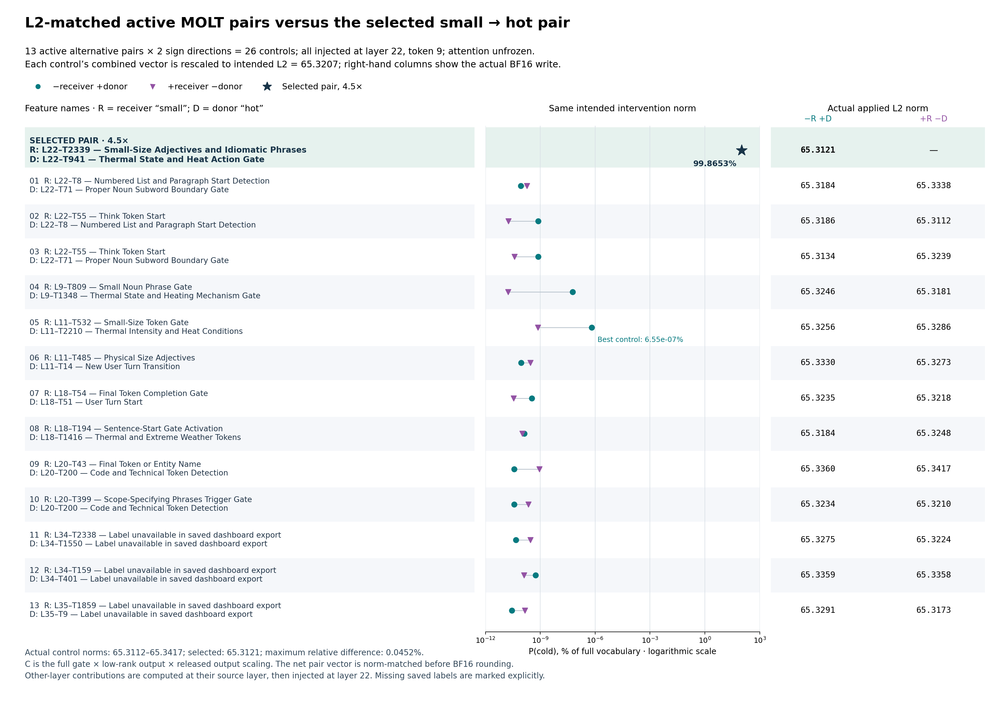
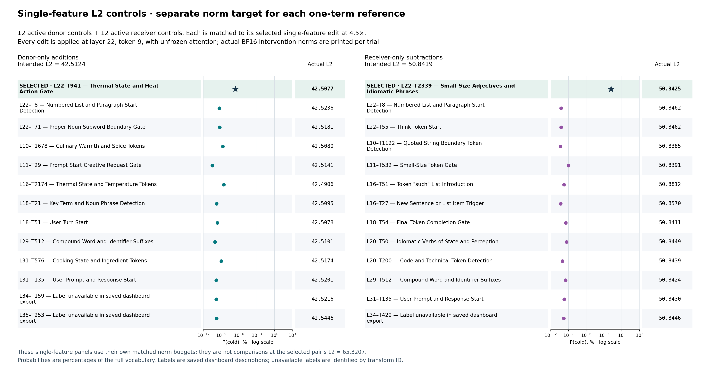
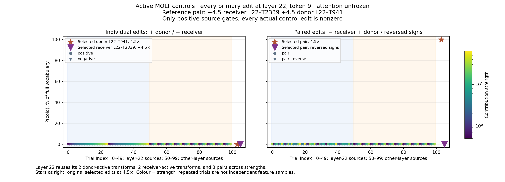
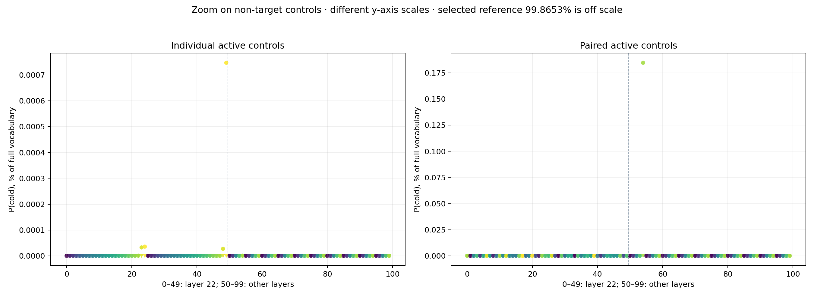

Active controls for the small → hot MOLT edit
The original uniform random controls were inactive at their source tokens. This follow-up tests only gate-active contributions. Native Qwen3-4B, unfrozen attention; all primary controls edit layer 22, token 9, matching the selected intervention site.
L2-matched control comparison · Jump to the 35 picked controls and activation values · Search individual trials
What was tested
400 primary active-control conditions: 100 donor additions, 100 receiver subtractions, and 100 pairs tested in both sign directions. For each recipe, 50 trials use layer 22 and 50 use the other-layer pool. Layer 22 has only two non-target active transforms per source and three distinct pairs; strength repetitions are counted as conditions, not unique feature draws.
There are 35 unique control transforms. Another 100 conditions sweep the selected features, and 50 conditions match the selected edit's FP32 vector norm at layer 22. A supplementary native-layer arm tests 240 other-layer conditions at their original layers. There are 790 conditions in total. Every source gate is positive and every actual BF16 MLP edit is nonzero.
Receiver: What is the opposite of "small"? Reply with only the word, nothing else.
Donor: What is the opposite of "hot"? Reply with only the word, nothing else.
Source and target token: position 9, respectively “hot” and “small,” including the chat template.
MLP_receiver_output[22,9] += −strength × C_receiver,A + strength × C_donor,B
C is the full gate × low-rank output × released output scaling, computed from the clean source input at its own native layer. Individual controls use one term. Reverse controls flip both signs. Pair members always come from the same source layer. Other-layer controls transfer their completed source contribution vectors to layer 22; they do not pass a layer-22 input into a differently trained gate.
Other layers screened: [9, 10, 11, 16, 18, 20, 29, 31, 34, 35]. Selection uses clean gates and a fixed seed before intervention outcomes. The complete release is pinned; layer 22's whole-checkpoint SHA256 is identical to the original release.
The strength grids differ between strata and include gains larger than 4.5. Source gates and actual write magnitudes are shown below; equal gain does not mean equal edit norm. The separate norm-matched controls address that difference. These are next-token probability tests, not a measure of semantic specificity across tasks.
The native-layer arm is retained separately. At the final layer 35, an MLP-output edit at token 9 cannot reach the readout at token 28 because no attention layer follows it. Those native-layer entries are structurally unable to change this readout; they are not included in the primary control comparison. Transferring the same source vectors to layer 22 avoids that missing-path problem.
L2-matched controls versus the selected pair
The paired comparison holds the combined intervention vector's intended L2 norm at 65.3207. There are 13 active alternative pairs, each tested in both sign directions (26 controls). All edits are applied at layer 22, receiver token 9, with unfrozen attention and the native MLP retained.
reference = −4.5 × C_small + 4.5 × C_hot
control = −C_receiver,A + C_donor,B
matched_control = control × L2(reference) / L2(control)
C is the complete gate × low-rank output × released output scaling. Matching the net vector includes cancellation between its two terms. Normalization is performed in FP32 before the original BF16 write. The right-hand columns in the figure show L2(MLP_after − MLP_before), the actual applied change.
Selected pair: 99.865262% P(cold), actual L2 65.312119. Best paired control: 6.5504572e-07% P(cold). Actual paired-control norms range from 65.311157 to 65.341660; the maximum relative difference from the selected actual norm is 0.04523% after BF16 rounding.

Full-size PNG · PDF · All 50 controls and three references, CSV · Structured data and source hashes · CPU-only figure source

The probability axis is logarithmic and displays percentages of the full vocabulary. Feature names are saved dashboard labels; absent labels are marked explicitly. Other-layer source vectors are computed at their original layer, then injected at layer 22. These are the previously executed controls, not new GPU runs.
Single-feature norm-matched controls (24 conditions)
The 12 donor additions are matched to selected donor-only L2 42.5124; the 12 receiver subtractions are matched to selected receiver-only L2 50.8419. These differ from the paired intervention's norm budget.


Every norm-matched control: features, coefficients and actual norms (53 rows including references)
| Condition | Features and actual contribution multipliers | Intended L2 | Actual L2 | P(cold) |
|---|---|---|---|---|
| reference_pairselected_pair_4.5 | -4.5 × receiver L22–T2339 — Small-Size Adjectives and Idiomatic Phrases Source gate 1.547915 +4.5 × donor L22–T941 — Thermal State and Heat Action Gate Source gate 1.607245 | 65.320663 | 65.312119 | 99.865262% |
| paired_controlnorm_matched_pair_0 | -4.66139 × receiver L22–T8 — Numbered List and Paragraph Start Detection Source gate 1.455656 +4.66139 × donor L22–T71 — Proper Noun Subword Boundary Gate Source gate 0.652307 | 65.320663 | 65.318398 | 8.670253e-11% |
| paired_controlnorm_matched_pair_reverse_0 | +4.66139 × receiver L22–T8 — Numbered List and Paragraph Start Detection Source gate 1.455656 -4.66139 × donor L22–T71 — Proper Noun Subword Boundary Gate Source gate 0.652307 | 65.320663 | 65.333786 | 1.8286707e-10% |
| paired_controlnorm_matched_pair_1 | -5.00831 × receiver L22–T55 — Think Token Start Source gate 0.643308 +5.00831 × donor L22–T8 — Numbered List and Paragraph Start Detection Source gate 1.467450 | 65.320663 | 65.318550 | 7.6055575e-10% |
| paired_controlnorm_matched_pair_reverse_1 | +5.00831 × receiver L22–T55 — Think Token Start Source gate 0.643308 -5.00831 × donor L22–T8 — Numbered List and Paragraph Start Detection Source gate 1.467450 | 65.320663 | 65.311157 | 1.8332349e-11% |
| paired_controlnorm_matched_pair_2 | -12.6466 × receiver L22–T55 — Think Token Start Source gate 0.643308 +12.6466 × donor L22–T71 — Proper Noun Subword Boundary Gate Source gate 0.652307 | 65.320663 | 65.313362 | 7.6302217e-10% |
| paired_controlnorm_matched_pair_reverse_2 | +12.6466 × receiver L22–T55 — Think Token Start Source gate 0.643308 -12.6466 × donor L22–T71 — Proper Noun Subword Boundary Gate Source gate 0.652307 | 65.320663 | 65.323853 | 3.8842474e-11% |
| paired_controlfixed_site_norm_matched_pair_3 | -11.3236 × receiver L9–T809 — Small Noun Phrase Gate Source gate 1.683610 +11.3236 × donor L9–T1348 — Thermal State and Heating Mechanism Gate Source gate 1.774613 | 65.320663 | 65.324600 | 5.8233223e-08% |
| paired_controlfixed_site_norm_matched_pair_reverse_3 | +11.3236 × receiver L9–T809 — Small Noun Phrase Gate Source gate 1.683610 -11.3236 × donor L9–T1348 — Thermal State and Heating Mechanism Gate Source gate 1.774613 | 65.320663 | 65.318108 | 1.7380296e-11% |
| paired_controlfixed_site_norm_matched_pair_4 | -6.89593 × receiver L20–T43 — Final Token or Entity Name Source gate 1.425364 +6.89593 × donor L20–T200 — Code and Technical Token Detection Source gate 0.595455 | 65.320663 | 65.336044 | 3.7168958e-11% |
| paired_controlfixed_site_norm_matched_pair_reverse_4 | +6.89593 × receiver L20–T43 — Final Token or Entity Name Source gate 1.425364 -6.89593 × donor L20–T200 — Code and Technical Token Detection Source gate 0.595455 | 65.320663 | 65.341660 | 8.8243457e-10% |
| paired_controlfixed_site_norm_matched_pair_5 | -18.8645 × receiver L11–T532 — Small-Size Token Gate Source gate 1.138663 +18.8645 × donor L11–T2210 — Thermal Intensity and Heat Conditions Source gate 0.689865 | 65.320663 | 65.325600 | 6.5504572e-07% |
| paired_controlfixed_site_norm_matched_pair_reverse_5 | +18.8645 × receiver L11–T532 — Small-Size Token Gate Source gate 1.138663 -18.8645 × donor L11–T2210 — Thermal Intensity and Heat Conditions Source gate 0.689865 | 65.320663 | 65.328583 | 7.517545e-10% |
| paired_controlfixed_site_norm_matched_pair_6 | -1.34291 × receiver L35–T1859 — No cached dashboard label Source gate 2.179855 +1.34291 × donor L35–T9 — No cached dashboard label Source gate 0.613243 | 65.320663 | 65.329140 | 2.8000577e-11% |
| paired_controlfixed_site_norm_matched_pair_reverse_6 | +1.34291 × receiver L35–T1859 — No cached dashboard label Source gate 2.179855 -1.34291 × donor L35–T9 — No cached dashboard label Source gate 0.613243 | 65.320663 | 65.317299 | 1.4147956e-10% |
| paired_controlfixed_site_norm_matched_pair_7 | -18.164 × receiver L20–T399 — Scope-Specifying Phrases Trigger Gate Source gate 0.736442 +18.164 × donor L20–T200 — Code and Technical Token Detection Source gate 0.595455 | 65.320663 | 65.323402 | 3.7700557e-11% |
| paired_controlfixed_site_norm_matched_pair_reverse_7 | +18.164 × receiver L20–T399 — Scope-Specifying Phrases Trigger Gate Source gate 0.736442 -18.164 × donor L20–T200 — Code and Technical Token Detection Source gate 0.595455 | 65.320663 | 65.320976 | 2.2144696e-10% |
| paired_controlfixed_site_norm_matched_pair_8 | -3.20709 × receiver L34–T2338 — No cached dashboard label Source gate 1.428205 +3.20709 × donor L34–T1550 — No cached dashboard label Source gate 0.626602 | 65.320663 | 65.327522 | 4.6825184e-11% |
| paired_controlfixed_site_norm_matched_pair_reverse_8 | +3.20709 × receiver L34–T2338 — No cached dashboard label Source gate 1.428205 -3.20709 × donor L34–T1550 — No cached dashboard label Source gate 0.626602 | 65.320663 | 65.322426 | 2.9178017e-10% |
| paired_controlfixed_site_norm_matched_pair_9 | -1.07344 × receiver L34–T159 — No cached dashboard label Source gate 1.723073 +1.07344 × donor L34–T401 — No cached dashboard label Source gate 1.121375 | 65.320663 | 65.335915 | 5.6073037e-10% |
| paired_controlfixed_site_norm_matched_pair_reverse_9 | +1.07344 × receiver L34–T159 — No cached dashboard label Source gate 1.723073 -1.07344 × donor L34–T401 — No cached dashboard label Source gate 1.121375 | 65.320663 | 65.335762 | 1.2977233e-10% |
| paired_controlfixed_site_norm_matched_pair_10 | -5.57654 × receiver L18–T54 — Final Token Completion Gate Source gate 1.217323 +5.57654 × donor L18–T51 — User Turn Start Source gate 1.426079 | 65.320663 | 65.323509 | 3.4483821e-10% |
| paired_controlfixed_site_norm_matched_pair_reverse_10 | +5.57654 × receiver L18–T54 — Final Token Completion Gate Source gate 1.217323 -5.57654 × donor L18–T51 — User Turn Start Source gate 1.426079 | 65.320663 | 65.321770 | 3.4665619e-11% |
| paired_controlfixed_site_norm_matched_pair_11 | -11.3743 × receiver L11–T485 — Physical Size Adjectives Source gate 0.661143 +11.3743 × donor L11–T14 — New User Turn Transition Source gate 1.270706 | 65.320663 | 65.332985 | 8.8245583e-11% |
| paired_controlfixed_site_norm_matched_pair_reverse_11 | +11.3743 × receiver L11–T485 — Physical Size Adjectives Source gate 0.661143 -11.3743 × donor L11–T14 — New User Turn Transition Source gate 1.270706 | 65.320663 | 65.327301 | 2.8351574e-10% |
| paired_controlfixed_site_norm_matched_pair_12 | -26.1653 × receiver L18–T194 — Sentence-Start Gate Activation Source gate 0.629272 +26.1653 × donor L18–T1416 — Thermal and Extreme Weather Tokens Source gate 0.685420 | 65.320663 | 65.318413 | 1.351381e-10% |
| paired_controlfixed_site_norm_matched_pair_reverse_12 | +26.1653 × receiver L18–T194 — Sentence-Start Gate Activation Source gate 0.629272 -26.1653 × donor L18–T1416 — Thermal and Extreme Weather Tokens Source gate 0.685420 | 65.320663 | 65.324791 | 1.0507517e-10% |
| reference_singleselected_positive_4.5 | +4.5 × donor L22–T941 — Thermal State and Heat Action Gate Source gate 1.607245 | 42.512398 | 42.507694 | 2.5176971e-07% |
| single_controlnorm_matched_positive_0 | +3.38213 × donor L22–T8 — Numbered List and Paragraph Start Detection Source gate 1.467450 | 42.512398 | 42.523560 | 4.7708002e-10% |
| single_controlnorm_matched_positive_1 | +10.5707 × donor L22–T71 — Proper Noun Subword Boundary Gate Source gate 0.652307 | 42.512402 | 42.518066 | 5.6181784e-10% |
| single_controlfixed_site_norm_matched_positive_2 | +3.6248 × donor L31–T576 — Cooking State and Ingredient Tokens Source gate 0.705557 | 42.512398 | 42.517429 | 1.0424849e-09% |
| single_controlfixed_site_norm_matched_positive_3 | +6.72965 × donor L11–T29 — Prompt Start Creative Request Gate Source gate 1.472315 | 42.512398 | 42.514072 | 3.2059065e-11% |
| single_controlfixed_site_norm_matched_positive_4 | +0.380667 × donor L35–T253 — No cached dashboard label Source gate 1.632757 | 42.512398 | 42.544636 | 1.7129285e-10% |
| single_controlfixed_site_norm_matched_positive_5 | +12.5563 × donor L10–T1678 — Culinary Warmth and Spice Tokens Source gate 1.473570 | 42.512398 | 42.507996 | 1.9133809e-09% |
| single_controlfixed_site_norm_matched_positive_6 | +3.8584 × donor L29–T512 — Compound Word and Identifier Suffixes Source gate 0.895190 | 42.512398 | 42.510120 | 9.2519508e-11% |
| single_controlfixed_site_norm_matched_positive_7 | +0.937513 × donor L34–T159 — No cached dashboard label Source gate 1.587568 | 42.512398 | 42.521626 | 1.4791087e-10% |
| single_controlfixed_site_norm_matched_positive_8 | +2.19457 × donor L31–T135 — User Prompt and Response Start Source gate 1.149179 | 42.512398 | 42.520088 | 1.4390036e-10% |
| single_controlfixed_site_norm_matched_positive_9 | +8.05939 × donor L18–T21 — Key Term and Noun Phrase Detection Source gate 1.396275 | 42.512394 | 42.509525 | 1.7489763e-10% |
| single_controlfixed_site_norm_matched_positive_10 | +4.75315 × donor L18–T51 — User Turn Start Source gate 1.426079 | 42.512398 | 42.507786 | 2.2227848e-10% |
| single_controlfixed_site_norm_matched_positive_11 | +19.3206 × donor L16–T2174 — Thermal State and Temperature Tokens Source gate 0.634825 | 42.512402 | 42.490623 | 2.7504845e-09% |
| reference_singleselected_negative_4.5 | -4.5 × receiver L22–T2339 — Small-Size Adjectives and Idiomatic Phrases Source gate 1.547915 | 50.841900 | 50.842487 | 0.015891006% |
| single_controlnorm_matched_negative_0 | -3.84561 × receiver L22–T8 — Numbered List and Paragraph Start Detection Source gate 1.455656 | 50.841900 | 50.846249 | 5.4948107e-11% |
| single_controlnorm_matched_negative_1 | -13.0016 × receiver L22–T55 — Think Token Start Source gate 0.643308 | 50.841900 | 50.846249 | 5.7100459e-11% |
| single_controlfixed_site_norm_matched_negative_2 | -5.40319 × receiver L29–T512 — Compound Word and Identifier Suffixes Source gate 0.875420 | 50.841900 | 50.842445 | 3.2205102e-10% |
| single_controlfixed_site_norm_matched_negative_3 | -8.97751 × receiver L18–T54 — Final Token Completion Gate Source gate 1.217323 | 50.841900 | 50.841148 | 3.55757e-10% |
| single_controlfixed_site_norm_matched_negative_4 | -29.8767 × receiver L10–T1122 — Quoted String Boundary Token Detection Source gate 0.623367 | 50.841900 | 50.838520 | 4.398561e-11% |
| single_controlfixed_site_norm_matched_negative_5 | -2.60287 × receiver L31–T135 — User Prompt and Response Start Source gate 1.345802 | 50.841900 | 50.842957 | 1.8626837e-10% |
| single_controlfixed_site_norm_matched_negative_6 | -19.2778 × receiver L20–T50 — Idiomatic Verbs of State and Perception Source gate 0.558604 | 50.841896 | 50.844944 | 4.9050708e-10% |
| single_controlfixed_site_norm_matched_negative_7 | -3.68437 × receiver L16–T51 — Token "such" List Introduction Source gate 1.266041 | 50.841904 | 50.881226 | 1.8144288e-10% |
| single_controlfixed_site_norm_matched_negative_8 | -27.0746 × receiver L20–T200 — Code and Technical Token Detection Source gate 0.530284 | 50.841900 | 50.843868 | 9.8354557e-11% |
| single_controlfixed_site_norm_matched_negative_9 | -1.49086 × receiver L34–T429 — No cached dashboard label Source gate 1.965343 | 50.841896 | 50.844620 | 1.6442823e-10% |
| single_controlfixed_site_norm_matched_negative_10 | -9.22369 × receiver L16–T27 — New Sentence or List Item Trigger Source gate 1.043629 | 50.841896 | 50.857002 | 4.9922341e-11% |
| single_controlfixed_site_norm_matched_negative_11 | -18.7221 × receiver L11–T532 — Small-Size Token Gate Source gate 1.138663 | 50.841896 | 50.839081 | 1.0455777e-09% |
Corrected scatterplot


Zoom on the active controls

These probabilities are small, but the edits are nonzero. The two zoom panels use different y-axis scales.
Maximum P(cold) by control group
Selected L22–T2339 / T941 pair at 4.5×: 99.865262%. Maxima below are exploratory maxima across each stated grid; counts include repeated strengths.
| Source pool | Recipe | Conditions | Maximum P(cold) | Conditions above 99% |
|---|---|---|---|---|
| same_layer | positive | 50 | 0.000746833% | 0 |
| same_layer | negative | 50 | 1.78661e-08% | 0 |
| same_layer | pair | 50 | 7.66138e-05% | 0 |
| same_layer | pair_reverse | 50 | 2.96253e-08% | 0 |
| other_layers_fixed_site | positive | 50 | 6.92645e-07% | 0 |
| other_layers_fixed_site | negative | 50 | 1.62322e-07% | 0 |
| other_layers_fixed_site | pair | 50 | 0.184581% | 0 |
| other_layers_fixed_site | pair_reverse | 50 | 1.33581e-06% | 0 |
| norm_matched_at_layer22 | positive | 12 | 2.75048e-09% | 0 |
| norm_matched_at_layer22 | negative | 12 | 1.04558e-09% | 0 |
| norm_matched_at_layer22 | pair | 13 | 6.55046e-07% | 0 |
| norm_matched_at_layer22 | pair_reverse | 13 | 8.82435e-10% | 0 |
| other_layers | positive | 50 | 0.000229654% | 0 |
| other_layers | negative | 50 | 1.52236e-05% | 0 |
| other_layers | pair | 50 | 0.192664% | 0 |
| other_layers | pair_reverse | 50 | 0.000213397% | 0 |
| norm_matched_at_native_layer | positive | 10 | 3.63556e-08% | 0 |
| norm_matched_at_native_layer | negative | 10 | 1.4916e-07% | 0 |
| norm_matched_at_native_layer | pair | 10 | 6.71282e-05% | 0 |
| norm_matched_at_native_layer | pair_reverse | 10 | 8.32044e-10% | 0 |
Picked transforms and average active gates
35 control transforms and two reference transforms. The bracketed mean averages a transform's nonzero source gates at token 9 across the clean receiver and donor. Zeros are excluded from this active-only average; both raw source values are shown separately. This is not an average over other token positions, steering strengths, or the training corpus.
| Transform ID | Dashboard label [average active gate] | Receiver: small | Donor: hot |
|---|---|---|---|
| L9–T809Active control | Small Noun Phrase Gate [mean active gate=1.683610] | 1.683610C norm 3.7815 | -0.000000C norm 0 |
| L9–T1348Active control | Thermal State and Heating Mechanism Gate [mean active gate=1.774613] | -0.000000C norm 0 | 1.774613C norm 4.4966 |
| L10–T1122Active control | Quoted String Boundary Token Detection [mean active gate=0.623367] | 0.623367C norm 1.7017 | 0.000000C norm 0 |
| L10–T1678Active control | Culinary Warmth and Spice Tokens [mean active gate=1.473570] | -0.000000C norm 0 | 1.473570C norm 3.3858 |
| L11–T14Active control | New User Turn Transition [mean active gate=1.286096] | 1.301487C norm 5.3208 | 1.270706C norm 5.4407 |
| L11–T29Active control | Prompt Start Creative Request Gate [mean active gate=1.487976] | 1.503636C norm 6.3649 | 1.472315C norm 6.3172 |
| L11–T485Active control | Physical Size Adjectives [mean active gate=0.661143] | 0.661143C norm 1.6521 | -0.000000C norm 0 |
| L11–T532Active control | Small-Size Token Gate [mean active gate=1.138663] | 1.138663C norm 2.7156 | -0.000000C norm 0 |
| L11–T2210Active control | Thermal Intensity and Heat Conditions [mean active gate=0.689865] | -0.000000C norm 0 | 0.689865C norm 2.2063 |
| L16–T27Active control | New Sentence or List Item Trigger [mean active gate=1.032845] | 1.043629C norm 5.5121 | 1.022061C norm 5.1451 |
| L16–T51Active control | Token "such" List Introduction [mean active gate=1.244385] | 1.266041C norm 13.799 | 1.222728C norm 11.133 |
| L16–T2174Active control | Thermal State and Temperature Tokens [mean active gate=0.634825] | -0.000000C norm 0 | 0.634825C norm 2.2004 |
| L18–T21Active control | Key Term and Noun Phrase Detection [mean active gate=1.370023] | 1.343772C norm 5.0599 | 1.396275C norm 5.2749 |
| L18–T51Active control | User Turn Start [mean active gate=1.471592] | 1.517105C norm 9.1397 | 1.426079C norm 8.944 |
| L18–T54Active control | Final Token Completion Gate [mean active gate=1.206576] | 1.217323C norm 5.6633 | 1.195829C norm 5.8738 |
| L18–T194Active control | Sentence-Start Gate Activation [mean active gate=0.629272] | 0.629272C norm 2.2272 | 0.000000C norm 0 |
| L18–T1416Active control | Thermal and Extreme Weather Tokens [mean active gate=0.685420] | -0.000000C norm 0 | 0.685420C norm 1.1617 |
| L20–T43Active control | Final Token or Entity Name [mean active gate=1.414341] | 1.425364C norm 9.2487 | 1.403318C norm 9.146 |
| L20–T50Active control | Idiomatic Verbs of State and Perception [mean active gate=0.558604] | 0.558604C norm 2.6373 | 0.000000C norm 0 |
| L20–T200Active control | Code and Technical Token Detection [mean active gate=0.562869] | 0.530284C norm 1.8778 | 0.595455C norm 2.0011 |
| L20–T399Active control | Scope-Specifying Phrases Trigger Gate [mean active gate=0.935780] | 0.736442C norm 3.0581 | 1.135118C norm 4.4406 |
| L22–T8Active control | Numbered List and Paragraph Start Detection [mean active gate=1.461553] | 1.455656C norm 13.221 | 1.467450C norm 12.57 |
| L22–T55Active control | Think Token Start [mean active gate=0.643308] | 0.643308C norm 3.9104 | 0.000000C norm 0 |
| L22–T71Active control | Proper Noun Subword Boundary Gate [mean active gate=0.652307] | 0.000000C norm 0 | 0.652307C norm 4.0217 |
| L22–T941Reference | Thermal State and Heat Action Gate [mean active gate=1.607245] | -0.000000C norm 0 | 1.607245C norm 9.4472 |
| L22–T2339Reference | Small-Size Adjectives and Idiomatic Phrases [mean active gate=1.547915] | 1.547915C norm 11.298 | -0.000000C norm 0 |
| L29–T512Active control | Compound Word and Identifier Suffixes [mean active gate=0.885305] | 0.875420C norm 9.4096 | 0.895190C norm 11.018 |
| L31–T135Active control | User Prompt and Response Start [mean active gate=1.247491] | 1.345802C norm 19.533 | 1.149179C norm 19.372 |
| L31–T576Active control | Cooking State and Ingredient Tokens [mean active gate=0.705557] | -0.000000C norm 0 | 0.705557C norm 11.728 |
| L34–T159Active control | No cached dashboard label [mean active gate=1.655320] | 1.723073C norm 54.046 | 1.587568C norm 45.346 |
| L34–T401Active control | No cached dashboard label [mean active gate=1.121375] | -0.000000C norm 0 | 1.121375C norm 27.598 |
| L34–T429Active control | No cached dashboard label [mean active gate=1.875990] | 1.965343C norm 34.102 | 1.786638C norm 28.708 |
| L34–T1550Active control | No cached dashboard label [mean active gate=0.626602] | -0.000000C norm 0 | 0.626602C norm 10.138 |
| L34–T2338Active control | No cached dashboard label [mean active gate=1.428205] | 1.428205C norm 18.334 | -0.000000C norm 0 |
| L35–T9Active control | No cached dashboard label [mean active gate=0.613243] | -0.000000C norm 0 | 0.613243C norm 19.76 |
| L35–T253Active control | No cached dashboard label [mean active gate=1.653961] | 1.675166C norm 157.43 | 1.632757C norm 111.68 |
| L35–T1859Active control | No cached dashboard label [mean active gate=2.039071] | 2.179855C norm 50.59 | 1.898287C norm 44.682 |
Every feature, activation, strength, and result
Brackets show the source-specific gate at token 9. The mean column averages gates of the contributing source terms; for a single term it equals that source gate. The eight identical clean source rows are verified identical. Gates are not averaged over unrelated prompt tokens or scaled by the steering strength.
790 conditions
| Trial / source and edit layers | Strength | Features and applied coefficients [source gate] | Mean source gate | Edit L2 norm | P(cold) | P(large) / top token |
|---|---|---|---|---|---|---|
| same_layer_positive_0same_layer · positivesource L22 → edit L22, token 9 | 0.5 | +0.5 × donor L22–T8 — Numbered List and Paragraph Start Detection [source gate=1.467450] | 1.467450 | 6.2848actual 6.2839; native MLP 25.853 | 2.449269e-10% | 89.5627%top: large |
| same_layer_positive_1same_layer · positivesource L22 → edit L22, token 9 | 0.75 | +0.75 × donor L22–T8 — Numbered List and Paragraph Start Detection [source gate=1.467450] | 1.467450 | 9.4273actual 9.4242; native MLP 25.853 | 3.144925e-10% | 89.5627%top: large |
| same_layer_positive_2same_layer · positivesource L22 → edit L22, token 9 | 1 | +1 × donor L22–T8 — Numbered List and Paragraph Start Detection [source gate=1.467450] | 1.467450 | 12.57actual 12.568; native MLP 25.853 | 3.631505e-10% | 91.2676%top: large |
| same_layer_positive_3same_layer · positivesource L22 → edit L22, token 9 | 1.5 | +1.5 × donor L22–T8 — Numbered List and Paragraph Start Detection [source gate=1.467450] | 1.467450 | 18.855actual 18.855; native MLP 25.853 | 4.174277e-10% | 92.5816%top: large |
| same_layer_positive_4same_layer · positivesource L22 → edit L22, token 9 | 2 | +2 × donor L22–T8 — Numbered List and Paragraph Start Detection [source gate=1.467450] | 1.467450 | 25.139actual 25.138; native MLP 25.853 | 4.749152e-10% | 92.955%top: large |
| same_layer_positive_5same_layer · positivesource L22 → edit L22, token 9 | 2.5 | +2.5 × donor L22–T8 — Numbered List and Paragraph Start Detection [source gate=1.467450] | 1.467450 | 31.424actual 31.425; native MLP 25.853 | 5.377976e-10% | 92.8942%top: large |
| same_layer_positive_6same_layer · positivesource L22 → edit L22, token 9 | 3 | +3 × donor L22–T8 — Numbered List and Paragraph Start Detection [source gate=1.467450] | 1.467450 | 37.709actual 37.71; native MLP 25.853 | 5.344807e-10% | 92.3213%top: large |
| same_layer_positive_7same_layer · positivesource L22 → edit L22, token 9 | 3.5 | +3.5 × donor L22–T8 — Numbered List and Paragraph Start Detection [source gate=1.467450] | 1.467450 | 43.994actual 43.994; native MLP 25.853 | 6.882822e-10% | 92.5897%top: large |
| same_layer_positive_8same_layer · positivesource L22 → edit L22, token 9 | 4 | +4 × donor L22–T8 — Numbered List and Paragraph Start Detection [source gate=1.467450] | 1.467450 | 50.279actual 50.276; native MLP 25.853 | 7.715544e-10% | 91.5959%top: large |
| same_layer_positive_9same_layer · positivesource L22 → edit L22, token 9 | 4.5 | +4.5 × donor L22–T8 — Numbered List and Paragraph Start Detection [source gate=1.467450] | 1.467450 | 56.564actual 56.567; native MLP 25.853 | 6.72188e-10% | 90.4246%top: large |
| same_layer_positive_10same_layer · positivesource L22 → edit L22, token 9 | 5 | +5 × donor L22–T8 — Numbered List and Paragraph Start Detection [source gate=1.467450] | 1.467450 | 62.848actual 62.837; native MLP 25.853 | 6.808943e-10% | 91.5958%top: large |
| same_layer_positive_11same_layer · positivesource L22 → edit L22, token 9 | 6 | +6 × donor L22–T8 — Numbered List and Paragraph Start Detection [source gate=1.467450] | 1.467450 | 75.418actual 75.415; native MLP 25.853 | 8.631043e-10% | 90.4244%top: large |
| same_layer_positive_12same_layer · positivesource L22 → edit L22, token 9 | 7 | +7 × donor L22–T8 — Numbered List and Paragraph Start Detection [source gate=1.467450] | 1.467450 | 87.988actual 87.987; native MLP 25.853 | 1.107339e-09% | 90.3503%top: large |
| same_layer_positive_13same_layer · positivesource L22 → edit L22, token 9 | 8 | +8 × donor L22–T8 — Numbered List and Paragraph Start Detection [source gate=1.467450] | 1.467450 | 100.56actual 100.55; native MLP 25.853 | 2.250749e-09% | 86.7471%top: large |
| same_layer_positive_14same_layer · positivesource L22 → edit L22, token 9 | 9 | +9 × donor L22–T8 — Numbered List and Paragraph Start Detection [source gate=1.467450] | 1.467450 | 113.13actual 113.13; native MLP 25.853 | 2.550418e-09% | 86.7466%top: large |
| same_layer_positive_15same_layer · positivesource L22 → edit L22, token 9 | 10 | +10 × donor L22–T8 — Numbered List and Paragraph Start Detection [source gate=1.467450] | 1.467450 | 125.7actual 125.68; native MLP 25.853 | 3.488873e-09% | 81.5579%top: large |
| same_layer_positive_16same_layer · positivesource L22 → edit L22, token 9 | 12 | +12 × donor L22–T8 — Numbered List and Paragraph Start Detection [source gate=1.467450] | 1.467450 | 150.84actual 150.81; native MLP 25.853 | 6.056404e-09% | 75.7812%top: large |
| same_layer_positive_17same_layer · positivesource L22 → edit L22, token 9 | 14 | +14 × donor L22–T8 — Numbered List and Paragraph Start Detection [source gate=1.467450] | 1.467450 | 175.98actual 175.97; native MLP 25.853 | 1.078465e-08% | 67.854%top: large |
| same_layer_positive_18same_layer · positivesource L22 → edit L22, token 9 | 16 | +16 × donor L22–T8 — Numbered List and Paragraph Start Detection [source gate=1.467450] | 1.467450 | 201.12actual 201.1; native MLP 25.853 | 1.239072e-08% | 60.7145%top: large |
| same_layer_positive_19same_layer · positivesource L22 → edit L22, token 9 | 20 | +20 × donor L22–T8 — Numbered List and Paragraph Start Detection [source gate=1.467450] | 1.467450 | 251.39actual 251.36; native MLP 25.853 | 3.127077e-08% | 41.2404%top: large |
| same_layer_positive_20same_layer · positivesource L22 → edit L22, token 9 | 24 | +24 × donor L22–T8 — Numbered List and Paragraph Start Detection [source gate=1.467450] | 1.467450 | 301.67actual 301.59; native MLP 25.853 | 7.732673e-08% | 35.2432%top: large |
| same_layer_positive_21same_layer · positivesource L22 → edit L22, token 9 | 28 | +28 × donor L22–T8 — Numbered List and Paragraph Start Detection [source gate=1.467450] | 1.467450 | 351.95actual 351.85; native MLP 25.853 | 2.133542e-07% | 24.5863%top: big |
| same_layer_positive_22same_layer · positivesource L22 → edit L22, token 9 | 32 | +32 × donor L22–T8 — Numbered List and Paragraph Start Detection [source gate=1.467450] | 1.467450 | 402.23actual 402.1; native MLP 25.853 | 7.140001e-07% | 18.359%top: big |
| same_layer_positive_23same_layer · positivesource L22 → edit L22, token 9 | 48 | +48 × donor L22–T8 — Numbered List and Paragraph Start Detection [source gate=1.467450] | 1.467450 | 603.35actual 603.36; native MLP 25.853 | 3.262511e-05% | 7.25776%top: big |
| same_layer_positive_24same_layer · positivesource L22 → edit L22, token 9 | 64 | +64 × donor L22–T8 — Numbered List and Paragraph Start Detection [source gate=1.467450] | 1.467450 | 804.46actual 804.41; native MLP 25.853 | 3.575086e-05% | 1.21965%top: Opp |
| same_layer_positive_25same_layer · positivesource L22 → edit L22, token 9 | 0.5 | +0.5 × donor L22–T71 — Proper Noun Subword Boundary Gate [source gate=0.652307] | 0.652307 | 2.0109actual 2.0123; native MLP 25.853 | 2.169154e-10% | 89.881%top: large |
| same_layer_positive_26same_layer · positivesource L22 → edit L22, token 9 | 0.75 | +0.75 × donor L22–T71 — Proper Noun Subword Boundary Gate [source gate=0.652307] | 0.652307 | 3.0163actual 3.0171; native MLP 25.853 | 1.914272e-10% | 89.881%top: large |
| same_layer_positive_27same_layer · positivesource L22 → edit L22, token 9 | 1 | +1 × donor L22–T71 — Proper Noun Subword Boundary Gate [source gate=0.652307] | 0.652307 | 4.0217actual 4.0228; native MLP 25.853 | 2.457974e-10% | 89.881%top: large |
| same_layer_positive_28same_layer · positivesource L22 → edit L22, token 9 | 1.5 | +1.5 × donor L22–T71 — Proper Noun Subword Boundary Gate [source gate=0.652307] | 0.652307 | 6.0326actual 6.0318; native MLP 25.853 | 1.916272e-10% | 89.9749%top: large |
| same_layer_positive_29same_layer · positivesource L22 → edit L22, token 9 | 2 | +2 × donor L22–T71 — Proper Noun Subword Boundary Gate [source gate=0.652307] | 0.652307 | 8.0435actual 8.0445; native MLP 25.853 | 2.707437e-10% | 87.37%top: large |
| same_layer_positive_30same_layer · positivesource L22 → edit L22, token 9 | 2.5 | +2.5 × donor L22–T71 — Proper Noun Subword Boundary Gate [source gate=0.652307] | 0.652307 | 10.054actual 10.053; native MLP 25.853 | 3.063625e-10% | 87.2474%top: large |
| same_layer_positive_31same_layer · positivesource L22 → edit L22, token 9 | 3 | +3 × donor L22–T71 — Proper Noun Subword Boundary Gate [source gate=0.652307] | 0.652307 | 12.065actual 12.064; native MLP 25.853 | 1.914273e-10% | 89.881%top: large |
| same_layer_positive_32same_layer · positivesource L22 → edit L22, token 9 | 3.5 | +3.5 × donor L22–T71 — Proper Noun Subword Boundary Gate [source gate=0.652307] | 0.652307 | 14.076actual 14.074; native MLP 25.853 | 2.387838e-10% | 87.3163%top: large |
| same_layer_positive_33same_layer · positivesource L22 → edit L22, token 9 | 4 | +4 × donor L22–T71 — Proper Noun Subword Boundary Gate [source gate=0.652307] | 0.652307 | 16.087actual 16.088; native MLP 25.853 | 3.799983e-10% | 84.2801%top: large |
| same_layer_positive_34same_layer · positivesource L22 → edit L22, token 9 | 4.5 | +4.5 × donor L22–T71 — Proper Noun Subword Boundary Gate [source gate=0.652307] | 0.652307 | 18.098actual 18.095; native MLP 25.853 | 3.350197e-10% | 84.1978%top: large |
| same_layer_positive_35same_layer · positivesource L22 → edit L22, token 9 | 5 | +5 × donor L22–T71 — Proper Noun Subword Boundary Gate [source gate=0.652307] | 0.652307 | 20.109actual 20.106; native MLP 25.853 | 3.633206e-10% | 80.5811%top: large |
| same_layer_positive_36same_layer · positivesource L22 → edit L22, token 9 | 6 | +6 × donor L22–T71 — Proper Noun Subword Boundary Gate [source gate=0.652307] | 0.652307 | 24.13actual 24.128; native MLP 25.853 | 4.116961e-10% | 80.5811%top: large |
| same_layer_positive_37same_layer · positivesource L22 → edit L22, token 9 | 7 | +7 × donor L22–T71 — Proper Noun Subword Boundary Gate [source gate=0.652307] | 0.652307 | 28.152actual 28.154; native MLP 25.853 | 3.7737e-10% | 83.6972%top: large |
| same_layer_positive_38same_layer · positivesource L22 → edit L22, token 9 | 8 | +8 × donor L22–T71 — Proper Noun Subword Boundary Gate [source gate=0.652307] | 0.652307 | 32.174actual 32.176; native MLP 25.853 | 3.894457e-10% | 76.226%top: large |
| same_layer_positive_39same_layer · positivesource L22 → edit L22, token 9 | 9 | +9 × donor L22–T71 — Proper Noun Subword Boundary Gate [source gate=0.652307] | 0.652307 | 36.196actual 36.198; native MLP 25.853 | 4.637001e-10% | 80.0953%top: large |
| same_layer_positive_40same_layer · positivesource L22 → edit L22, token 9 | 10 | +10 × donor L22–T71 — Proper Noun Subword Boundary Gate [source gate=0.652307] | 0.652307 | 40.217actual 40.216; native MLP 25.853 | 5.292674e-10% | 71.1986%top: large |
| same_layer_positive_41same_layer · positivesource L22 → edit L22, token 9 | 12 | +12 × donor L22–T71 — Proper Noun Subword Boundary Gate [source gate=0.652307] | 0.652307 | 48.261actual 48.262; native MLP 25.853 | 6.770834e-10% | 70.9357%top: large |
| same_layer_positive_42same_layer · positivesource L22 → edit L22, token 9 | 14 | +14 × donor L22–T71 — Proper Noun Subword Boundary Gate [source gate=0.652307] | 0.652307 | 56.304actual 56.301; native MLP 25.853 | 7.63617e-10% | 70.6011%top: large |
| same_layer_positive_43same_layer · positivesource L22 → edit L22, token 9 | 16 | +16 × donor L22–T71 — Proper Noun Subword Boundary Gate [source gate=0.652307] | 0.652307 | 64.348actual 64.356; native MLP 25.853 | 8.01324e-10% | 65.3818%top: large |
| same_layer_positive_44same_layer · positivesource L22 → edit L22, token 9 | 20 | +20 × donor L22–T71 — Proper Noun Subword Boundary Gate [source gate=0.652307] | 0.652307 | 80.435actual 80.422; native MLP 25.853 | 1.599934e-09% | 48.0238%top: large |
| same_layer_positive_45same_layer · positivesource L22 → edit L22, token 9 | 24 | +24 × donor L22–T71 — Proper Noun Subword Boundary Gate [source gate=0.652307] | 0.652307 | 96.522actual 96.519; native MLP 25.853 | 3.804251e-09% | 42.0077%top: Large |
| same_layer_positive_46same_layer · positivesource L22 → edit L22, token 9 | 28 | +28 × donor L22–T71 — Proper Noun Subword Boundary Gate [source gate=0.652307] | 0.652307 | 112.61actual 112.59; native MLP 25.853 | 1.293575e-08% | 36.1157%top: Large |
| same_layer_positive_47same_layer · positivesource L22 → edit L22, token 9 | 32 | +32 × donor L22–T71 — Proper Noun Subword Boundary Gate [source gate=0.652307] | 0.652307 | 128.7actual 128.69; native MLP 25.853 | 5.724371e-08% | 35.6608%top: Large |
| same_layer_positive_48same_layer · positivesource L22 → edit L22, token 9 | 48 | +48 × donor L22–T71 — Proper Noun Subword Boundary Gate [source gate=0.652307] | 0.652307 | 193.04actual 193.04; native MLP 25.853 | 2.73515e-05% | 25.6171%top: Large |
| same_layer_positive_49same_layer · positivesource L22 → edit L22, token 9 | 64 | +64 × donor L22–T71 — Proper Noun Subword Boundary Gate [source gate=0.652307] | 0.652307 | 257.39actual 257.4; native MLP 25.853 | 0.0007468326% | 23.9347%top: Large |
| same_layer_negative_0same_layer · negativesource L22 → edit L22, token 9 | 0.5 | -0.5 × receiver L22–T8 — Numbered List and Paragraph Start Detection [source gate=1.455656] | 1.455656 | 6.6104actual 6.6116; native MLP 25.853 | 1.45325e-10% | 87.6149%top: large |
| same_layer_negative_1same_layer · negativesource L22 → edit L22, token 9 | 0.75 | -0.75 × receiver L22–T8 — Numbered List and Paragraph Start Detection [source gate=1.455656] | 1.455656 | 9.9156actual 9.9149; native MLP 25.853 | 1.454402e-10% | 87.6844%top: large |
| same_layer_negative_2same_layer · negativesource L22 → edit L22, token 9 | 1 | -1 × receiver L22–T8 — Numbered List and Paragraph Start Detection [source gate=1.455656] | 1.455656 | 13.221actual 13.221; native MLP 25.853 | 1.804375e-10% | 84.721%top: large |
| same_layer_negative_3same_layer · negativesource L22 → edit L22, token 9 | 1.5 | -1.5 × receiver L22–T8 — Numbered List and Paragraph Start Detection [source gate=1.455656] | 1.455656 | 19.831actual 19.831; native MLP 25.853 | 1.051858e-10% | 81.427%top: large |
| same_layer_negative_4same_layer · negativesource L22 → edit L22, token 9 | 2 | -2 × receiver L22–T8 — Numbered List and Paragraph Start Detection [source gate=1.455656] | 1.455656 | 26.442actual 26.438; native MLP 25.853 | 8.710222e-11% | 81.3338%top: large |
| same_layer_negative_5same_layer · negativesource L22 → edit L22, token 9 | 2.5 | -2.5 × receiver L22–T8 — Numbered List and Paragraph Start Detection [source gate=1.455656] | 1.455656 | 33.052actual 33.05; native MLP 25.853 | 9.386162e-11% | 77.3469%top: large |
| same_layer_negative_6same_layer · negativesource L22 → edit L22, token 9 | 3 | -3 × receiver L22–T8 — Numbered List and Paragraph Start Detection [source gate=1.455656] | 1.455656 | 39.662actual 39.666; native MLP 25.853 | 4.730872e-11% | 72.8333%top: large |
| same_layer_negative_7same_layer · negativesource L22 → edit L22, token 9 | 3.5 | -3.5 × receiver L22–T8 — Numbered List and Paragraph Start Detection [source gate=1.455656] | 1.455656 | 46.273actual 46.277; native MLP 25.853 | 5.293589e-11% | 67.563%top: large |
| same_layer_negative_8same_layer · negativesource L22 → edit L22, token 9 | 4 | -4 × receiver L22–T8 — Numbered List and Paragraph Start Detection [source gate=1.455656] | 1.455656 | 52.883actual 52.882; native MLP 25.853 | 3.547717e-11% | 61.8906%top: large |
| same_layer_negative_9same_layer · negativesource L22 → edit L22, token 9 | 4.5 | -4.5 × receiver L22–T8 — Numbered List and Paragraph Start Detection [source gate=1.455656] | 1.455656 | 59.493actual 59.495; native MLP 25.853 | 3.776526e-11% | 61.8906%top: large |
| same_layer_negative_10same_layer · negativesource L22 → edit L22, token 9 | 5 | -5 × receiver L22–T8 — Numbered List and Paragraph Start Detection [source gate=1.455656] | 1.455656 | 66.104actual 66.101; native MLP 25.853 | 4.371265e-11% | 55.7912%top: large |
| same_layer_negative_11same_layer · negativesource L22 → edit L22, token 9 | 6 | -6 × receiver L22–T8 — Numbered List and Paragraph Start Detection [source gate=1.455656] | 1.455656 | 79.325actual 79.326; native MLP 25.853 | 4.135538e-11% | 49.5847%top: large |
| same_layer_negative_12same_layer · negativesource L22 → edit L22, token 9 | 7 | -7 × receiver L22–T8 — Numbered List and Paragraph Start Detection [source gate=1.455656] | 1.455656 | 92.545actual 92.554; native MLP 25.853 | 6.332184e-11% | 43.2592%top: Large |
| same_layer_negative_13same_layer · negativesource L22 → edit L22, token 9 | 8 | -8 × receiver L22–T8 — Numbered List and Paragraph Start Detection [source gate=1.455656] | 1.455656 | 105.77actual 105.75; native MLP 25.853 | 1.045571e-10% | 49.0928%top: large |
| same_layer_negative_14same_layer · negativesource L22 → edit L22, token 9 | 9 | -9 × receiver L22–T8 — Numbered List and Paragraph Start Detection [source gate=1.455656] | 1.455656 | 118.99actual 118.98; native MLP 25.853 | 2.347522e-10% | 48.9113%top: large |
| same_layer_negative_15same_layer · negativesource L22 → edit L22, token 9 | 10 | -10 × receiver L22–T8 — Numbered List and Paragraph Start Detection [source gate=1.455656] | 1.455656 | 132.21actual 132.2; native MLP 25.853 | 5.519228e-10% | 65.5221%top: large |
| same_layer_negative_16same_layer · negativesource L22 → edit L22, token 9 | 12 | -12 × receiver L22–T8 — Numbered List and Paragraph Start Detection [source gate=1.455656] | 1.455656 | 158.65actual 158.66; native MLP 25.853 | 4.530608e-09% | 64.2377%top: large |
| same_layer_negative_17same_layer · negativesource L22 → edit L22, token 9 | 14 | -14 × receiver L22–T8 — Numbered List and Paragraph Start Detection [source gate=1.455656] | 1.455656 | 185.09actual 185.11; native MLP 25.853 | 1.786606e-08% | 2.99558%top: Opp |
| same_layer_negative_18same_layer · negativesource L22 → edit L22, token 9 | 16 | -16 × receiver L22–T8 — Numbered List and Paragraph Start Detection [source gate=1.455656] | 1.455656 | 211.53actual 211.52; native MLP 25.853 | 4.829923e-09% | 0.0403189%top: Opp |
| same_layer_negative_19same_layer · negativesource L22 → edit L22, token 9 | 20 | -20 × receiver L22–T8 — Numbered List and Paragraph Start Detection [source gate=1.455656] | 1.455656 | 264.42actual 264.41; native MLP 25.853 | 3.768181e-09% | 0.00331541%top: Opp |
| same_layer_negative_20same_layer · negativesource L22 → edit L22, token 9 | 24 | -24 × receiver L22–T8 — Numbered List and Paragraph Start Detection [source gate=1.455656] | 1.455656 | 317.3actual 317.28; native MLP 25.853 | 4.120607e-09% | 0.00151133%top: Opp |
| same_layer_negative_21same_layer · negativesource L22 → edit L22, token 9 | 28 | -28 × receiver L22–T8 — Numbered List and Paragraph Start Detection [source gate=1.455656] | 1.455656 | 370.18actual 370.27; native MLP 25.853 | 2.935191e-09% | 0.000950052%top: Opp |
| same_layer_negative_22same_layer · negativesource L22 → edit L22, token 9 | 32 | -32 × receiver L22–T8 — Numbered List and Paragraph Start Detection [source gate=1.455656] | 1.455656 | 423.06actual 423.13; native MLP 25.853 | 3.326398e-09% | 0.00122003%top: Opp |
| same_layer_negative_23same_layer · negativesource L22 → edit L22, token 9 | 48 | -48 × receiver L22–T8 — Numbered List and Paragraph Start Detection [source gate=1.455656] | 1.455656 | 634.6actual 634.65; native MLP 25.853 | 2.147965e-09% | 0.000653123%top: Opp |
| same_layer_negative_24same_layer · negativesource L22 → edit L22, token 9 | 64 | -64 × receiver L22–T8 — Numbered List and Paragraph Start Detection [source gate=1.455656] | 1.455656 | 846.13actual 846.02; native MLP 25.853 | 2.727201e-09% | 0.000882731%top: Opp |
| same_layer_negative_25same_layer · negativesource L22 → edit L22, token 9 | 0.5 | -0.5 × receiver L22–T55 — Think Token Start [source gate=0.643308] | 0.643308 | 1.9552actual 1.9561; native MLP 25.853 | 1.915006e-10% | 89.9155%top: large |
| same_layer_negative_26same_layer · negativesource L22 → edit L22, token 9 | 0.75 | -0.75 × receiver L22–T55 — Think Token Start [source gate=0.643308] | 0.643308 | 2.9328actual 2.9326; native MLP 25.853 | 1.728545e-10% | 91.967%top: large |
| same_layer_negative_27same_layer · negativesource L22 → edit L22, token 9 | 1 | -1 × receiver L22–T55 — Think Token Start [source gate=0.643308] | 0.643308 | 3.9104actual 3.9107; native MLP 25.853 | 1.959164e-10% | 91.9888%top: large |
| same_layer_negative_28same_layer · negativesource L22 → edit L22, token 9 | 1.5 | -1.5 × receiver L22–T55 — Think Token Start [source gate=0.643308] | 0.643308 | 5.8657actual 5.8649; native MLP 25.853 | 2.219494e-10% | 91.9668%top: large |
| same_layer_negative_29same_layer · negativesource L22 → edit L22, token 9 | 2 | -2 × receiver L22–T55 — Think Token Start [source gate=0.643308] | 0.643308 | 7.8209actual 7.8212; native MLP 25.853 | 1.525799e-10% | 91.9889%top: large |
| same_layer_negative_30same_layer · negativesource L22 → edit L22, token 9 | 2.5 | -2.5 × receiver L22–T55 — Think Token Start [source gate=0.643308] | 0.643308 | 9.7761actual 9.7755; native MLP 25.853 | 1.69226e-10% | 90.0364%top: large |
| same_layer_negative_31same_layer · negativesource L22 → edit L22, token 9 | 3 | -3 × receiver L22–T55 — Think Token Start [source gate=0.643308] | 0.643308 | 11.731actual 11.73; native MLP 25.853 | 1.730396e-10% | 92.0654%top: large |
| same_layer_negative_32same_layer · negativesource L22 → edit L22, token 9 | 3.5 | -3.5 × receiver L22–T55 — Think Token Start [source gate=0.643308] | 0.643308 | 13.687actual 13.687; native MLP 25.853 | 1.730396e-10% | 92.0654%top: large |
| same_layer_negative_33same_layer · negativesource L22 → edit L22, token 9 | 4 | -4 × receiver L22–T55 — Think Token Start [source gate=0.643308] | 0.643308 | 15.642actual 15.64; native MLP 25.853 | 1.553325e-10% | 93.6483%top: large |
| same_layer_negative_34same_layer · negativesource L22 → edit L22, token 9 | 4.5 | -4.5 × receiver L22–T55 — Think Token Start [source gate=0.643308] | 0.643308 | 17.597actual 17.596; native MLP 25.853 | 1.371911e-10% | 93.7239%top: large |
| same_layer_negative_35same_layer · negativesource L22 → edit L22, token 9 | 5 | -5 × receiver L22–T55 — Think Token Start [source gate=0.643308] | 0.643308 | 19.552actual 19.551; native MLP 25.853 | 1.050567e-10% | 92.1556%top: large |
| same_layer_negative_36same_layer · negativesource L22 → edit L22, token 9 | 6 | -6 × receiver L22–T55 — Think Token Start [source gate=0.643308] | 0.643308 | 23.463actual 23.46; native MLP 25.853 | 1.21133e-10% | 93.7721%top: large |
| same_layer_negative_37same_layer · negativesource L22 → edit L22, token 9 | 7 | -7 × receiver L22–T55 — Think Token Start [source gate=0.643308] | 0.643308 | 27.373actual 27.371; native MLP 25.853 | 1.068445e-10% | 93.7239%top: large |
| same_layer_negative_38same_layer · negativesource L22 → edit L22, token 9 | 8 | -8 × receiver L22–T55 — Think Token Start [source gate=0.643308] | 0.643308 | 31.284actual 31.279; native MLP 25.853 | 9.279565e-11% | 92.2386%top: large |
| same_layer_negative_39same_layer · negativesource L22 → edit L22, token 9 | 9 | -9 × receiver L22–T55 — Think Token Start [source gate=0.643308] | 0.643308 | 35.194actual 35.191; native MLP 25.853 | 7.22775e-11% | 92.249%top: large |
| same_layer_negative_40same_layer · negativesource L22 → edit L22, token 9 | 10 | -10 × receiver L22–T55 — Think Token Start [source gate=0.643308] | 0.643308 | 39.104actual 39.098; native MLP 25.853 | 8.185966e-11% | 92.2023%top: large |
| same_layer_negative_41same_layer · negativesource L22 → edit L22, token 9 | 12 | -12 × receiver L22–T55 — Think Token Start [source gate=0.643308] | 0.643308 | 46.925actual 46.918; native MLP 25.853 | 5.866968e-11% | 90.3239%top: large |
| same_layer_negative_42same_layer · negativesource L22 → edit L22, token 9 | 14 | -14 × receiver L22–T55 — Think Token Start [source gate=0.643308] | 0.643308 | 54.746actual 54.748; native MLP 25.853 | 4.570776e-11% | 90.3551%top: large |
| same_layer_negative_43same_layer · negativesource L22 → edit L22, token 9 | 16 | -16 × receiver L22–T55 — Think Token Start [source gate=0.643308] | 0.643308 | 62.567actual 62.572; native MLP 25.853 | 3.149267e-11% | 85.092%top: large |
| same_layer_negative_44same_layer · negativesource L22 → edit L22, token 9 | 20 | -20 × receiver L22–T55 — Think Token Start [source gate=0.643308] | 0.643308 | 78.209actual 78.204; native MLP 25.853 | 2.3826e-11% | 77.6535%top: large |
| same_layer_negative_45same_layer · negativesource L22 → edit L22, token 9 | 24 | -24 × receiver L22–T55 — Think Token Start [source gate=0.643308] | 0.643308 | 93.851actual 93.856; native MLP 25.853 | 2.775264e-11% | 62.1661%top: large |
| same_layer_negative_46same_layer · negativesource L22 → edit L22, token 9 | 28 | -28 × receiver L22–T55 — Think Token Start [source gate=0.643308] | 0.643308 | 109.49actual 109.5; native MLP 25.853 | 2.862727e-11% | 49.9408%top: large |
| same_layer_negative_47same_layer · negativesource L22 → edit L22, token 9 | 32 | -32 × receiver L22–T55 — Think Token Start [source gate=0.643308] | 0.643308 | 125.13actual 125.13; native MLP 25.853 | 4.682188e-11% | 43.721%top: Large |
| same_layer_negative_48same_layer · negativesource L22 → edit L22, token 9 | 48 | -48 × receiver L22–T55 — Think Token Start [source gate=0.643308] | 0.643308 | 187.7actual 187.68; native MLP 25.853 | 2.239122e-10% | 49.6616%top: large |
| same_layer_negative_49same_layer · negativesource L22 → edit L22, token 9 | 64 | -64 × receiver L22–T55 — Think Token Start [source gate=0.643308] | 0.643308 | 250.27actual 250.28; native MLP 25.853 | 3.502568e-09% | 59.9032%top: large |
| other_layers_positive_0other_layers · positivesource L31 → edit L31, token 9 | 0.5 | +0.5 × donor L31–T576 — Cooking State and Ingredient Tokens [source gate=0.705557] | 0.705557 | 5.8641actual 5.8663; native MLP 71.906 | 2.172905e-10% | 90.0364%top: large |
| other_layers_positive_1other_layers · positivesource L31 → edit L31, token 9 | 1 | +1 × donor L31–T576 — Cooking State and Ingredient Tokens [source gate=0.705557] | 0.705557 | 11.728actual 11.725; native MLP 71.906 | 1.728546e-10% | 91.967%top: large |
| other_layers_positive_2other_layers · positivesource L31 → edit L31, token 9 | 4.5 | +4.5 × donor L31–T576 — Cooking State and Ingredient Tokens [source gate=0.705557] | 0.705557 | 52.777actual 52.773; native MLP 71.906 | 2.172255e-10% | 90.0095%top: large |
| other_layers_positive_3other_layers · positivesource L31 → edit L31, token 9 | 16 | +16 × donor L31–T576 — Cooking State and Ingredient Tokens [source gate=0.705557] | 0.705557 | 187.65actual 187.65; native MLP 71.906 | 1.649154e-10% | 87.7429%top: large |
| other_layers_positive_4other_layers · positivesource L31 → edit L31, token 9 | 32 | +32 × donor L31–T576 — Cooking State and Ingredient Tokens [source gate=0.705557] | 0.705557 | 375.3actual 375.3; native MLP 71.906 | 2.117553e-10% | 87.7429%top: large |
| other_layers_positive_5other_layers · positivesource L11 → edit L11, token 9 | 0.5 | +0.5 × donor L11–T29 — Prompt Start Creative Request Gate [source gate=1.472315] | 1.472315 | 3.1586actual 3.1579; native MLP 14.313 | 1.728544e-10% | 91.9669%top: large |
| other_layers_positive_6other_layers · positivesource L11 → edit L11, token 9 | 1 | +1 × donor L11–T29 — Prompt Start Creative Request Gate [source gate=1.472315] | 1.472315 | 6.3172actual 6.3136; native MLP 14.313 | 1.525435e-10% | 91.9669%top: large |
| other_layers_positive_7other_layers · positivesource L11 → edit L11, token 9 | 4.5 | +4.5 × donor L11–T29 — Prompt Start Creative Request Gate [source gate=1.472315] | 1.472315 | 28.427actual 28.436; native MLP 14.313 | 1.543036e-10% | 87.3918%top: large |
| other_layers_positive_8other_layers · positivesource L11 → edit L11, token 9 | 16 | +16 × donor L11–T29 — Prompt Start Creative Request Gate [source gate=1.472315] | 1.472315 | 101.07actual 101.07; native MLP 14.313 | 9.248294e-10% | 85.5061%top: large |
| other_layers_positive_9other_layers · positivesource L11 → edit L11, token 9 | 32 | +32 × donor L11–T29 — Prompt Start Creative Request Gate [source gate=1.472315] | 1.472315 | 202.15actual 202.21; native MLP 14.313 | 1.781532e-07% | 6.66506%top: small |
| other_layers_positive_10other_layers · positivesource L35 → edit L35, token 9 | 0.5 | +0.5 × donor L35–T253 — No cached dashboard label [source gate=1.632757] | 1.632757 | 55.839actual 55.896; native MLP 271.48 | 2.458917e-10% | 89.9155%top: large |
| other_layers_positive_11other_layers · positivesource L35 → edit L35, token 9 | 1 | +1 × donor L35–T253 — No cached dashboard label [source gate=1.632757] | 1.632757 | 111.68actual 111.72; native MLP 271.48 | 2.458917e-10% | 89.9155%top: large |
| other_layers_positive_12other_layers · positivesource L35 → edit L35, token 9 | 4.5 | +4.5 × donor L35–T253 — No cached dashboard label [source gate=1.632757] | 1.632757 | 502.55actual 503.03; native MLP 271.48 | 2.458917e-10% | 89.9155%top: large |
| other_layers_positive_13other_layers · positivesource L35 → edit L35, token 9 | 16 | +16 × donor L35–T253 — No cached dashboard label [source gate=1.632757] | 1.632757 | 1786.9actual 1788.6; native MLP 271.48 | 2.458917e-10% | 89.9155%top: large |
| other_layers_positive_14other_layers · positivesource L35 → edit L35, token 9 | 32 | +32 × donor L35–T253 — No cached dashboard label [source gate=1.632757] | 1.632757 | 3573.7actual 3574.6; native MLP 271.48 | 2.458917e-10% | 89.9155%top: large |
| other_layers_positive_15other_layers · positivesource L10 → edit L10, token 9 | 0.5 | +0.5 × donor L10–T1678 — Culinary Warmth and Spice Tokens [source gate=1.473570] | 1.473570 | 1.6929actual 1.6927; native MLP 15.734 | 2.511566e-10% | 91.8407%top: large |
| other_layers_positive_16other_layers · positivesource L10 → edit L10, token 9 | 1 | +1 × donor L10–T1678 — Culinary Warmth and Spice Tokens [source gate=1.473570] | 1.473570 | 3.3858actual 3.3866; native MLP 15.734 | 2.891116e-10% | 93.2973%top: large |
| other_layers_positive_17other_layers · positivesource L10 → edit L10, token 9 | 4.5 | +4.5 × donor L10–T1678 — Culinary Warmth and Spice Tokens [source gate=1.473570] | 1.473570 | 15.236actual 15.234; native MLP 15.734 | 4.83155e-10% | 94.5677%top: large |
| other_layers_positive_18other_layers · positivesource L10 → edit L10, token 9 | 16 | +16 × donor L10–T1678 — Culinary Warmth and Spice Tokens [source gate=1.473570] | 1.473570 | 54.172actual 54.169; native MLP 15.734 | 9.159434e-09% | 61.3453%top: large |
| other_layers_positive_19other_layers · positivesource L10 → edit L10, token 9 | 32 | +32 × donor L10–T1678 — Culinary Warmth and Spice Tokens [source gate=1.473570] | 1.473570 | 108.34actual 108.35; native MLP 15.734 | 0.0002296538% | 61.6247%top: large |
| other_layers_positive_20other_layers · positivesource L29 → edit L29, token 9 | 0.5 | +0.5 × donor L29–T512 — Compound Word and Identifier Suffixes [source gate=0.895190] | 0.895190 | 5.5091actual 5.5116; native MLP 60.922 | 1.958699e-10% | 91.967%top: large |
| other_layers_positive_21other_layers · positivesource L29 → edit L29, token 9 | 1 | +1 × donor L29–T512 — Compound Word and Identifier Suffixes [source gate=0.895190] | 0.895190 | 11.018actual 11.018; native MLP 60.922 | 1.728957e-10% | 91.9889%top: large |
| other_layers_positive_22other_layers · positivesource L29 → edit L29, token 9 | 4.5 | +4.5 × donor L29–T512 — Compound Word and Identifier Suffixes [source gate=0.895190] | 0.895190 | 49.582actual 49.582; native MLP 60.922 | 1.958699e-10% | 91.967%top: large |
| other_layers_positive_23other_layers · positivesource L29 → edit L29, token 9 | 16 | +16 × donor L29–T512 — Compound Word and Identifier Suffixes [source gate=0.895190] | 0.895190 | 176.29actual 176.3; native MLP 60.922 | 3.470615e-10% | 87.2241%top: large |
| other_layers_positive_24other_layers · positivesource L29 → edit L29, token 9 | 32 | +32 × donor L29–T512 — Compound Word and Identifier Suffixes [source gate=0.895190] | 0.895190 | 352.58actual 352.52; native MLP 60.922 | 9.382403e-10% | 86.7461%top: large |
| other_layers_positive_25other_layers · positivesource L34 → edit L34, token 9 | 0.5 | +0.5 × donor L34–T159 — No cached dashboard label [source gate=1.587568] | 1.587568 | 22.673actual 22.552; native MLP 152.91 | 2.458917e-10% | 89.9155%top: large |
| other_layers_positive_26other_layers · positivesource L34 → edit L34, token 9 | 1 | +1 × donor L34–T159 — No cached dashboard label [source gate=1.587568] | 1.587568 | 45.346actual 45.317; native MLP 152.91 | 2.219496e-10% | 91.9669%top: large |
| other_layers_positive_27other_layers · positivesource L34 → edit L34, token 9 | 4.5 | +4.5 × donor L34–T159 — No cached dashboard label [source gate=1.587568] | 1.587568 | 204.06actual 203.91; native MLP 152.91 | 2.219496e-10% | 91.967%top: large |
| other_layers_positive_28other_layers · positivesource L34 → edit L34, token 9 | 16 | +16 × donor L34–T159 — No cached dashboard label [source gate=1.587568] | 1.587568 | 725.54actual 725.5; native MLP 152.91 | 2.458917e-10% | 89.9155%top: large |
| other_layers_positive_29other_layers · positivesource L34 → edit L34, token 9 | 32 | +32 × donor L34–T159 — No cached dashboard label [source gate=1.587568] | 1.587568 | 1451.1actual 1450.9; native MLP 152.91 | 2.458916e-10% | 89.9154%top: large |
| other_layers_positive_30other_layers · positivesource L31 → edit L31, token 9 | 0.5 | +0.5 × donor L31–T135 — User Prompt and Response Start [source gate=1.149179] | 1.149179 | 9.6858actual 9.6816; native MLP 71.906 | 1.958699e-10% | 91.967%top: large |
| other_layers_positive_31other_layers · positivesource L31 → edit L31, token 9 | 1 | +1 × donor L31–T135 — User Prompt and Response Start [source gate=1.149179] | 1.149179 | 19.372actual 19.38; native MLP 71.906 | 2.169987e-10% | 89.9155%top: large |
| other_layers_positive_32other_layers · positivesource L31 → edit L31, token 9 | 4.5 | +4.5 × donor L31–T135 — User Prompt and Response Start [source gate=1.149179] | 1.149179 | 87.172actual 87.171; native MLP 71.906 | 2.219496e-10% | 91.9669%top: large |
| other_layers_positive_33other_layers · positivesource L31 → edit L31, token 9 | 16 | +16 × donor L31–T135 — User Prompt and Response Start [source gate=1.149179] | 1.149179 | 309.95actual 309.93; native MLP 71.906 | 3.156102e-10% | 89.881%top: large |
| other_layers_positive_34other_layers · positivesource L31 → edit L31, token 9 | 32 | +32 × donor L31–T135 — User Prompt and Response Start [source gate=1.149179] | 1.149179 | 619.89actual 619.86; native MLP 71.906 | 1.071324e-09% | 87.4117%top: large |
| other_layers_positive_35other_layers · positivesource L18 → edit L18, token 9 | 0.5 | +0.5 × donor L18–T21 — Key Term and Noun Phrase Detection [source gate=1.396275] | 1.396275 | 2.6374actual 2.6398; native MLP 15.331 | 2.314585e-10% | 84.6377%top: large |
| other_layers_positive_36other_layers · positivesource L18 → edit L18, token 9 | 1 | +1 × donor L18–T21 — Key Term and Noun Phrase Detection [source gate=1.396275] | 1.396275 | 5.2749actual 5.2746; native MLP 15.331 | 1.493414e-10% | 90.0364%top: large |
| other_layers_positive_37other_layers · positivesource L18 → edit L18, token 9 | 4.5 | +4.5 × donor L18–T21 — Key Term and Noun Phrase Detection [source gate=1.396275] | 1.396275 | 23.737actual 23.732; native MLP 15.331 | 1.401266e-10% | 84.4809%top: large |
| other_layers_positive_38other_layers · positivesource L18 → edit L18, token 9 | 16 | +16 × donor L18–T21 — Key Term and Noun Phrase Detection [source gate=1.396275] | 1.396275 | 84.398actual 84.394; native MLP 15.331 | 1.904797e-10% | 12.1039%top: Large |
| other_layers_positive_39other_layers · positivesource L18 → edit L18, token 9 | 32 | +32 × donor L18–T21 — Key Term and Noun Phrase Detection [source gate=1.396275] | 1.396275 | 168.8actual 168.78; native MLP 15.331 | 1.659436e-07% | 33.5616%top: Large |
| other_layers_positive_40other_layers · positivesource L18 → edit L18, token 9 | 0.5 | +0.5 × donor L18–T51 — User Turn Start [source gate=1.426079] | 1.426079 | 4.472actual 4.4731; native MLP 15.331 | 2.169155e-10% | 89.881%top: large |
| other_layers_positive_41other_layers · positivesource L18 → edit L18, token 9 | 1 | +1 × donor L18–T51 — User Turn Start [source gate=1.426079] | 1.426079 | 8.944actual 8.9385; native MLP 15.331 | 1.802603e-10% | 84.6378%top: large |
| other_layers_positive_42other_layers · positivesource L18 → edit L18, token 9 | 4.5 | +4.5 × donor L18–T51 — User Turn Start [source gate=1.426079] | 1.426079 | 40.248actual 40.226; native MLP 15.331 | 1.859652e-10% | 87.3164%top: large |
| other_layers_positive_43other_layers · positivesource L18 → edit L18, token 9 | 16 | +16 × donor L18–T51 — User Turn Start [source gate=1.426079] | 1.426079 | 143.1actual 143.16; native MLP 15.331 | 6.593269e-09% | 8.16849%top: Large |
| other_layers_positive_44other_layers · positivesource L18 → edit L18, token 9 | 32 | +32 × donor L18–T51 — User Turn Start [source gate=1.426079] | 1.426079 | 286.21actual 286.18; native MLP 15.331 | 2.830164e-07% | 0.141882%top: Large |
| other_layers_positive_45other_layers · positivesource L16 → edit L16, token 9 | 0.5 | +0.5 × donor L16–T2174 — Thermal State and Temperature Tokens [source gate=0.634825] | 0.634825 | 1.1002actual 1.0974; native MLP 14.359 | 1.917008e-10% | 90.0095%top: large |
| other_layers_positive_46other_layers · positivesource L16 → edit L16, token 9 | 1 | +1 × donor L16–T2174 — Thermal State and Temperature Tokens [source gate=0.634825] | 0.634825 | 2.2004actual 2.1956; native MLP 14.359 | 2.62277e-10% | 84.6377%top: large |
| other_layers_positive_47other_layers · positivesource L16 → edit L16, token 9 | 4.5 | +4.5 × donor L16–T2174 — Thermal State and Temperature Tokens [source gate=0.634825] | 0.634825 | 9.9017actual 9.9021; native MLP 14.359 | 5.303157e-10% | 80.8383%top: large |
| other_layers_positive_48other_layers · positivesource L16 → edit L16, token 9 | 16 | +16 × donor L16–T2174 — Thermal State and Temperature Tokens [source gate=0.634825] | 0.634825 | 35.206actual 35.181; native MLP 14.359 | 1.175992e-08% | 89.2491%top: large |
| other_layers_positive_49other_layers · positivesource L16 → edit L16, token 9 | 32 | +32 × donor L16–T2174 — Thermal State and Temperature Tokens [source gate=0.634825] | 0.634825 | 70.412actual 70.373; native MLP 14.359 | 4.707632e-05% | 72.694%top: large |
| other_layers_negative_0other_layers · negativesource L29 → edit L29, token 9 | 0.5 | -0.5 × receiver L29–T512 — Compound Word and Identifier Suffixes [source gate=0.875420] | 0.875420 | 4.7048actual 4.7021; native MLP 60.922 | 2.217129e-10% | 91.8689%top: large |
| other_layers_negative_1other_layers · negativesource L29 → edit L29, token 9 | 1 | -1 × receiver L29–T512 — Compound Word and Identifier Suffixes [source gate=0.875420] | 0.875420 | 9.4096actual 9.4104; native MLP 60.922 | 1.917008e-10% | 90.0095%top: large |
| other_layers_negative_2other_layers · negativesource L29 → edit L29, token 9 | 4.5 | -4.5 × receiver L29–T512 — Compound Word and Identifier Suffixes [source gate=0.875420] | 0.875420 | 42.343actual 42.35; native MLP 60.922 | 2.458917e-10% | 89.9155%top: large |
| other_layers_negative_3other_layers · negativesource L29 → edit L29, token 9 | 16 | -16 × receiver L29–T512 — Compound Word and Identifier Suffixes [source gate=0.875420] | 0.875420 | 150.55actual 150.56; native MLP 60.922 | 2.109566e-10% | 87.4119%top: large |
| other_layers_negative_4other_layers · negativesource L29 → edit L29, token 9 | 32 | -32 × receiver L29–T512 — Compound Word and Identifier Suffixes [source gate=0.875420] | 0.875420 | 301.11actual 301.12; native MLP 60.922 | 3.054384e-10% | 86.9842%top: large |
| other_layers_negative_5other_layers · negativesource L18 → edit L18, token 9 | 0.5 | -0.5 × receiver L18–T54 — Final Token Completion Gate [source gate=1.217323] | 1.217323 | 2.8316actual 2.833; native MLP 15.331 | 1.523809e-10% | 91.8689%top: large |
| other_layers_negative_6other_layers · negativesource L18 → edit L18, token 9 | 1 | -1 × receiver L18–T54 — Final Token Completion Gate [source gate=1.217323] | 1.217323 | 5.6633actual 5.6631; native MLP 15.331 | 1.915007e-10% | 89.9155%top: large |
| other_layers_negative_7other_layers · negativesource L18 → edit L18, token 9 | 4.5 | -4.5 × receiver L18–T54 — Final Token Completion Gate [source gate=1.217323] | 1.217323 | 25.485actual 25.482; native MLP 15.331 | 1.801529e-10% | 84.5874%top: large |
| other_layers_negative_8other_layers · negativesource L18 → edit L18, token 9 | 16 | -16 × receiver L18–T54 — Final Token Completion Gate [source gate=1.217323] | 1.217323 | 90.612actual 90.635; native MLP 15.331 | 1.720034e-12% | 0.316264%top: Large |
| other_layers_negative_9other_layers · negativesource L18 → edit L18, token 9 | 32 | -32 × receiver L18–T54 — Final Token Completion Gate [source gate=1.217323] | 1.217323 | 181.22actual 181.24; native MLP 15.331 | 1.522357e-05% | 2.80761%top: Large |
| other_layers_negative_10other_layers · negativesource L10 → edit L10, token 9 | 0.5 | -0.5 × receiver L10–T1122 — Quoted String Boundary Token Detection [source gate=0.623367] | 0.623367 | 0.85086actual 0.85206; native MLP 15.734 | 1.691753e-10% | 90.0094%top: large |
| other_layers_negative_11other_layers · negativesource L10 → edit L10, token 9 | 1 | -1 × receiver L10–T1122 — Quoted String Boundary Token Detection [source gate=0.623367] | 0.623367 | 1.7017actual 1.7021; native MLP 15.734 | 2.842086e-10% | 91.7151%top: large |
| other_layers_negative_12other_layers · negativesource L10 → edit L10, token 9 | 4.5 | -4.5 × receiver L10–T1122 — Quoted String Boundary Token Detection [source gate=0.623367] | 0.623367 | 7.6577actual 7.6591; native MLP 15.734 | 1.363233e-10% | 93.1311%top: large |
| other_layers_negative_13other_layers · negativesource L10 → edit L10, token 9 | 16 | -16 × receiver L10–T1122 — Quoted String Boundary Token Detection [source gate=0.623367] | 0.623367 | 27.228actual 27.226; native MLP 15.734 | 1.192588e-10% | 92.3213%top: large |
| other_layers_negative_14other_layers · negativesource L10 → edit L10, token 9 | 32 | -32 × receiver L10–T1122 — Quoted String Boundary Token Detection [source gate=0.623367] | 0.623367 | 54.455actual 54.454; native MLP 15.734 | 3.577178e-10% | 61.7889%top: large |
| other_layers_negative_15other_layers · negativesource L31 → edit L31, token 9 | 0.5 | -0.5 × receiver L31–T135 — User Prompt and Response Start [source gate=1.345802] | 1.345802 | 9.7665actual 9.767; native MLP 71.906 | 1.958698e-10% | 91.9669%top: large |
| other_layers_negative_16other_layers · negativesource L31 → edit L31, token 9 | 1 | -1 × receiver L31–T135 — User Prompt and Response Start [source gate=1.345802] | 1.345802 | 19.533actual 19.531; native MLP 71.906 | 1.958699e-10% | 91.967%top: large |
| other_layers_negative_17other_layers · negativesource L31 → edit L31, token 9 | 4.5 | -4.5 × receiver L31–T135 — User Prompt and Response Start [source gate=1.345802] | 1.345802 | 87.899actual 87.903; native MLP 71.906 | 1.917581e-10% | 90.0364%top: large |
| other_layers_negative_18other_layers · negativesource L31 → edit L31, token 9 | 16 | -16 × receiver L31–T135 — User Prompt and Response Start [source gate=1.345802] | 1.345802 | 312.53actual 312.51; native MLP 71.906 | 2.403114e-10% | 87.8749%top: large |
| other_layers_negative_19other_layers · negativesource L31 → edit L31, token 9 | 32 | -32 × receiver L31–T135 — User Prompt and Response Start [source gate=1.345802] | 1.345802 | 625.06actual 625.06; native MLP 71.906 | 1.104389e-09% | 90.1096%top: large |
| other_layers_negative_20other_layers · negativesource L20 → edit L20, token 9 | 0.5 | -0.5 × receiver L20–T50 — Idiomatic Verbs of State and Perception [source gate=0.558604] | 0.558604 | 1.3187actual 1.3195; native MLP 17.27 | 2.458916e-10% | 89.9154%top: large |
| other_layers_negative_21other_layers · negativesource L20 → edit L20, token 9 | 1 | -1 × receiver L20–T50 — Idiomatic Verbs of State and Perception [source gate=0.558604] | 0.558604 | 2.6373actual 2.6372; native MLP 17.27 | 1.917007e-10% | 90.0094%top: large |
| other_layers_negative_22other_layers · negativesource L20 → edit L20, token 9 | 4.5 | -4.5 × receiver L20–T50 — Idiomatic Verbs of State and Perception [source gate=0.558604] | 0.558604 | 11.868actual 11.868; native MLP 17.27 | 3.164132e-10% | 90.1097%top: large |
| other_layers_negative_23other_layers · negativesource L20 → edit L20, token 9 | 16 | -16 × receiver L20–T50 — Idiomatic Verbs of State and Perception [source gate=0.558604] | 0.558604 | 42.197actual 42.204; native MLP 17.27 | 5.504614e-10% | 95.0816%top: large |
| other_layers_negative_24other_layers · negativesource L20 → edit L20, token 9 | 32 | -32 × receiver L20–T50 — Idiomatic Verbs of State and Perception [source gate=0.558604] | 0.558604 | 84.394actual 84.4; native MLP 17.27 | 6.062614e-10% | 81.556%top: large |
| other_layers_negative_25other_layers · negativesource L16 → edit L16, token 9 | 0.5 | -0.5 × receiver L16–T51 — Token "such" List Introduction [source gate=1.266041] | 1.266041 | 6.8997actual 6.8976; native MLP 14.359 | 1.551718e-10% | 93.5515%top: large |
| other_layers_negative_26other_layers · negativesource L16 → edit L16, token 9 | 1 | -1 × receiver L16–T51 — Token "such" List Introduction [source gate=1.266041] | 1.266041 | 13.799actual 13.794; native MLP 14.359 | 1.753008e-10% | 93.2685%top: large |
| other_layers_negative_27other_layers · negativesource L16 → edit L16, token 9 | 4.5 | -4.5 × receiver L16–T51 — Token "such" List Introduction [source gate=1.266041] | 1.266041 | 62.097actual 62.043; native MLP 14.359 | 1.976792e-10% | 92.8165%top: large |
| other_layers_negative_28other_layers · negativesource L16 → edit L16, token 9 | 16 | -16 × receiver L16–T51 — Token "such" List Introduction [source gate=1.266041] | 1.266041 | 220.79actual 220.58; native MLP 14.359 | 4.792649e-09% | 7.11292e-07%top: Opp |
| other_layers_negative_29other_layers · negativesource L16 → edit L16, token 9 | 32 | -32 × receiver L16–T51 — Token "such" List Introduction [source gate=1.266041] | 1.266041 | 441.58actual 441.3; native MLP 14.359 | 2.259655e-10% | 2.90145e-10%top: Opp |
| other_layers_negative_30other_layers · negativesource L20 → edit L20, token 9 | 0.5 | -0.5 × receiver L20–T200 — Code and Technical Token Detection [source gate=0.530284] | 0.530284 | 0.93892actual 0.93846; native MLP 17.27 | 1.956609e-10% | 91.8688%top: large |
| other_layers_negative_31other_layers · negativesource L20 → edit L20, token 9 | 1 | -1 × receiver L20–T200 — Code and Technical Token Detection [source gate=0.530284] | 0.530284 | 1.8778actual 1.879; native MLP 17.27 | 2.169987e-10% | 89.9155%top: large |
| other_layers_negative_32other_layers · negativesource L20 → edit L20, token 9 | 4.5 | -4.5 × receiver L20–T200 — Code and Technical Token Detection [source gate=0.530284] | 0.530284 | 8.4503actual 8.4506; native MLP 17.27 | 1.689341e-10% | 89.8811%top: large |
| other_layers_negative_33other_layers · negativesource L20 → edit L20, token 9 | 16 | -16 × receiver L20–T200 — Code and Technical Token Detection [source gate=0.530284] | 0.530284 | 30.046actual 30.048; native MLP 17.27 | 2.818036e-10% | 80.2534%top: large |
| other_layers_negative_34other_layers · negativesource L20 → edit L20, token 9 | 32 | -32 × receiver L20–T200 — Code and Technical Token Detection [source gate=0.530284] | 0.530284 | 60.091actual 60.091; native MLP 17.27 | 4.281917e-10% | 65.2711%top: large |
| other_layers_negative_35other_layers · negativesource L34 → edit L34, token 9 | 0.5 | -0.5 × receiver L34–T429 — No cached dashboard label [source gate=1.965343] | 1.965343 | 17.051actual 17.036; native MLP 152.91 | 2.169986e-10% | 89.9155%top: large |
| other_layers_negative_36other_layers · negativesource L34 → edit L34, token 9 | 1 | -1 × receiver L34–T429 — No cached dashboard label [source gate=1.965343] | 1.965343 | 34.102actual 34.068; native MLP 152.91 | 2.169986e-10% | 89.9155%top: large |
| other_layers_negative_37other_layers · negativesource L34 → edit L34, token 9 | 4.5 | -4.5 × receiver L34–T429 — No cached dashboard label [source gate=1.965343] | 1.965343 | 153.46actual 153.45; native MLP 152.91 | 2.169987e-10% | 89.9155%top: large |
| other_layers_negative_38other_layers · negativesource L34 → edit L34, token 9 | 16 | -16 × receiver L34–T429 — No cached dashboard label [source gate=1.965343] | 1.965343 | 545.64actual 545.66; native MLP 152.91 | 2.169987e-10% | 89.9155%top: large |
| other_layers_negative_39other_layers · negativesource L34 → edit L34, token 9 | 32 | -32 × receiver L34–T429 — No cached dashboard label [source gate=1.965343] | 1.965343 | 1091.3actual 1091.3; native MLP 152.91 | 2.458916e-10% | 89.9154%top: large |
| other_layers_negative_40other_layers · negativesource L16 → edit L16, token 9 | 0.5 | -0.5 × receiver L16–T27 — New Sentence or List Item Trigger [source gate=1.043629] | 1.043629 | 2.756actual 2.7564; native MLP 14.359 | 2.217129e-10% | 91.8688%top: large |
| other_layers_negative_41other_layers · negativesource L16 → edit L16, token 9 | 1 | -1 × receiver L16–T27 — New Sentence or List Item Trigger [source gate=1.043629] | 1.043629 | 5.5121actual 5.5127; native MLP 14.359 | 1.915006e-10% | 89.9155%top: large |
| other_layers_negative_42other_layers · negativesource L16 → edit L16, token 9 | 4.5 | -4.5 × receiver L16–T27 — New Sentence or List Item Trigger [source gate=1.043629] | 1.043629 | 24.804actual 24.806; native MLP 14.359 | 2.302518e-10% | 95.407%top: large |
| other_layers_negative_43other_layers · negativesource L16 → edit L16, token 9 | 16 | -16 × receiver L16–T27 — New Sentence or List Item Trigger [source gate=1.043629] | 1.043629 | 88.194actual 88.2; native MLP 14.359 | 8.620273e-11% | 43.0853%top: Large |
| other_layers_negative_44other_layers · negativesource L16 → edit L16, token 9 | 32 | -32 × receiver L16–T27 — New Sentence or List Item Trigger [source gate=1.043629] | 1.043629 | 176.39actual 176.4; native MLP 14.359 | 5.707391e-10% | 0.664255%top: Large |
| other_layers_negative_45other_layers · negativesource L11 → edit L11, token 9 | 0.5 | -0.5 × receiver L11–T532 — Small-Size Token Gate [source gate=1.138663] | 1.138663 | 1.3578actual 1.3577; native MLP 14.313 | 3.071924e-10% | 87.4838%top: large |
| other_layers_negative_46other_layers · negativesource L11 → edit L11, token 9 | 1 | -1 × receiver L11–T532 — Small-Size Token Gate [source gate=1.138663] | 1.138663 | 2.7156actual 2.7167; native MLP 14.313 | 1.917006e-10% | 90.0094%top: large |
| other_layers_negative_47other_layers · negativesource L11 → edit L11, token 9 | 4.5 | -4.5 × receiver L11–T532 — Small-Size Token Gate [source gate=1.138663] | 1.138663 | 12.22actual 12.22; native MLP 14.313 | 2.20372e-10% | 91.3133%top: large |
| other_layers_negative_48other_layers · negativesource L11 → edit L11, token 9 | 16 | -16 × receiver L11–T532 — Small-Size Token Gate [source gate=1.138663] | 1.138663 | 43.45actual 43.45; native MLP 14.313 | 5.238438e-07% | 28.5149%top: big |
| other_layers_negative_49other_layers · negativesource L11 → edit L11, token 9 | 32 | -32 × receiver L11–T532 — Small-Size Token Gate [source gate=1.138663] | 1.138663 | 86.9actual 86.897; native MLP 14.313 | 3.774253e-09% | 6.02217e-06%top: small |
| same_layer_pair_0same_layer · pairsource L22 → edit L22, token 9 | 32 | -32 × receiver L22–T55 — Think Token Start [source gate=0.643308] ; +32 × donor L22–T71 — Proper Noun Subword Boundary Gate [source gate=0.652307] | 0.647808 | 165.28actual 165.27; native MLP 25.853 | 4.866379e-07% | 36.2071%top: Large |
| same_layer_pair_reverse_0same_layer · pair_reversesource L22 → edit L22, token 9 | 32 | +32 × receiver L22–T55 — Think Token Start [source gate=0.643308] ; -32 × donor L22–T71 — Proper Noun Subword Boundary Gate [source gate=0.652307] | 0.647808 | 165.28actual 165.29; native MLP 25.853 | 5.879768e-13% | 7.57923%top: Large |
| same_layer_pair_1same_layer · pairsource L22 → edit L22, token 9 | 0.5 | -0.5 × receiver L22–T55 — Think Token Start [source gate=0.643308] ; +0.5 × donor L22–T8 — Numbered List and Paragraph Start Detection [source gate=1.467450] | 1.055379 | 6.5212actual 6.5223; native MLP 25.853 | 2.213422e-10% | 91.7152%top: large |
| same_layer_pair_reverse_1same_layer · pair_reversesource L22 → edit L22, token 9 | 0.5 | +0.5 × receiver L22–T55 — Think Token Start [source gate=0.643308] ; -0.5 × donor L22–T8 — Numbered List and Paragraph Start Detection [source gate=1.467450] | 1.055379 | 6.5212actual 6.5211; native MLP 25.853 | 1.866709e-10% | 87.6478%top: large |
| same_layer_pair_2same_layer · pairsource L22 → edit L22, token 9 | 4.5 | -4.5 × receiver L22–T8 — Numbered List and Paragraph Start Detection [source gate=1.455656] ; +4.5 × donor L22–T71 — Proper Noun Subword Boundary Gate [source gate=0.652307] | 1.053981 | 63.059actual 63.053; native MLP 25.853 | 7.015811e-11% | 61.5426%top: large |
| same_layer_pair_reverse_2same_layer · pair_reversesource L22 → edit L22, token 9 | 4.5 | +4.5 × receiver L22–T8 — Numbered List and Paragraph Start Detection [source gate=1.455656] ; -4.5 × donor L22–T71 — Proper Noun Subword Boundary Gate [source gate=0.652307] | 1.053981 | 63.059actual 63.067; native MLP 25.853 | 2.072246e-10% | 97.2984%top: large |
| same_layer_pair_3same_layer · pairsource L22 → edit L22, token 9 | 14 | -14 × receiver L22–T55 — Think Token Start [source gate=0.643308] ; +14 × donor L22–T8 — Numbered List and Paragraph Start Detection [source gate=1.467450] | 1.055379 | 182.59actual 182.6; native MLP 25.853 | 1.998625e-08% | 55.8003%top: large |
| same_layer_pair_reverse_3same_layer · pair_reversesource L22 → edit L22, token 9 | 14 | +14 × receiver L22–T55 — Think Token Start [source gate=0.643308] ; -14 × donor L22–T8 — Numbered List and Paragraph Start Detection [source gate=1.467450] | 1.055379 | 182.59actual 182.59; native MLP 25.853 | 3.990722e-09% | 2.33545%top: Opp |
| same_layer_pair_4same_layer · pairsource L22 → edit L22, token 9 | 1 | -1 × receiver L22–T55 — Think Token Start [source gate=0.643308] ; +1 × donor L22–T8 — Numbered List and Paragraph Start Detection [source gate=1.467450] | 1.055379 | 13.042actual 13.041; native MLP 25.853 | 3.213608e-10% | 91.5187%top: large |
| same_layer_pair_reverse_4same_layer · pair_reversesource L22 → edit L22, token 9 | 1 | +1 × receiver L22–T55 — Think Token Start [source gate=0.643308] ; -1 × donor L22–T8 — Numbered List and Paragraph Start Detection [source gate=1.467450] | 1.055379 | 13.042actual 13.046; native MLP 25.853 | 1.242848e-10% | 84.9068%top: large |
| same_layer_pair_5same_layer · pairsource L22 → edit L22, token 9 | 9 | -9 × receiver L22–T8 — Numbered List and Paragraph Start Detection [source gate=1.455656] ; +9 × donor L22–T71 — Proper Noun Subword Boundary Gate [source gate=0.652307] | 1.053981 | 126.12actual 126.1; native MLP 25.853 | 5.522065e-09% | 47.4884%top: large |
| same_layer_pair_reverse_5same_layer · pair_reversesource L22 → edit L22, token 9 | 9 | +9 × receiver L22–T8 — Numbered List and Paragraph Start Detection [source gate=1.455656] ; -9 × donor L22–T71 — Proper Noun Subword Boundary Gate [source gate=0.652307] | 1.053981 | 126.12actual 126.12; native MLP 25.853 | 5.598063e-11% | 97.6593%top: large |
| same_layer_pair_6same_layer · pairsource L22 → edit L22, token 9 | 48 | -48 × receiver L22–T55 — Think Token Start [source gate=0.643308] ; +48 × donor L22–T8 — Numbered List and Paragraph Start Detection [source gate=1.467450] | 1.055379 | 626.04actual 626.01; native MLP 25.853 | 2.230585e-05% | 39.0303%top: large |
| same_layer_pair_reverse_6same_layer · pair_reversesource L22 → edit L22, token 9 | 48 | +48 × receiver L22–T55 — Think Token Start [source gate=0.643308] ; -48 × donor L22–T8 — Numbered List and Paragraph Start Detection [source gate=1.467450] | 1.055379 | 626.04actual 625.91; native MLP 25.853 | 2.590869e-09% | 0.000950262%top: Opp |
| same_layer_pair_7same_layer · pairsource L22 → edit L22, token 9 | 7 | -7 × receiver L22–T8 — Numbered List and Paragraph Start Detection [source gate=1.455656] ; +7 × donor L22–T71 — Proper Noun Subword Boundary Gate [source gate=0.652307] | 1.053981 | 98.092actual 98.068; native MLP 25.853 | 4.255932e-10% | 36.9647%top: Large |
| same_layer_pair_reverse_7same_layer · pair_reversesource L22 → edit L22, token 9 | 7 | +7 × receiver L22–T8 — Numbered List and Paragraph Start Detection [source gate=1.455656] ; -7 × donor L22–T71 — Proper Noun Subword Boundary Gate [source gate=0.652307] | 1.053981 | 98.092actual 98.099; native MLP 25.853 | 9.867724e-11% | 98.0849%top: large |
| same_layer_pair_8same_layer · pairsource L22 → edit L22, token 9 | 0.75 | -0.75 × receiver L22–T8 — Numbered List and Paragraph Start Detection [source gate=1.455656] ; +0.75 × donor L22–T71 — Proper Noun Subword Boundary Gate [source gate=0.652307] | 1.053981 | 10.51actual 10.512; native MLP 25.853 | 1.959587e-10% | 81.1974%top: large |
| same_layer_pair_reverse_8same_layer · pair_reversesource L22 → edit L22, token 9 | 0.75 | +0.75 × receiver L22–T8 — Numbered List and Paragraph Start Detection [source gate=1.455656] ; -0.75 × donor L22–T71 — Proper Noun Subword Boundary Gate [source gate=0.652307] | 1.053981 | 10.51actual 10.508; native MLP 25.853 | 2.512334e-10% | 91.8688%top: large |
| same_layer_pair_9same_layer · pairsource L22 → edit L22, token 9 | 3 | -3 × receiver L22–T8 — Numbered List and Paragraph Start Detection [source gate=1.455656] ; +3 × donor L22–T71 — Proper Noun Subword Boundary Gate [source gate=0.652307] | 1.053981 | 42.039actual 42.041; native MLP 25.853 | 8.171197e-11% | 67.335%top: large |
| same_layer_pair_reverse_9same_layer · pair_reversesource L22 → edit L22, token 9 | 3 | +3 × receiver L22–T8 — Numbered List and Paragraph Start Detection [source gate=1.455656] ; -3 × donor L22–T71 — Proper Noun Subword Boundary Gate [source gate=0.652307] | 1.053981 | 42.039actual 42.04; native MLP 25.853 | 2.962691e-10% | 95.6071%top: large |
| same_layer_pair_10same_layer · pairsource L22 → edit L22, token 9 | 32 | -32 × receiver L22–T55 — Think Token Start [source gate=0.643308] ; +32 × donor L22–T8 — Numbered List and Paragraph Start Detection [source gate=1.467450] | 1.055379 | 417.36actual 417.38; native MLP 25.853 | 6.491101e-07% | 42.6206%top: large |
| same_layer_pair_reverse_10same_layer · pair_reversesource L22 → edit L22, token 9 | 32 | +32 × receiver L22–T55 — Think Token Start [source gate=0.643308] ; -32 × donor L22–T8 — Numbered List and Paragraph Start Detection [source gate=1.467450] | 1.055379 | 417.36actual 417.48; native MLP 25.853 | 3.54073e-09% | 0.0013824%top: Opp |
| same_layer_pair_11same_layer · pairsource L22 → edit L22, token 9 | 5 | -5 × receiver L22–T55 — Think Token Start [source gate=0.643308] ; +5 × donor L22–T8 — Numbered List and Paragraph Start Detection [source gate=1.467450] | 1.055379 | 65.212actual 65.223; native MLP 25.853 | 8.761873e-10% | 91.7951%top: large |
| same_layer_pair_reverse_11same_layer · pair_reversesource L22 → edit L22, token 9 | 5 | +5 × receiver L22–T55 — Think Token Start [source gate=0.643308] ; -5 × donor L22–T8 — Numbered List and Paragraph Start Detection [source gate=1.467450] | 1.055379 | 65.212actual 65.216; native MLP 25.853 | 1.791696e-11% | 37.7025%top: Large |
| same_layer_pair_12same_layer · pairsource L22 → edit L22, token 9 | 48 | -48 × receiver L22–T55 — Think Token Start [source gate=0.643308] ; +48 × donor L22–T71 — Proper Noun Subword Boundary Gate [source gate=0.652307] | 0.647808 | 247.92actual 247.91; native MLP 25.853 | 2.571702e-05% | 30.9274%top: Large |
| same_layer_pair_reverse_12same_layer · pair_reversesource L22 → edit L22, token 9 | 48 | +48 × receiver L22–T55 — Think Token Start [source gate=0.643308] ; -48 × donor L22–T71 — Proper Noun Subword Boundary Gate [source gate=0.652307] | 0.647808 | 247.92actual 247.95; native MLP 25.853 | 3.055085e-10% | 20.6653%top: Large |
| same_layer_pair_13same_layer · pairsource L22 → edit L22, token 9 | 4.5 | -4.5 × receiver L22–T55 — Think Token Start [source gate=0.643308] ; +4.5 × donor L22–T71 — Proper Noun Subword Boundary Gate [source gate=0.652307] | 0.647808 | 23.243actual 23.242; native MLP 25.853 | 2.392423e-10% | 87.484%top: large |
| same_layer_pair_reverse_13same_layer · pair_reversesource L22 → edit L22, token 9 | 4.5 | +4.5 × receiver L22–T55 — Think Token Start [source gate=0.643308] ; -4.5 × donor L22–T71 — Proper Noun Subword Boundary Gate [source gate=0.652307] | 0.647808 | 23.243actual 23.245; native MLP 25.853 | 1.242104e-10% | 84.856%top: large |
| same_layer_pair_14same_layer · pairsource L22 → edit L22, token 9 | 3.5 | -3.5 × receiver L22–T8 — Numbered List and Paragraph Start Detection [source gate=1.455656] ; +3.5 × donor L22–T71 — Proper Noun Subword Boundary Gate [source gate=0.652307] | 1.053981 | 49.046actual 49.039; native MLP 25.853 | 7.015806e-11% | 61.5426%top: large |
| same_layer_pair_reverse_14same_layer · pair_reversesource L22 → edit L22, token 9 | 3.5 | +3.5 × receiver L22–T8 — Numbered List and Paragraph Start Detection [source gate=1.455656] ; -3.5 × donor L22–T71 — Proper Noun Subword Boundary Gate [source gate=0.652307] | 1.053981 | 49.046actual 49.034; native MLP 25.853 | 2.31085e-10% | 95.7523%top: large |
| same_layer_pair_15same_layer · pairsource L22 → edit L22, token 9 | 3.5 | -3.5 × receiver L22–T55 — Think Token Start [source gate=0.643308] ; +3.5 × donor L22–T71 — Proper Noun Subword Boundary Gate [source gate=0.652307] | 0.647808 | 18.078actual 18.08; native MLP 25.853 | 2.392422e-10% | 87.4839%top: large |
| same_layer_pair_reverse_15same_layer · pair_reversesource L22 → edit L22, token 9 | 3.5 | +3.5 × receiver L22–T55 — Think Token Start [source gate=0.643308] ; -3.5 × donor L22–T71 — Proper Noun Subword Boundary Gate [source gate=0.652307] | 0.647808 | 18.078actual 18.079; native MLP 25.853 | 1.454947e-10% | 87.7173%top: large |
| same_layer_pair_16same_layer · pairsource L22 → edit L22, token 9 | 24 | -24 × receiver L22–T55 — Think Token Start [source gate=0.643308] ; +24 × donor L22–T71 — Proper Noun Subword Boundary Gate [source gate=0.652307] | 0.647808 | 123.96actual 123.96; native MLP 25.853 | 4.95918e-08% | 30.8939%top: Large |
| same_layer_pair_reverse_16same_layer · pair_reversesource L22 → edit L22, token 9 | 24 | +24 × receiver L22–T55 — Think Token Start [source gate=0.643308] ; -24 × donor L22–T71 — Proper Noun Subword Boundary Gate [source gate=0.652307] | 0.647808 | 123.96actual 123.97; native MLP 25.853 | 2.585544e-12% | 14.7895%top: Large |
| same_layer_pair_17same_layer · pairsource L22 → edit L22, token 9 | 64 | -64 × receiver L22–T8 — Numbered List and Paragraph Start Detection [source gate=1.455656] ; +64 × donor L22–T71 — Proper Noun Subword Boundary Gate [source gate=0.652307] | 1.053981 | 896.84actual 896.99; native MLP 25.853 | 4.22366e-09% | 0.00128427%top: Opp |
| same_layer_pair_reverse_17same_layer · pair_reversesource L22 → edit L22, token 9 | 64 | +64 × receiver L22–T8 — Numbered List and Paragraph Start Detection [source gate=1.455656] ; -64 × donor L22–T71 — Proper Noun Subword Boundary Gate [source gate=0.652307] | 1.053981 | 896.84actual 896.95; native MLP 25.853 | 1.488679e-08% | 5.69811e-05%top: Opp |
| same_layer_pair_18same_layer · pairsource L22 → edit L22, token 9 | 2.5 | -2.5 × receiver L22–T8 — Numbered List and Paragraph Start Detection [source gate=1.455656] ; +2.5 × donor L22–T71 — Proper Noun Subword Boundary Gate [source gate=0.652307] | 1.053981 | 35.033actual 35.029; native MLP 25.853 | 1.202445e-10% | 77.1696%top: large |
| same_layer_pair_reverse_18same_layer · pair_reversesource L22 → edit L22, token 9 | 2.5 | +2.5 × receiver L22–T8 — Numbered List and Paragraph Start Detection [source gate=1.455656] ; -2.5 × donor L22–T71 — Proper Noun Subword Boundary Gate [source gate=0.652307] | 1.053981 | 35.033actual 35.035; native MLP 25.853 | 2.96692e-10% | 95.7436%top: large |
| same_layer_pair_19same_layer · pairsource L22 → edit L22, token 9 | 4 | -4 × receiver L22–T8 — Numbered List and Paragraph Start Detection [source gate=1.455656] ; +4 × donor L22–T71 — Proper Noun Subword Boundary Gate [source gate=0.652307] | 1.053981 | 56.052actual 56.058; native MLP 25.853 | 6.774164e-11% | 67.335%top: large |
| same_layer_pair_reverse_19same_layer · pair_reversesource L22 → edit L22, token 9 | 4 | +4 × receiver L22–T8 — Numbered List and Paragraph Start Detection [source gate=1.455656] ; -4 × donor L22–T71 — Proper Noun Subword Boundary Gate [source gate=0.652307] | 1.053981 | 56.052actual 56.056; native MLP 25.853 | 2.05866e-10% | 96.6604%top: large |
| same_layer_pair_20same_layer · pairsource L22 → edit L22, token 9 | 64 | -64 × receiver L22–T55 — Think Token Start [source gate=0.643308] ; +64 × donor L22–T71 — Proper Noun Subword Boundary Gate [source gate=0.652307] | 0.647808 | 330.56actual 330.57; native MLP 25.853 | 7.661384e-05% | 26.3974%top: big |
| same_layer_pair_reverse_20same_layer · pair_reversesource L22 → edit L22, token 9 | 64 | +64 × receiver L22–T55 — Think Token Start [source gate=0.643308] ; -64 × donor L22–T71 — Proper Noun Subword Boundary Gate [source gate=0.652307] | 0.647808 | 330.56actual 330.56; native MLP 25.853 | 5.583664e-10% | 0.0173181%top: Opp |
| same_layer_pair_21same_layer · pairsource L22 → edit L22, token 9 | 1.5 | -1.5 × receiver L22–T55 — Think Token Start [source gate=0.643308] ; +1.5 × donor L22–T71 — Proper Noun Subword Boundary Gate [source gate=0.652307] | 0.647808 | 7.7476actual 7.7455; native MLP 25.853 | 2.39357e-10% | 87.5259%top: large |
| same_layer_pair_reverse_21same_layer · pair_reversesource L22 → edit L22, token 9 | 1.5 | +1.5 × receiver L22–T55 — Think Token Start [source gate=0.643308] ; -1.5 × donor L22–T71 — Proper Noun Subword Boundary Gate [source gate=0.652307] | 0.647808 | 7.7476actual 7.7461; native MLP 25.853 | 1.866708e-10% | 87.6477%top: large |
| same_layer_pair_22same_layer · pairsource L22 → edit L22, token 9 | 0.75 | -0.75 × receiver L22–T55 — Think Token Start [source gate=0.643308] ; +0.75 × donor L22–T71 — Proper Noun Subword Boundary Gate [source gate=0.652307] | 0.647808 | 3.8738actual 3.8747; native MLP 25.853 | 2.217128e-10% | 91.8688%top: large |
| same_layer_pair_reverse_22same_layer · pair_reversesource L22 → edit L22, token 9 | 0.75 | +0.75 × receiver L22–T55 — Think Token Start [source gate=0.643308] ; -0.75 × donor L22–T71 — Proper Noun Subword Boundary Gate [source gate=0.652307] | 0.647808 | 3.8738actual 3.8745; native MLP 25.853 | 1.958698e-10% | 91.9669%top: large |
| same_layer_pair_23same_layer · pairsource L22 → edit L22, token 9 | 28 | -28 × receiver L22–T55 — Think Token Start [source gate=0.643308] ; +28 × donor L22–T8 — Numbered List and Paragraph Start Detection [source gate=1.467450] | 1.055379 | 365.19actual 365.13; native MLP 25.853 | 2.793402e-07% | 46.8366%top: large |
| same_layer_pair_reverse_23same_layer · pair_reversesource L22 → edit L22, token 9 | 28 | +28 × receiver L22–T55 — Think Token Start [source gate=0.643308] ; -28 × donor L22–T8 — Numbered List and Paragraph Start Detection [source gate=1.467450] | 1.055379 | 365.19actual 365.22; native MLP 25.853 | 2.757799e-09% | 0.000950205%top: Opp |
| same_layer_pair_24same_layer · pairsource L22 → edit L22, token 9 | 16 | -16 × receiver L22–T55 — Think Token Start [source gate=0.643308] ; +16 × donor L22–T71 — Proper Noun Subword Boundary Gate [source gate=0.652307] | 0.647808 | 82.641actual 82.648; native MLP 25.853 | 2.054761e-09% | 42.3892%top: Large |
| same_layer_pair_reverse_24same_layer · pair_reversesource L22 → edit L22, token 9 | 16 | +16 × receiver L22–T55 — Think Token Start [source gate=0.643308] ; -16 × donor L22–T71 — Proper Noun Subword Boundary Gate [source gate=0.652307] | 0.647808 | 82.641actual 82.637; native MLP 25.853 | 1.617821e-11% | 43.7129%top: Large |
| same_layer_pair_25same_layer · pairsource L22 → edit L22, token 9 | 14 | -14 × receiver L22–T8 — Numbered List and Paragraph Start Detection [source gate=1.455656] ; +14 × donor L22–T71 — Proper Noun Subword Boundary Gate [source gate=0.652307] | 1.053981 | 196.18actual 196.18; native MLP 25.853 | 1.10053e-07% | 34.4737%top: large |
| same_layer_pair_reverse_25same_layer · pair_reversesource L22 → edit L22, token 9 | 14 | +14 × receiver L22–T8 — Numbered List and Paragraph Start Detection [source gate=1.455656] ; -14 × donor L22–T71 — Proper Noun Subword Boundary Gate [source gate=0.652307] | 1.053981 | 196.18actual 196.16; native MLP 25.853 | 1.068381e-10% | 88.0402%top: large |
| same_layer_pair_26same_layer · pairsource L22 → edit L22, token 9 | 48 | -48 × receiver L22–T8 — Numbered List and Paragraph Start Detection [source gate=1.455656] ; +48 × donor L22–T71 — Proper Noun Subword Boundary Gate [source gate=0.652307] | 1.053981 | 672.63actual 672.66; native MLP 25.853 | 4.785215e-09% | 0.00164875%top: Opp |
| same_layer_pair_reverse_26same_layer · pair_reversesource L22 → edit L22, token 9 | 48 | +48 × receiver L22–T8 — Numbered List and Paragraph Start Detection [source gate=1.455656] ; -48 × donor L22–T71 — Proper Noun Subword Boundary Gate [source gate=0.652307] | 1.053981 | 672.63actual 672.73; native MLP 25.853 | 2.962532e-08% | 0.000113395%top: Opp |
| same_layer_pair_27same_layer · pairsource L22 → edit L22, token 9 | 1.5 | -1.5 × receiver L22–T8 — Numbered List and Paragraph Start Detection [source gate=1.455656] ; +1.5 × donor L22–T71 — Proper Noun Subword Boundary Gate [source gate=0.652307] | 1.053981 | 21.02actual 21.021; native MLP 25.853 | 1.348074e-10% | 81.274%top: large |
| same_layer_pair_reverse_27same_layer · pair_reversesource L22 → edit L22, token 9 | 1.5 | +1.5 × receiver L22–T8 — Numbered List and Paragraph Start Detection [source gate=1.455656] ; -1.5 × donor L22–T71 — Proper Noun Subword Boundary Gate [source gate=0.652307] | 1.053981 | 21.02actual 21.022; native MLP 25.853 | 2.590292e-10% | 94.7195%top: large |
| same_layer_pair_28same_layer · pairsource L22 → edit L22, token 9 | 0.5 | -0.5 × receiver L22–T55 — Think Token Start [source gate=0.643308] ; +0.5 × donor L22–T71 — Proper Noun Subword Boundary Gate [source gate=0.652307] | 0.647808 | 2.5825actual 2.5834; native MLP 25.853 | 1.917008e-10% | 90.0095%top: large |
| same_layer_pair_reverse_28same_layer · pair_reversesource L22 → edit L22, token 9 | 0.5 | +0.5 × receiver L22–T55 — Think Token Start [source gate=0.643308] ; -0.5 × donor L22–T71 — Proper Noun Subword Boundary Gate [source gate=0.652307] | 0.647808 | 2.5825actual 2.5832; native MLP 25.853 | 1.52707e-10% | 92.0654%top: large |
| same_layer_pair_29same_layer · pairsource L22 → edit L22, token 9 | 20 | -20 × receiver L22–T55 — Think Token Start [source gate=0.643308] ; +20 × donor L22–T8 — Numbered List and Paragraph Start Detection [source gate=1.467450] | 1.055379 | 260.85actual 260.87; native MLP 25.853 | 6.84569e-08% | 33.2129%top: Large |
| same_layer_pair_reverse_29same_layer · pair_reversesource L22 → edit L22, token 9 | 20 | +20 × receiver L22–T55 — Think Token Start [source gate=0.643308] ; -20 × donor L22–T8 — Numbered List and Paragraph Start Detection [source gate=1.467450] | 1.055379 | 260.85actual 260.89; native MLP 25.853 | 2.931374e-09% | 0.00242289%top: Opp |
| same_layer_pair_30same_layer · pairsource L22 → edit L22, token 9 | 2.5 | -2.5 × receiver L22–T55 — Think Token Start [source gate=0.643308] ; +2.5 × donor L22–T71 — Proper Noun Subword Boundary Gate [source gate=0.652307] | 0.647808 | 12.913actual 12.912; native MLP 25.853 | 2.112318e-10% | 87.5259%top: large |
| same_layer_pair_reverse_30same_layer · pair_reversesource L22 → edit L22, token 9 | 2.5 | +2.5 × receiver L22–T55 — Think Token Start [source gate=0.643308] ; -2.5 × donor L22–T71 — Proper Noun Subword Boundary Gate [source gate=0.652307] | 0.647808 | 12.913actual 12.911; native MLP 25.853 | 1.346192e-10% | 91.9669%top: large |
| same_layer_pair_31same_layer · pairsource L22 → edit L22, token 9 | 9 | -9 × receiver L22–T55 — Think Token Start [source gate=0.643308] ; +9 × donor L22–T71 — Proper Noun Subword Boundary Gate [source gate=0.652307] | 0.647808 | 46.486actual 46.493; native MLP 25.853 | 4.172059e-10% | 72.0643%top: large |
| same_layer_pair_reverse_31same_layer · pair_reversesource L22 → edit L22, token 9 | 9 | +9 × receiver L22–T55 — Think Token Start [source gate=0.643308] ; -9 × donor L22–T71 — Proper Noun Subword Boundary Gate [source gate=0.652307] | 0.647808 | 46.486actual 46.488; native MLP 25.853 | 7.238282e-11% | 81.5281%top: large |
| same_layer_pair_32same_layer · pairsource L22 → edit L22, token 9 | 8 | -8 × receiver L22–T8 — Numbered List and Paragraph Start Detection [source gate=1.455656] ; +8 × donor L22–T71 — Proper Noun Subword Boundary Gate [source gate=0.652307] | 1.053981 | 112.1actual 112.1; native MLP 25.853 | 1.223104e-09% | 36.7128%top: Large |
| same_layer_pair_reverse_32same_layer · pair_reversesource L22 → edit L22, token 9 | 8 | +8 × receiver L22–T8 — Numbered List and Paragraph Start Detection [source gate=1.455656] ; -8 × donor L22–T71 — Proper Noun Subword Boundary Gate [source gate=0.652307] | 1.053981 | 112.1actual 112.14; native MLP 25.853 | 9.222718e-11% | 97.586%top: large |
| same_layer_pair_33same_layer · pairsource L22 → edit L22, token 9 | 0.5 | -0.5 × receiver L22–T8 — Numbered List and Paragraph Start Detection [source gate=1.455656] ; +0.5 × donor L22–T71 — Proper Noun Subword Boundary Gate [source gate=0.652307] | 1.053981 | 7.0066actual 7.0073; native MLP 25.853 | 1.646748e-10% | 87.6149%top: large |
| same_layer_pair_reverse_33same_layer · pair_reversesource L22 → edit L22, token 9 | 0.5 | +0.5 × receiver L22–T8 — Numbered List and Paragraph Start Detection [source gate=1.455656] ; -0.5 × donor L22–T71 — Proper Noun Subword Boundary Gate [source gate=0.652307] | 1.053981 | 7.0066actual 7.0057; native MLP 25.853 | 2.21645e-10% | 91.8408%top: large |
| same_layer_pair_34same_layer · pairsource L22 → edit L22, token 9 | 16 | -16 × receiver L22–T8 — Numbered List and Paragraph Start Detection [source gate=1.455656] ; +16 × donor L22–T71 — Proper Noun Subword Boundary Gate [source gate=0.652307] | 1.053981 | 224.21actual 224.26; native MLP 25.853 | 1.078115e-08% | 0.314124%top: Opp |
| same_layer_pair_reverse_34same_layer · pair_reversesource L22 → edit L22, token 9 | 16 | +16 × receiver L22–T8 — Numbered List and Paragraph Start Detection [source gate=1.455656] ; -16 × donor L22–T71 — Proper Noun Subword Boundary Gate [source gate=0.652307] | 1.053981 | 224.21actual 224.24; native MLP 25.853 | 1.995431e-10% | 88.0152%top: large |
| same_layer_pair_35same_layer · pairsource L22 → edit L22, token 9 | 4 | -4 × receiver L22–T55 — Think Token Start [source gate=0.643308] ; +4 × donor L22–T8 — Numbered List and Paragraph Start Detection [source gate=1.467450] | 1.055379 | 52.17actual 52.178; native MLP 25.853 | 7.785648e-10% | 92.4281%top: large |
| same_layer_pair_reverse_35same_layer · pair_reversesource L22 → edit L22, token 9 | 4 | +4 × receiver L22–T55 — Think Token Start [source gate=0.643308] ; -4 × donor L22–T8 — Numbered List and Paragraph Start Detection [source gate=1.467450] | 1.055379 | 52.17actual 52.176; native MLP 25.853 | 2.506198e-11% | 56.139%top: large |
| same_layer_pair_36same_layer · pairsource L22 → edit L22, token 9 | 8 | -8 × receiver L22–T55 — Think Token Start [source gate=0.643308] ; +8 × donor L22–T71 — Proper Noun Subword Boundary Gate [source gate=0.652307] | 0.647808 | 41.321actual 41.321; native MLP 25.853 | 3.463207e-10% | 76.8107%top: large |
| same_layer_pair_reverse_36same_layer · pair_reversesource L22 → edit L22, token 9 | 8 | +8 × receiver L22–T55 — Think Token Start [source gate=0.643308] ; -8 × donor L22–T71 — Proper Noun Subword Boundary Gate [source gate=0.652307] | 0.647808 | 41.321actual 41.319; native MLP 25.853 | 7.705114e-11% | 81.5281%top: large |
| same_layer_pair_37same_layer · pairsource L22 → edit L22, token 9 | 12 | -12 × receiver L22–T55 — Think Token Start [source gate=0.643308] ; +12 × donor L22–T8 — Numbered List and Paragraph Start Detection [source gate=1.467450] | 1.055379 | 156.51actual 156.5; native MLP 25.853 | 1.103237e-08% | 65.207%top: large |
| same_layer_pair_reverse_37same_layer · pair_reversesource L22 → edit L22, token 9 | 12 | +12 × receiver L22–T55 — Think Token Start [source gate=0.643308] ; -12 × donor L22–T8 — Numbered List and Paragraph Start Detection [source gate=1.467450] | 1.055379 | 156.51actual 156.48; native MLP 25.853 | 5.369871e-10% | 36.3231%top: Large |
| same_layer_pair_38same_layer · pairsource L22 → edit L22, token 9 | 7 | -7 × receiver L22–T55 — Think Token Start [source gate=0.643308] ; +7 × donor L22–T8 — Numbered List and Paragraph Start Detection [source gate=1.467450] | 1.055379 | 91.297actual 91.303; native MLP 25.853 | 1.943397e-09% | 84.8743%top: large |
| same_layer_pair_reverse_38same_layer · pair_reversesource L22 → edit L22, token 9 | 7 | +7 × receiver L22–T55 — Think Token Start [source gate=0.643308] ; -7 × donor L22–T8 — Numbered List and Paragraph Start Detection [source gate=1.467450] | 1.055379 | 91.297actual 91.287; native MLP 25.853 | 7.47935e-12% | 14.7852%top: Large |
| same_layer_pair_39same_layer · pairsource L22 → edit L22, token 9 | 64 | -64 × receiver L22–T55 — Think Token Start [source gate=0.643308] ; +64 × donor L22–T8 — Numbered List and Paragraph Start Detection [source gate=1.467450] | 1.055379 | 834.72actual 834.9; native MLP 25.853 | 2.271715e-05% | 9.44145%top: Opp |
| same_layer_pair_reverse_39same_layer · pair_reversesource L22 → edit L22, token 9 | 64 | +64 × receiver L22–T55 — Think Token Start [source gate=0.643308] ; -64 × donor L22–T8 — Numbered List and Paragraph Start Detection [source gate=1.467450] | 1.055379 | 834.72actual 834.81; native MLP 25.853 | 4.545942e-09% | 0.00177487%top: Opp |
| same_layer_pair_40same_layer · pairsource L22 → edit L22, token 9 | 3 | -3 × receiver L22–T55 — Think Token Start [source gate=0.643308] ; +3 × donor L22–T71 — Proper Noun Subword Boundary Gate [source gate=0.652307] | 0.647808 | 15.495actual 15.496; native MLP 25.853 | 2.458918e-10% | 89.9155%top: large |
| same_layer_pair_reverse_40same_layer · pair_reversesource L22 → edit L22, token 9 | 3 | +3 × receiver L22–T55 — Think Token Start [source gate=0.643308] ; -3 × donor L22–T71 — Proper Noun Subword Boundary Gate [source gate=0.652307] | 0.647808 | 15.495actual 15.497; native MLP 25.853 | 1.647364e-10% | 87.6477%top: large |
| same_layer_pair_41same_layer · pairsource L22 → edit L22, token 9 | 1 | -1 × receiver L22–T55 — Think Token Start [source gate=0.643308] ; +1 × donor L22–T71 — Proper Noun Subword Boundary Gate [source gate=0.652307] | 0.647808 | 5.1651actual 5.1634; native MLP 25.853 | 1.917008e-10% | 90.0095%top: large |
| same_layer_pair_reverse_41same_layer · pair_reversesource L22 → edit L22, token 9 | 1 | +1 × receiver L22–T55 — Think Token Start [source gate=0.643308] ; -1 × donor L22–T71 — Proper Noun Subword Boundary Gate [source gate=0.652307] | 0.647808 | 5.1651actual 5.1633; native MLP 25.853 | 1.493415e-10% | 90.0364%top: large |
| same_layer_pair_42same_layer · pairsource L22 → edit L22, token 9 | 3 | -3 × receiver L22–T55 — Think Token Start [source gate=0.643308] ; +3 × donor L22–T8 — Numbered List and Paragraph Start Detection [source gate=1.467450] | 1.055379 | 39.127actual 39.127; native MLP 25.853 | 4.809321e-10% | 94.1326%top: large |
| same_layer_pair_reverse_42same_layer · pair_reversesource L22 → edit L22, token 9 | 3 | +3 × receiver L22–T55 — Think Token Start [source gate=0.643308] ; -3 × donor L22–T8 — Numbered List and Paragraph Start Detection [source gate=1.467450] | 1.055379 | 39.127actual 39.118; native MLP 25.853 | 4.5734e-11% | 62.1357%top: large |
| same_layer_pair_43same_layer · pairsource L22 → edit L22, token 9 | 10 | -10 × receiver L22–T55 — Think Token Start [source gate=0.643308] ; +10 × donor L22–T71 — Proper Noun Subword Boundary Gate [source gate=0.652307] | 0.647808 | 51.651actual 51.649; native MLP 25.853 | 4.387235e-10% | 66.8765%top: large |
| same_layer_pair_reverse_43same_layer · pair_reversesource L22 → edit L22, token 9 | 10 | +10 × receiver L22–T55 — Think Token Start [source gate=0.643308] ; -10 × donor L22–T71 — Proper Noun Subword Boundary Gate [source gate=0.652307] | 0.647808 | 51.651actual 51.649; native MLP 25.853 | 6.073929e-11% | 77.5226%top: large |
| same_layer_pair_44same_layer · pairsource L22 → edit L22, token 9 | 7 | -7 × receiver L22–T55 — Think Token Start [source gate=0.643308] ; +7 × donor L22–T71 — Proper Noun Subword Boundary Gate [source gate=0.652307] | 0.647808 | 36.155actual 36.159; native MLP 25.853 | 2.842975e-10% | 80.9636%top: large |
| same_layer_pair_reverse_44same_layer · pair_reversesource L22 → edit L22, token 9 | 7 | +7 × receiver L22–T55 — Think Token Start [source gate=0.643308] ; -7 × donor L22–T71 — Proper Noun Subword Boundary Gate [source gate=0.652307] | 0.647808 | 36.155actual 36.159; native MLP 25.853 | 1.052327e-10% | 81.4634%top: large |
| same_layer_pair_45same_layer · pairsource L22 → edit L22, token 9 | 6 | -6 × receiver L22–T8 — Numbered List and Paragraph Start Detection [source gate=1.455656] ; +6 × donor L22–T71 — Proper Noun Subword Boundary Gate [source gate=0.652307] | 1.053981 | 84.079actual 84.078; native MLP 25.853 | 1.625941e-10% | 49.2907%top: large |
| same_layer_pair_reverse_45same_layer · pair_reversesource L22 → edit L22, token 9 | 6 | +6 × receiver L22–T8 — Numbered List and Paragraph Start Detection [source gate=1.455656] ; -6 × donor L22–T71 — Proper Noun Subword Boundary Gate [source gate=0.652307] | 1.053981 | 84.079actual 84.089; native MLP 25.853 | 1.110999e-10% | 97.4568%top: large |
| same_layer_pair_46same_layer · pairsource L22 → edit L22, token 9 | 6 | -6 × receiver L22–T55 — Think Token Start [source gate=0.643308] ; +6 × donor L22–T8 — Numbered List and Paragraph Start Detection [source gate=1.467450] | 1.055379 | 78.255actual 78.253; native MLP 25.853 | 9.760879e-10% | 90.2453%top: large |
| same_layer_pair_reverse_46same_layer · pair_reversesource L22 → edit L22, token 9 | 6 | +6 × receiver L22–T55 — Think Token Start [source gate=0.643308] ; -6 × donor L22–T8 — Numbered List and Paragraph Start Detection [source gate=1.467450] | 1.055379 | 78.255actual 78.237; native MLP 25.853 | 9.929564e-12% | 22.2423%top: Large |
| same_layer_pair_47same_layer · pairsource L22 → edit L22, token 9 | 24 | -24 × receiver L22–T55 — Think Token Start [source gate=0.643308] ; +24 × donor L22–T8 — Numbered List and Paragraph Start Detection [source gate=1.467450] | 1.055379 | 313.02actual 312.92; native MLP 25.853 | 1.308516e-07% | 43.6323%top: large |
| same_layer_pair_reverse_47same_layer · pair_reversesource L22 → edit L22, token 9 | 24 | +24 × receiver L22–T55 — Think Token Start [source gate=0.643308] ; -24 × donor L22–T8 — Numbered List and Paragraph Start Detection [source gate=1.467450] | 1.055379 | 313.02actual 313.01; native MLP 25.853 | 2.727287e-09% | 0.000779032%top: Opp |
| same_layer_pair_48same_layer · pairsource L22 → edit L22, token 9 | 1.5 | -1.5 × receiver L22–T55 — Think Token Start [source gate=0.643308] ; +1.5 × donor L22–T8 — Numbered List and Paragraph Start Detection [source gate=1.467450] | 1.055379 | 19.564actual 19.562; native MLP 25.853 | 4.174276e-10% | 92.5816%top: large |
| same_layer_pair_reverse_48same_layer · pair_reversesource L22 → edit L22, token 9 | 1.5 | +1.5 × receiver L22–T55 — Think Token Start [source gate=0.643308] ; -1.5 × donor L22–T8 — Numbered List and Paragraph Start Detection [source gate=1.467450] | 1.055379 | 19.564actual 19.559; native MLP 25.853 | 9.290914e-11% | 81.4998%top: large |
| same_layer_pair_49same_layer · pairsource L22 → edit L22, token 9 | 16 | -16 × receiver L22–T55 — Think Token Start [source gate=0.643308] ; +16 × donor L22–T8 — Numbered List and Paragraph Start Detection [source gate=1.467450] | 1.055379 | 208.68actual 208.72; native MLP 25.853 | 4.221314e-08% | 43.3569%top: large |
| same_layer_pair_reverse_49same_layer · pair_reversesource L22 → edit L22, token 9 | 16 | +16 × receiver L22–T55 — Think Token Start [source gate=0.643308] ; -16 × donor L22–T8 — Numbered List and Paragraph Start Detection [source gate=1.467450] | 1.055379 | 208.68actual 208.7; native MLP 25.853 | 2.583829e-09% | 0.0334069%top: Opp |
| other_layers_pair_0other_layers · pairsource L9 → edit L9, token 9 | 0.5 | -0.5 × receiver L9–T809 — Small Noun Phrase Gate [source gate=1.683610] ; +0.5 × donor L9–T1348 — Thermal State and Heating Mechanism Gate [source gate=1.774613] | 1.729112 | 2.8843actual 2.8845; native MLP 14.598 | 2.626567e-10% | 84.7602%top: large |
| other_layers_pair_reverse_0other_layers · pair_reversesource L9 → edit L9, token 9 | 0.5 | +0.5 × receiver L9–T809 — Small Noun Phrase Gate [source gate=1.683610] ; -0.5 × donor L9–T1348 — Thermal State and Heating Mechanism Gate [source gate=1.774613] | 1.729112 | 2.8843actual 2.8846; native MLP 14.598 | 1.863218e-10% | 87.4838%top: large |
| other_layers_pair_1other_layers · pairsource L9 → edit L9, token 9 | 1 | -1 × receiver L9–T809 — Small Noun Phrase Gate [source gate=1.683610] ; +1 × donor L9–T1348 — Thermal State and Heating Mechanism Gate [source gate=1.774613] | 1.729112 | 5.7686actual 5.7676; native MLP 14.598 | 2.716044e-10% | 87.6477%top: large |
| other_layers_pair_reverse_1other_layers · pair_reversesource L9 → edit L9, token 9 | 1 | +1 × receiver L9–T809 — Small Noun Phrase Gate [source gate=1.683610] ; -1 × donor L9–T1348 — Thermal State and Heating Mechanism Gate [source gate=1.774613] | 1.729112 | 5.7686actual 5.7681; native MLP 14.598 | 1.687078e-10% | 89.7607%top: large |
| other_layers_pair_2other_layers · pairsource L9 → edit L9, token 9 | 4.5 | -4.5 × receiver L9–T809 — Small Noun Phrase Gate [source gate=1.683610] ; +4.5 × donor L9–T1348 — Thermal State and Heating Mechanism Gate [source gate=1.774613] | 1.729112 | 25.958actual 25.96; native MLP 14.598 | 4.326226e-10% | 84.6771%top: large |
| other_layers_pair_reverse_2other_layers · pair_reversesource L9 → edit L9, token 9 | 4.5 | +4.5 × receiver L9–T809 — Small Noun Phrase Gate [source gate=1.683610] ; -4.5 × donor L9–T1348 — Thermal State and Heating Mechanism Gate [source gate=1.774613] | 1.729112 | 25.958actual 25.959; native MLP 14.598 | 6.265361e-11% | 90.6132%top: large |
| other_layers_pair_3other_layers · pairsource L9 → edit L9, token 9 | 16 | -16 × receiver L9–T809 — Small Noun Phrase Gate [source gate=1.683610] ; +16 × donor L9–T1348 — Thermal State and Heating Mechanism Gate [source gate=1.774613] | 1.729112 | 92.297actual 92.302; native MLP 14.598 | 0.1772857% | 0.107529%top: Small |
| other_layers_pair_reverse_3other_layers · pair_reversesource L9 → edit L9, token 9 | 16 | +16 × receiver L9–T809 — Small Noun Phrase Gate [source gate=1.683610] ; -16 × donor L9–T1348 — Thermal State and Heating Mechanism Gate [source gate=1.774613] | 1.729112 | 92.297actual 92.279; native MLP 14.598 | 7.319057e-11% | 1.41842%top: Big |
| other_layers_pair_4other_layers · pairsource L9 → edit L9, token 9 | 32 | -32 × receiver L9–T809 — Small Noun Phrase Gate [source gate=1.683610] ; +32 × donor L9–T1348 — Thermal State and Heating Mechanism Gate [source gate=1.774613] | 1.729112 | 184.59actual 184.57; native MLP 14.598 | 0.1926641% | 3.06219e-11%top: Cold |
| other_layers_pair_reverse_4other_layers · pair_reversesource L9 → edit L9, token 9 | 32 | +32 × receiver L9–T809 — Small Noun Phrase Gate [source gate=1.683610] ; -32 × donor L9–T1348 — Thermal State and Heating Mechanism Gate [source gate=1.774613] | 1.729112 | 184.59actual 184.59; native MLP 14.598 | 4.034198e-08% | 36.5663%top: large |
| other_layers_pair_5other_layers · pairsource L20 → edit L20, token 9 | 0.5 | -0.5 × receiver L20–T43 — Final Token or Entity Name [source gate=1.425364] ; +0.5 × donor L20–T200 — Code and Technical Token Detection [source gate=0.595455] | 1.010410 | 4.7362actual 4.7368; native MLP 17.27 | 1.691753e-10% | 90.0094%top: large |
| other_layers_pair_reverse_5other_layers · pair_reversesource L20 → edit L20, token 9 | 0.5 | +0.5 × receiver L20–T43 — Final Token or Entity Name [source gate=1.425364] ; -0.5 × donor L20–T200 — Code and Technical Token Detection [source gate=0.595455] | 1.010410 | 4.7362actual 4.7401; native MLP 17.27 | 1.492968e-10% | 90.0095%top: large |
| other_layers_pair_6other_layers · pairsource L20 → edit L20, token 9 | 1 | -1 × receiver L20–T43 — Final Token or Entity Name [source gate=1.425364] ; +1 × donor L20–T200 — Code and Technical Token Detection [source gate=0.595455] | 1.010410 | 9.4724actual 9.4746; native MLP 17.27 | 2.453476e-10% | 89.7165%top: large |
| other_layers_pair_reverse_6other_layers · pair_reversesource L20 → edit L20, token 9 | 1 | +1 × receiver L20–T43 — Final Token or Entity Name [source gate=1.425364] ; -1 × donor L20–T200 — Code and Technical Token Detection [source gate=0.595455] | 1.010410 | 9.4724actual 9.4639; native MLP 17.27 | 2.396004e-10% | 87.6149%top: large |
| other_layers_pair_7other_layers · pairsource L20 → edit L20, token 9 | 4.5 | -4.5 × receiver L20–T43 — Final Token or Entity Name [source gate=1.425364] ; +4.5 × donor L20–T200 — Code and Technical Token Detection [source gate=0.595455] | 1.010410 | 42.626actual 42.633; native MLP 17.27 | 9.836946e-11% | 81.0616%top: large |
| other_layers_pair_reverse_7other_layers · pair_reversesource L20 → edit L20, token 9 | 4.5 | +4.5 × receiver L20–T43 — Final Token or Entity Name [source gate=1.425364] ; -4.5 × donor L20–T200 — Code and Technical Token Detection [source gate=0.595455] | 1.010410 | 42.626actual 42.621; native MLP 17.27 | 1.117333e-10% | 55.8458%top: large |
| other_layers_pair_8other_layers · pairsource L20 → edit L20, token 9 | 16 | -16 × receiver L20–T43 — Final Token or Entity Name [source gate=1.425364] ; +16 × donor L20–T200 — Code and Technical Token Detection [source gate=0.595455] | 1.010410 | 151.56actual 151.58; native MLP 17.27 | 1.458575e-07% | 40.3207%top: Large |
| other_layers_pair_reverse_8other_layers · pair_reversesource L20 → edit L20, token 9 | 16 | +16 × receiver L20–T43 — Final Token or Entity Name [source gate=1.425364] ; -16 × donor L20–T200 — Code and Technical Token Detection [source gate=0.595455] | 1.010410 | 151.56actual 151.61; native MLP 17.27 | 9.646485e-11% | 0.391863%top: Large |
| other_layers_pair_9other_layers · pairsource L20 → edit L20, token 9 | 32 | -32 × receiver L20–T43 — Final Token or Entity Name [source gate=1.425364] ; +32 × donor L20–T200 — Code and Technical Token Detection [source gate=0.595455] | 1.010410 | 303.12actual 303.14; native MLP 17.27 | 5.172577e-08% | 2.82413e-06%top: Opp |
| other_layers_pair_reverse_9other_layers · pair_reversesource L20 → edit L20, token 9 | 32 | +32 × receiver L20–T43 — Final Token or Entity Name [source gate=1.425364] ; -32 × donor L20–T200 — Code and Technical Token Detection [source gate=0.595455] | 1.010410 | 303.12actual 303.14; native MLP 17.27 | 0.0002133974% | 0.561382%top: Large |
| other_layers_pair_10other_layers · pairsource L11 → edit L11, token 9 | 0.5 | -0.5 × receiver L11–T532 — Small-Size Token Gate [source gate=1.138663] ; +0.5 × donor L11–T2210 — Thermal Intensity and Heat Conditions [source gate=0.689865] | 0.914264 | 1.7313actual 1.7311; native MLP 14.313 | 2.114465e-10% | 87.6149%top: large |
| other_layers_pair_reverse_10other_layers · pair_reversesource L11 → edit L11, token 9 | 0.5 | +0.5 × receiver L11–T532 — Small-Size Token Gate [source gate=1.138663] ; -0.5 × donor L11–T2210 — Thermal Intensity and Heat Conditions [source gate=0.689865] | 0.914264 | 1.7313actual 1.7315; native MLP 14.313 | 2.108554e-10% | 87.37%top: large |
| other_layers_pair_11other_layers · pairsource L11 → edit L11, token 9 | 1 | -1 × receiver L11–T532 — Small-Size Token Gate [source gate=1.138663] ; +1 × donor L11–T2210 — Thermal Intensity and Heat Conditions [source gate=0.689865] | 0.914264 | 3.4626actual 3.4621; native MLP 14.313 | 2.21645e-10% | 91.8407%top: large |
| other_layers_pair_reverse_11other_layers · pair_reversesource L11 → edit L11, token 9 | 1 | +1 × receiver L11–T532 — Small-Size Token Gate [source gate=1.138663] ; -1 × donor L11–T2210 — Thermal Intensity and Heat Conditions [source gate=0.689865] | 0.914264 | 3.4626actual 3.4616; native MLP 14.313 | 1.917007e-10% | 90.0094%top: large |
| other_layers_pair_12other_layers · pairsource L11 → edit L11, token 9 | 4.5 | -4.5 × receiver L11–T532 — Small-Size Token Gate [source gate=1.138663] ; +4.5 × donor L11–T2210 — Thermal Intensity and Heat Conditions [source gate=0.689865] | 0.914264 | 15.582actual 15.583; native MLP 14.313 | 5.690734e-10% | 76.5534%top: large |
| other_layers_pair_reverse_12other_layers · pair_reversesource L11 → edit L11, token 9 | 4.5 | +4.5 × receiver L11–T532 — Small-Size Token Gate [source gate=1.138663] ; -4.5 × donor L11–T2210 — Thermal Intensity and Heat Conditions [source gate=0.689865] | 0.914264 | 15.582actual 15.582; native MLP 14.313 | 1.133445e-10% | 87.7429%top: large |
| other_layers_pair_13other_layers · pairsource L11 → edit L11, token 9 | 16 | -16 × receiver L11–T532 — Small-Size Token Gate [source gate=1.138663] ; +16 × donor L11–T2210 — Thermal Intensity and Heat Conditions [source gate=0.689865] | 0.914264 | 55.402actual 55.404; native MLP 14.313 | 9.088846e-06% | 15.9035%top: big |
| other_layers_pair_reverse_13other_layers · pair_reversesource L11 → edit L11, token 9 | 16 | +16 × receiver L11–T532 — Small-Size Token Gate [source gate=1.138663] ; -16 × donor L11–T2210 — Thermal Intensity and Heat Conditions [source gate=0.689865] | 0.914264 | 55.402actual 55.401; native MLP 14.313 | 2.056532e-10% | 85.2144%top: large |
| other_layers_pair_14other_layers · pairsource L11 → edit L11, token 9 | 32 | -32 × receiver L11–T532 — Small-Size Token Gate [source gate=1.138663] ; +32 × donor L11–T2210 — Thermal Intensity and Heat Conditions [source gate=0.689865] | 0.914264 | 110.8actual 110.8; native MLP 14.313 | 0.003471966% | 0.96268%top: small |
| other_layers_pair_reverse_14other_layers · pair_reversesource L11 → edit L11, token 9 | 32 | +32 × receiver L11–T532 — Small-Size Token Gate [source gate=1.138663] ; -32 × donor L11–T2210 — Thermal Intensity and Heat Conditions [source gate=0.689865] | 0.914264 | 110.8actual 110.81; native MLP 14.313 | 7.234522e-10% | 85.8854%top: large |
| other_layers_pair_15other_layers · pairsource L35 → edit L35, token 9 | 0.5 | -0.5 × receiver L35–T1859 — No cached dashboard label [source gate=2.179855] ; +0.5 × donor L35–T9 — No cached dashboard label [source gate=0.613243] | 1.396549 | 24.321actual 24.361; native MLP 271.48 | 2.458917e-10% | 89.9155%top: large |
| other_layers_pair_reverse_15other_layers · pair_reversesource L35 → edit L35, token 9 | 0.5 | +0.5 × receiver L35–T1859 — No cached dashboard label [source gate=2.179855] ; -0.5 × donor L35–T9 — No cached dashboard label [source gate=0.613243] | 1.396549 | 24.321actual 24.36; native MLP 271.48 | 2.458917e-10% | 89.9155%top: large |
| other_layers_pair_16other_layers · pairsource L35 → edit L35, token 9 | 1 | -1 × receiver L35–T1859 — No cached dashboard label [source gate=2.179855] ; +1 × donor L35–T9 — No cached dashboard label [source gate=0.613243] | 1.396549 | 48.641actual 48.6; native MLP 271.48 | 2.458917e-10% | 89.9155%top: large |
| other_layers_pair_reverse_16other_layers · pair_reversesource L35 → edit L35, token 9 | 1 | +1 × receiver L35–T1859 — No cached dashboard label [source gate=2.179855] ; -1 × donor L35–T9 — No cached dashboard label [source gate=0.613243] | 1.396549 | 48.641actual 48.602; native MLP 271.48 | 2.458917e-10% | 89.9155%top: large |
| other_layers_pair_17other_layers · pairsource L35 → edit L35, token 9 | 4.5 | -4.5 × receiver L35–T1859 — No cached dashboard label [source gate=2.179855] ; +4.5 × donor L35–T9 — No cached dashboard label [source gate=0.613243] | 1.396549 | 218.89actual 218.74; native MLP 271.48 | 2.458917e-10% | 89.9155%top: large |
| other_layers_pair_reverse_17other_layers · pair_reversesource L35 → edit L35, token 9 | 4.5 | +4.5 × receiver L35–T1859 — No cached dashboard label [source gate=2.179855] ; -4.5 × donor L35–T9 — No cached dashboard label [source gate=0.613243] | 1.396549 | 218.89actual 218.86; native MLP 271.48 | 2.458917e-10% | 89.9155%top: large |
| other_layers_pair_18other_layers · pairsource L35 → edit L35, token 9 | 16 | -16 × receiver L35–T1859 — No cached dashboard label [source gate=2.179855] ; +16 × donor L35–T9 — No cached dashboard label [source gate=0.613243] | 1.396549 | 778.26actual 777.82; native MLP 271.48 | 2.458917e-10% | 89.9155%top: large |
| other_layers_pair_reverse_18other_layers · pair_reversesource L35 → edit L35, token 9 | 16 | +16 × receiver L35–T1859 — No cached dashboard label [source gate=2.179855] ; -16 × donor L35–T9 — No cached dashboard label [source gate=0.613243] | 1.396549 | 778.26actual 778.02; native MLP 271.48 | 2.458917e-10% | 89.9155%top: large |
| other_layers_pair_19other_layers · pairsource L35 → edit L35, token 9 | 32 | -32 × receiver L35–T1859 — No cached dashboard label [source gate=2.179855] ; +32 × donor L35–T9 — No cached dashboard label [source gate=0.613243] | 1.396549 | 1556.5actual 1556.3; native MLP 271.48 | 2.458917e-10% | 89.9155%top: large |
| other_layers_pair_reverse_19other_layers · pair_reversesource L35 → edit L35, token 9 | 32 | +32 × receiver L35–T1859 — No cached dashboard label [source gate=2.179855] ; -32 × donor L35–T9 — No cached dashboard label [source gate=0.613243] | 1.396549 | 1556.5actual 1555.9; native MLP 271.48 | 2.458917e-10% | 89.9155%top: large |
| other_layers_pair_20other_layers · pairsource L20 → edit L20, token 9 | 0.5 | -0.5 × receiver L20–T399 — Scope-Specifying Phrases Trigger Gate [source gate=0.736442] ; +0.5 × donor L20–T200 — Code and Technical Token Detection [source gate=0.595455] | 0.665949 | 1.7981actual 1.7973; native MLP 17.27 | 2.393567e-10% | 87.5258%top: large |
| other_layers_pair_reverse_20other_layers · pair_reversesource L20 → edit L20, token 9 | 0.5 | +0.5 × receiver L20–T399 — Scope-Specifying Phrases Trigger Gate [source gate=0.736442] ; -0.5 × donor L20–T200 — Code and Technical Token Detection [source gate=0.595455] | 0.665949 | 1.7981actual 1.7973; native MLP 17.27 | 1.91427e-10% | 89.8809%top: large |
| other_layers_pair_21other_layers · pairsource L20 → edit L20, token 9 | 1 | -1 × receiver L20–T399 — Scope-Specifying Phrases Trigger Gate [source gate=0.736442] ; +1 × donor L20–T200 — Code and Technical Token Detection [source gate=0.595455] | 0.665949 | 3.5962actual 3.596; native MLP 17.27 | 2.845978e-10% | 91.8407%top: large |
| other_layers_pair_reverse_21other_layers · pair_reversesource L20 → edit L20, token 9 | 1 | +1 × receiver L20–T399 — Scope-Specifying Phrases Trigger Gate [source gate=0.736442] ; -1 × donor L20–T200 — Code and Technical Token Detection [source gate=0.595455] | 0.665949 | 3.5962actual 3.5949; native MLP 17.27 | 1.728545e-10% | 91.9669%top: large |
| other_layers_pair_22other_layers · pairsource L20 → edit L20, token 9 | 4.5 | -4.5 × receiver L20–T399 — Scope-Specifying Phrases Trigger Gate [source gate=0.736442] ; +4.5 × donor L20–T200 — Code and Technical Token Detection [source gate=0.595455] | 0.665949 | 16.183actual 16.184; native MLP 17.27 | 1.956011e-10% | 91.8408%top: large |
| other_layers_pair_reverse_22other_layers · pair_reversesource L20 → edit L20, token 9 | 4.5 | +4.5 × receiver L20–T399 — Scope-Specifying Phrases Trigger Gate [source gate=0.736442] ; -4.5 × donor L20–T200 — Code and Technical Token Detection [source gate=0.595455] | 0.665949 | 16.183actual 16.186; native MLP 17.27 | 1.592356e-10% | 84.721%top: large |
| other_layers_pair_23other_layers · pairsource L20 → edit L20, token 9 | 16 | -16 × receiver L20–T399 — Scope-Specifying Phrases Trigger Gate [source gate=0.736442] ; +16 × donor L20–T200 — Code and Technical Token Detection [source gate=0.595455] | 0.665949 | 57.539actual 57.547; native MLP 17.27 | 5.990042e-11% | 21.9039%top: Large |
| other_layers_pair_reverse_23other_layers · pair_reversesource L20 → edit L20, token 9 | 16 | +16 × receiver L20–T399 — Scope-Specifying Phrases Trigger Gate [source gate=0.736442] ; -16 × donor L20–T200 — Code and Technical Token Detection [source gate=0.595455] | 0.665949 | 57.539actual 57.54; native MLP 17.27 | 1.924778e-10% | 42.6898%top: Large |
| other_layers_pair_24other_layers · pairsource L20 → edit L20, token 9 | 32 | -32 × receiver L20–T399 — Scope-Specifying Phrases Trigger Gate [source gate=0.736442] ; +32 × donor L20–T200 — Code and Technical Token Detection [source gate=0.595455] | 0.665949 | 115.08actual 115.09; native MLP 17.27 | 2.506005e-10% | 1.78664%top: Large |
| other_layers_pair_reverse_24other_layers · pair_reversesource L20 → edit L20, token 9 | 32 | +32 × receiver L20–T399 — Scope-Specifying Phrases Trigger Gate [source gate=0.736442] ; -32 × donor L20–T200 — Code and Technical Token Detection [source gate=0.595455] | 0.665949 | 115.08actual 115.08; native MLP 17.27 | 1.500032e-10% | 7.90215%top: Large |
| other_layers_pair_25other_layers · pairsource L34 → edit L34, token 9 | 0.5 | -0.5 × receiver L34–T2338 — No cached dashboard label [source gate=1.428205] ; +0.5 × donor L34–T1550 — No cached dashboard label [source gate=0.626602] | 1.027403 | 10.184actual 10.189; native MLP 152.91 | 2.458917e-10% | 89.9155%top: large |
| other_layers_pair_reverse_25other_layers · pair_reversesource L34 → edit L34, token 9 | 0.5 | +0.5 × receiver L34–T2338 — No cached dashboard label [source gate=1.428205] ; -0.5 × donor L34–T1550 — No cached dashboard label [source gate=0.626602] | 1.027403 | 10.184actual 10.189; native MLP 152.91 | 2.458917e-10% | 89.9155%top: large |
| other_layers_pair_26other_layers · pairsource L34 → edit L34, token 9 | 1 | -1 × receiver L34–T2338 — No cached dashboard label [source gate=1.428205] ; +1 × donor L34–T1550 — No cached dashboard label [source gate=0.626602] | 1.027403 | 20.368actual 20.367; native MLP 152.91 | 2.458917e-10% | 89.9155%top: large |
| other_layers_pair_reverse_26other_layers · pair_reversesource L34 → edit L34, token 9 | 1 | +1 × receiver L34–T2338 — No cached dashboard label [source gate=1.428205] ; -1 × donor L34–T1550 — No cached dashboard label [source gate=0.626602] | 1.027403 | 20.368actual 20.374; native MLP 152.91 | 2.458917e-10% | 89.9155%top: large |
| other_layers_pair_27other_layers · pairsource L34 → edit L34, token 9 | 4.5 | -4.5 × receiver L34–T2338 — No cached dashboard label [source gate=1.428205] ; +4.5 × donor L34–T1550 — No cached dashboard label [source gate=0.626602] | 1.027403 | 91.654actual 91.667; native MLP 152.91 | 2.458916e-10% | 89.9154%top: large |
| other_layers_pair_reverse_27other_layers · pair_reversesource L34 → edit L34, token 9 | 4.5 | +4.5 × receiver L34–T2338 — No cached dashboard label [source gate=1.428205] ; -4.5 × donor L34–T1550 — No cached dashboard label [source gate=0.626602] | 1.027403 | 91.654actual 91.654; native MLP 152.91 | 2.458917e-10% | 89.9155%top: large |
| other_layers_pair_28other_layers · pairsource L34 → edit L34, token 9 | 16 | -16 × receiver L34–T2338 — No cached dashboard label [source gate=1.428205] ; +16 × donor L34–T1550 — No cached dashboard label [source gate=0.626602] | 1.027403 | 325.88actual 325.88; native MLP 152.91 | 2.458916e-10% | 89.9154%top: large |
| other_layers_pair_reverse_28other_layers · pair_reversesource L34 → edit L34, token 9 | 16 | +16 × receiver L34–T2338 — No cached dashboard label [source gate=1.428205] ; -16 × donor L34–T1550 — No cached dashboard label [source gate=0.626602] | 1.027403 | 325.88actual 325.88; native MLP 152.91 | 2.219495e-10% | 91.9669%top: large |
| other_layers_pair_29other_layers · pairsource L34 → edit L34, token 9 | 32 | -32 × receiver L34–T2338 — No cached dashboard label [source gate=1.428205] ; +32 × donor L34–T1550 — No cached dashboard label [source gate=0.626602] | 1.027403 | 651.76actual 651.78; native MLP 152.91 | 1.958697e-10% | 91.9669%top: large |
| other_layers_pair_reverse_29other_layers · pair_reversesource L34 → edit L34, token 9 | 32 | +32 × receiver L34–T2338 — No cached dashboard label [source gate=1.428205] ; -32 × donor L34–T1550 — No cached dashboard label [source gate=0.626602] | 1.027403 | 651.76actual 651.71; native MLP 152.91 | 2.172905e-10% | 90.0364%top: large |
| other_layers_pair_30other_layers · pairsource L34 → edit L34, token 9 | 0.5 | -0.5 × receiver L34–T159 — No cached dashboard label [source gate=1.723073] ; +0.5 × donor L34–T401 — No cached dashboard label [source gate=1.121375] | 1.422224 | 30.426actual 30.397; native MLP 152.91 | 2.458917e-10% | 89.9155%top: large |
| other_layers_pair_reverse_30other_layers · pair_reversesource L34 → edit L34, token 9 | 0.5 | +0.5 × receiver L34–T159 — No cached dashboard label [source gate=1.723073] ; -0.5 × donor L34–T401 — No cached dashboard label [source gate=1.121375] | 1.422224 | 30.426actual 30.389; native MLP 152.91 | 2.458917e-10% | 89.9155%top: large |
| other_layers_pair_31other_layers · pairsource L34 → edit L34, token 9 | 1 | -1 × receiver L34–T159 — No cached dashboard label [source gate=1.723073] ; +1 × donor L34–T401 — No cached dashboard label [source gate=1.121375] | 1.422224 | 60.852actual 60.737; native MLP 152.91 | 2.458917e-10% | 89.9155%top: large |
| other_layers_pair_reverse_31other_layers · pair_reversesource L34 → edit L34, token 9 | 1 | +1 × receiver L34–T159 — No cached dashboard label [source gate=1.723073] ; -1 × donor L34–T401 — No cached dashboard label [source gate=1.121375] | 1.422224 | 60.852actual 60.744; native MLP 152.91 | 2.458917e-10% | 89.9155%top: large |
| other_layers_pair_32other_layers · pairsource L34 → edit L34, token 9 | 4.5 | -4.5 × receiver L34–T159 — No cached dashboard label [source gate=1.723073] ; +4.5 × donor L34–T401 — No cached dashboard label [source gate=1.121375] | 1.422224 | 273.83actual 273.88; native MLP 152.91 | 1.958697e-10% | 91.9669%top: large |
| other_layers_pair_reverse_32other_layers · pair_reversesource L34 → edit L34, token 9 | 4.5 | +4.5 × receiver L34–T159 — No cached dashboard label [source gate=1.723073] ; -4.5 × donor L34–T401 — No cached dashboard label [source gate=1.121375] | 1.422224 | 273.83actual 273.91; native MLP 152.91 | 1.958698e-10% | 91.9669%top: large |
| other_layers_pair_33other_layers · pairsource L34 → edit L34, token 9 | 16 | -16 × receiver L34–T159 — No cached dashboard label [source gate=1.723073] ; +16 × donor L34–T401 — No cached dashboard label [source gate=1.121375] | 1.422224 | 973.63actual 973.28; native MLP 152.91 | 2.458915e-10% | 89.9154%top: large |
| other_layers_pair_reverse_33other_layers · pair_reversesource L34 → edit L34, token 9 | 16 | +16 × receiver L34–T159 — No cached dashboard label [source gate=1.723073] ; -16 × donor L34–T401 — No cached dashboard label [source gate=1.121375] | 1.422224 | 973.63actual 972.87; native MLP 152.91 | 2.458916e-10% | 89.9154%top: large |
| other_layers_pair_34other_layers · pairsource L34 → edit L34, token 9 | 32 | -32 × receiver L34–T159 — No cached dashboard label [source gate=1.723073] ; +32 × donor L34–T401 — No cached dashboard label [source gate=1.121375] | 1.422224 | 1947.3actual 1946.7; native MLP 152.91 | 2.458915e-10% | 89.9154%top: large |
| other_layers_pair_reverse_34other_layers · pair_reversesource L34 → edit L34, token 9 | 32 | +32 × receiver L34–T159 — No cached dashboard label [source gate=1.723073] ; -32 × donor L34–T401 — No cached dashboard label [source gate=1.121375] | 1.422224 | 1947.3actual 1946.4; native MLP 152.91 | 2.219494e-10% | 91.9669%top: large |
| other_layers_pair_35other_layers · pairsource L18 → edit L18, token 9 | 0.5 | -0.5 × receiver L18–T54 — Final Token Completion Gate [source gate=1.217323] ; +0.5 × donor L18–T51 — User Turn Start [source gate=1.426079] | 1.321701 | 5.8567actual 5.855; native MLP 15.331 | 2.109566e-10% | 87.4119%top: large |
| other_layers_pair_reverse_35other_layers · pair_reversesource L18 → edit L18, token 9 | 0.5 | +0.5 × receiver L18–T54 — Final Token Completion Gate [source gate=1.217323] ; -0.5 × donor L18–T51 — User Turn Start [source gate=1.426079] | 1.321701 | 5.8567actual 5.8559; native MLP 15.331 | 1.959585e-10% | 81.1973%top: large |
| other_layers_pair_36other_layers · pairsource L18 → edit L18, token 9 | 1 | -1 × receiver L18–T54 — Final Token Completion Gate [source gate=1.217323] ; +1 × donor L18–T51 — User Turn Start [source gate=1.426079] | 1.321701 | 11.713actual 11.713; native MLP 15.331 | 1.917009e-10% | 90.0095%top: large |
| other_layers_pair_reverse_36other_layers · pair_reversesource L18 → edit L18, token 9 | 1 | +1 × receiver L18–T54 — Final Token Completion Gate [source gate=1.217323] ; -1 × donor L18–T51 — User Turn Start [source gate=1.426079] | 1.321701 | 11.713actual 11.712; native MLP 15.331 | 1.592354e-10% | 84.7209%top: large |
| other_layers_pair_37other_layers · pairsource L18 → edit L18, token 9 | 4.5 | -4.5 × receiver L18–T54 — Final Token Completion Gate [source gate=1.217323] ; +4.5 × donor L18–T51 — User Turn Start [source gate=1.426079] | 1.321701 | 52.711actual 52.709; native MLP 15.331 | 1.237045e-10% | 61.8291%top: large |
| other_layers_pair_reverse_37other_layers · pair_reversesource L18 → edit L18, token 9 | 4.5 | +4.5 × receiver L18–T54 — Final Token Completion Gate [source gate=1.217323] ; -4.5 × donor L18–T51 — User Turn Start [source gate=1.426079] | 1.321701 | 52.711actual 52.714; native MLP 15.331 | 1.237295e-11% | 1.66445%top: Large |
| other_layers_pair_38other_layers · pairsource L18 → edit L18, token 9 | 16 | -16 × receiver L18–T54 — Final Token Completion Gate [source gate=1.217323] ; +16 × donor L18–T51 — User Turn Start [source gate=1.426079] | 1.321701 | 187.42actual 187.4; native MLP 15.331 | 2.55935e-10% | 0.0139316%top: Large |
| other_layers_pair_reverse_38other_layers · pair_reversesource L18 → edit L18, token 9 | 16 | +16 × receiver L18–T54 — Final Token Completion Gate [source gate=1.217323] ; -16 × donor L18–T51 — User Turn Start [source gate=1.426079] | 1.321701 | 187.42actual 187.42; native MLP 15.331 | 7.887108e-10% | 6.96035e-10%top: Opp |
| other_layers_pair_39other_layers · pairsource L18 → edit L18, token 9 | 32 | -32 × receiver L18–T54 — Final Token Completion Gate [source gate=1.217323] ; +32 × donor L18–T51 — User Turn Start [source gate=1.426079] | 1.321701 | 374.83actual 374.77; native MLP 15.331 | 1.382871e-08% | 0.0156229%top: Large |
| other_layers_pair_reverse_39other_layers · pair_reversesource L18 → edit L18, token 9 | 32 | +32 × receiver L18–T54 — Final Token Completion Gate [source gate=1.217323] ; -32 × donor L18–T51 — User Turn Start [source gate=1.426079] | 1.321701 | 374.83actual 374.89; native MLP 15.331 | 3.717963e-10% | 2.4005e-10%top: Opp |
| other_layers_pair_40other_layers · pairsource L11 → edit L11, token 9 | 0.5 | -0.5 × receiver L11–T485 — Physical Size Adjectives [source gate=0.661143] ; +0.5 × donor L11–T14 — New User Turn Transition [source gate=1.270706] | 0.965925 | 2.8714actual 2.8718; native MLP 14.313 | 1.915006e-10% | 89.9154%top: large |
| other_layers_pair_reverse_40other_layers · pair_reversesource L11 → edit L11, token 9 | 0.5 | +0.5 × receiver L11–T485 — Physical Size Adjectives [source gate=0.661143] ; -0.5 × donor L11–T14 — New User Turn Transition [source gate=1.270706] | 0.965925 | 2.8714actual 2.8716; native MLP 14.313 | 1.526704e-10% | 92.0434%top: large |
| other_layers_pair_41other_layers · pairsource L11 → edit L11, token 9 | 1 | -1 × receiver L11–T485 — Physical Size Adjectives [source gate=0.661143] ; +1 × donor L11–T14 — New User Turn Transition [source gate=1.270706] | 0.965925 | 5.7428actual 5.7436; native MLP 14.313 | 1.488843e-10% | 89.7608%top: large |
| other_layers_pair_reverse_41other_layers · pair_reversesource L11 → edit L11, token 9 | 1 | +1 × receiver L11–T485 — Physical Size Adjectives [source gate=0.661143] ; -1 × donor L11–T14 — New User Turn Transition [source gate=1.270706] | 0.965925 | 5.7428actual 5.7434; native MLP 14.313 | 2.396002e-10% | 87.6148%top: large |
| other_layers_pair_42other_layers · pairsource L11 → edit L11, token 9 | 4.5 | -4.5 × receiver L11–T485 — Physical Size Adjectives [source gate=0.661143] ; +4.5 × donor L11–T14 — New User Turn Transition [source gate=1.270706] | 0.965925 | 25.843actual 25.843; native MLP 14.313 | 1.084479e-10% | 89.3668%top: large |
| other_layers_pair_reverse_42other_layers · pair_reversesource L11 → edit L11, token 9 | 4.5 | +4.5 × receiver L11–T485 — Physical Size Adjectives [source gate=0.661143] ; -4.5 × donor L11–T14 — New User Turn Transition [source gate=1.270706] | 0.965925 | 25.843actual 25.84; native MLP 14.313 | 2.520616e-10% | 92.1716%top: large |
| other_layers_pair_43other_layers · pairsource L11 → edit L11, token 9 | 16 | -16 × receiver L11–T485 — Physical Size Adjectives [source gate=0.661143] ; +16 × donor L11–T14 — New User Turn Transition [source gate=1.270706] | 0.965925 | 91.886actual 91.882; native MLP 14.313 | 8.058284e-10% | 1.98546%top: big |
| other_layers_pair_reverse_43other_layers · pair_reversesource L11 → edit L11, token 9 | 16 | +16 × receiver L11–T485 — Physical Size Adjectives [source gate=0.661143] ; -16 × donor L11–T14 — New User Turn Transition [source gate=1.270706] | 0.965925 | 91.886actual 91.883; native MLP 14.313 | 4.28007e-08% | 82.1288%top: large |
| other_layers_pair_44other_layers · pairsource L11 → edit L11, token 9 | 32 | -32 × receiver L11–T485 — Physical Size Adjectives [source gate=0.661143] ; +32 × donor L11–T14 — New User Turn Transition [source gate=1.270706] | 0.965925 | 183.77actual 183.76; native MLP 14.313 | 3.594601e-07% | 0.0333345%top: Opp |
| other_layers_pair_reverse_44other_layers · pair_reversesource L11 → edit L11, token 9 | 32 | +32 × receiver L11–T485 — Physical Size Adjectives [source gate=0.661143] ; -32 × donor L11–T14 — New User Turn Transition [source gate=1.270706] | 0.965925 | 183.77actual 183.78; native MLP 14.313 | 3.939467e-07% | 0.00526302%top: Small |
| other_layers_pair_45other_layers · pairsource L18 → edit L18, token 9 | 0.5 | -0.5 × receiver L18–T194 — Sentence-Start Gate Activation [source gate=0.629272] ; +0.5 × donor L18–T1416 — Thermal and Extreme Weather Tokens [source gate=0.685420] | 0.657346 | 1.2482actual 1.2488; native MLP 15.331 | 2.396003e-10% | 87.6149%top: large |
| other_layers_pair_reverse_45other_layers · pair_reversesource L18 → edit L18, token 9 | 0.5 | +0.5 × receiver L18–T194 — Sentence-Start Gate Activation [source gate=0.629272] ; -0.5 × donor L18–T1416 — Thermal and Extreme Weather Tokens [source gate=0.685420] | 0.657346 | 1.2482actual 1.2486; native MLP 15.331 | 1.917008e-10% | 90.0095%top: large |
| other_layers_pair_46other_layers · pairsource L18 → edit L18, token 9 | 1 | -1 × receiver L18–T194 — Sentence-Start Gate Activation [source gate=0.629272] ; +1 × donor L18–T1416 — Thermal and Extreme Weather Tokens [source gate=0.685420] | 0.657346 | 2.4965actual 2.4968; native MLP 15.331 | 1.729329e-10% | 81.1973%top: large |
| other_layers_pair_reverse_46other_layers · pair_reversesource L18 → edit L18, token 9 | 1 | +1 × receiver L18–T194 — Sentence-Start Gate Activation [source gate=0.629272] ; -1 × donor L18–T1416 — Thermal and Extreme Weather Tokens [source gate=0.685420] | 0.657346 | 2.4965actual 2.4965; native MLP 15.331 | 2.112317e-10% | 87.5259%top: large |
| other_layers_pair_47other_layers · pairsource L18 → edit L18, token 9 | 4.5 | -4.5 × receiver L18–T194 — Sentence-Start Gate Activation [source gate=0.629272] ; +4.5 × donor L18–T1416 — Thermal and Extreme Weather Tokens [source gate=0.685420] | 0.657346 | 11.234actual 11.234; native MLP 15.331 | 1.865115e-10% | 87.5729%top: large |
| other_layers_pair_reverse_47other_layers · pair_reversesource L18 → edit L18, token 9 | 4.5 | +4.5 × receiver L18–T194 — Sentence-Start Gate Activation [source gate=0.629272] ; -4.5 × donor L18–T1416 — Thermal and Extreme Weather Tokens [source gate=0.685420] | 0.657346 | 11.234actual 11.233; native MLP 15.331 | 2.042612e-10% | 84.6376%top: large |
| other_layers_pair_48other_layers · pairsource L18 → edit L18, token 9 | 16 | -16 × receiver L18–T194 — Sentence-Start Gate Activation [source gate=0.629272] ; +16 × donor L18–T1416 — Thermal and Extreme Weather Tokens [source gate=0.685420] | 0.657346 | 39.943actual 39.946; native MLP 15.331 | 1.866284e-10% | 64.1099%top: large |
| other_layers_pair_reverse_48other_layers · pair_reversesource L18 → edit L18, token 9 | 16 | +16 × receiver L18–T194 — Sentence-Start Gate Activation [source gate=0.629272] ; -16 × donor L18–T1416 — Thermal and Extreme Weather Tokens [source gate=0.685420] | 0.657346 | 39.943actual 39.944; native MLP 15.331 | 1.542583e-10% | 77.1003%top: large |
| other_layers_pair_49other_layers · pairsource L18 → edit L18, token 9 | 32 | -32 × receiver L18–T194 — Sentence-Start Gate Activation [source gate=0.629272] ; +32 × donor L18–T1416 — Thermal and Extreme Weather Tokens [source gate=0.685420] | 0.657346 | 79.887actual 79.883; native MLP 15.331 | 2.534027e-12% | 1.8428%top: Large |
| other_layers_pair_reverse_49other_layers · pair_reversesource L18 → edit L18, token 9 | 32 | +32 × receiver L18–T194 — Sentence-Start Gate Activation [source gate=0.629272] ; -32 × donor L18–T1416 — Thermal and Extreme Weather Tokens [source gate=0.685420] | 0.657346 | 79.887actual 79.889; native MLP 15.331 | 5.039911e-10% | 76.8256%top: large |
| selected_positive_0.5selected · positivesource L22 → edit L22, token 9 | 0.5 | +0.5 × donor L22–T941 — Thermal State and Heat Action Gate [source gate=1.607245] | 1.607245 | 4.7236actual 4.724; native MLP 25.853 | 3.220508e-10% | 91.7152%top: large |
| selected_negative_0.5selected · negativesource L22 → edit L22, token 9 | 0.5 | -0.5 × receiver L22–T2339 — Small-Size Adjectives and Idiomatic Phrases [source gate=1.547915] | 1.547915 | 5.6491actual 5.6508; native MLP 25.853 | 1.992445e-10% | 93.5515%top: large |
| selected_pair_0.5selected · pairsource L22 → edit L22, token 9 | 0.5 | -0.5 × receiver L22–T2339 — Small-Size Adjectives and Idiomatic Phrases [source gate=1.547915] ; +0.5 × donor L22–T941 — Thermal State and Heat Action Gate [source gate=1.607245] | 1.577580 | 7.2579actual 7.257; native MLP 25.853 | 3.712268e-10% | 93.2974%top: large |
| selected_pair_reverse_0.5selected · pair_reversesource L22 → edit L22, token 9 | 0.5 | +0.5 × receiver L22–T2339 — Small-Size Adjectives and Idiomatic Phrases [source gate=1.547915] ; -0.5 × donor L22–T941 — Thermal State and Heat Action Gate [source gate=1.607245] | 1.577580 | 7.2579actual 7.254; native MLP 25.853 | 1.241654e-10% | 84.8253%top: large |
| selected_positive_0.75selected · positivesource L22 → edit L22, token 9 | 0.75 | +0.75 × donor L22–T941 — Thermal State and Heat Action Gate [source gate=1.607245] | 1.607245 | 7.0854actual 7.0869; native MLP 25.853 | 3.27505e-10% | 93.2685%top: large |
| selected_negative_0.75selected · negativesource L22 → edit L22, token 9 | 0.75 | -0.75 × receiver L22–T2339 — Small-Size Adjectives and Idiomatic Phrases [source gate=1.547915] | 1.547915 | 8.4736actual 8.4749; native MLP 25.853 | 2.257735e-10% | 93.5514%top: large |
| selected_pair_0.75selected · pairsource L22 → edit L22, token 9 | 0.75 | -0.75 × receiver L22–T2339 — Small-Size Adjectives and Idiomatic Phrases [source gate=1.547915] ; +0.75 × donor L22–T941 — Thermal State and Heat Action Gate [source gate=1.607245] | 1.577580 | 10.887actual 10.887; native MLP 25.853 | 4.830378e-10% | 94.5448%top: large |
| selected_pair_reverse_0.75selected · pair_reversesource L22 → edit L22, token 9 | 0.75 | +0.75 × receiver L22–T2339 — Small-Size Adjectives and Idiomatic Phrases [source gate=1.547915] ; -0.75 × donor L22–T941 — Thermal State and Heat Action Gate [source gate=1.607245] | 1.577580 | 10.887actual 10.883; native MLP 25.853 | 9.286754e-11% | 81.4633%top: large |
| selected_positive_1selected · positivesource L22 → edit L22, token 9 | 1 | +1 × donor L22–T941 — Thermal State and Heat Action Gate [source gate=1.607245] | 1.607245 | 9.4472actual 9.4464; native MLP 25.853 | 4.196086e-10% | 93.0653%top: large |
| selected_negative_1selected · negativesource L22 → edit L22, token 9 | 1 | -1 × receiver L22–T2339 — Small-Size Adjectives and Idiomatic Phrases [source gate=1.547915] | 1.547915 | 11.298actual 11.299; native MLP 25.853 | 2.593533e-10% | 94.838%top: large |
| selected_pair_1selected · pairsource L22 → edit L22, token 9 | 1 | -1 × receiver L22–T2339 — Small-Size Adjectives and Idiomatic Phrases [source gate=1.547915] ; +1 × donor L22–T941 — Thermal State and Heat Action Gate [source gate=1.607245] | 1.577580 | 14.516actual 14.515; native MLP 25.853 | 5.569031e-10% | 96.1943%top: large |
| selected_pair_reverse_1selected · pair_reversesource L22 → edit L22, token 9 | 1 | +1 × receiver L22–T2339 — Small-Size Adjectives and Idiomatic Phrases [source gate=1.547915] ; -1 × donor L22–T941 — Thermal State and Heat Action Gate [source gate=1.607245] | 1.577580 | 14.516actual 14.516; native MLP 25.853 | 1.133419e-10% | 77.4311%top: large |
| selected_positive_1.5selected · positivesource L22 → edit L22, token 9 | 1.5 | +1.5 × donor L22–T941 — Thermal State and Heat Action Gate [source gate=1.607245] | 1.607245 | 14.171actual 14.175; native MLP 25.853 | 6.994228e-10% | 94.0884%top: large |
| selected_negative_1.5selected · negativesource L22 → edit L22, token 9 | 1.5 | -1.5 × receiver L22–T2339 — Small-Size Adjectives and Idiomatic Phrases [source gate=1.547915] | 1.547915 | 16.947actual 16.947; native MLP 25.853 | 3.361569e-10% | 95.7324%top: large |
| selected_pair_1.5selected · pairsource L22 → edit L22, token 9 | 1.5 | -1.5 × receiver L22–T2339 — Small-Size Adjectives and Idiomatic Phrases [source gate=1.547915] ; +1.5 × donor L22–T941 — Thermal State and Heat Action Gate [source gate=1.607245] | 1.577580 | 21.774actual 21.772; native MLP 25.853 | 3.621068e-09% | 95.9189%top: large |
| selected_pair_reverse_1.5selected · pair_reversesource L22 → edit L22, token 9 | 1.5 | +1.5 × receiver L22–T2339 — Small-Size Adjectives and Idiomatic Phrases [source gate=1.547915] ; -1.5 × donor L22–T941 — Thermal State and Heat Action Gate [source gate=1.607245] | 1.577580 | 21.774actual 21.774; native MLP 25.853 | 1.000609e-10% | 72.7667%top: large |
| selected_positive_2selected · positivesource L22 → edit L22, token 9 | 2 | +2 × donor L22–T941 — Thermal State and Heat Action Gate [source gate=1.607245] | 1.607245 | 18.894actual 18.892; native MLP 25.853 | 1.290955e-09% | 92.9551%top: large |
| selected_negative_2selected · negativesource L22 → edit L22, token 9 | 2 | -2 × receiver L22–T2339 — Small-Size Adjectives and Idiomatic Phrases [source gate=1.547915] | 1.547915 | 22.596actual 22.598; native MLP 25.853 | 6.37549e-10% | 97.1844%top: large |
| selected_pair_2selected · pairsource L22 → edit L22, token 9 | 2 | -2 × receiver L22–T2339 — Small-Size Adjectives and Idiomatic Phrases [source gate=1.547915] ; +2 × donor L22–T941 — Thermal State and Heat Action Gate [source gate=1.607245] | 1.577580 | 29.031actual 29.03; native MLP 25.853 | 1.589026e-07% | 87.3589%top: large |
| selected_pair_reverse_2selected · pair_reversesource L22 → edit L22, token 9 | 2 | +2 × receiver L22–T2339 — Small-Size Adjectives and Idiomatic Phrases [source gate=1.547915] ; -2 × donor L22–T941 — Thermal State and Heat Action Gate [source gate=1.607245] | 1.577580 | 29.031actual 29.024; native MLP 25.853 | 6.010755e-11% | 67.7019%top: large |
| selected_positive_2.5selected · positivesource L22 → edit L22, token 9 | 2.5 | +2.5 × donor L22–T941 — Thermal State and Heat Action Gate [source gate=1.607245] | 1.607245 | 23.618actual 23.62; native MLP 25.853 | 3.871907e-09% | 90.5119%top: large |
| selected_negative_2.5selected · negativesource L22 → edit L22, token 9 | 2.5 | -2.5 × receiver L22–T2339 — Small-Size Adjectives and Idiomatic Phrases [source gate=1.547915] | 1.547915 | 28.245actual 28.247; native MLP 25.853 | 1.981282e-09% | 98.05%top: large |
| selected_pair_2.5selected · pairsource L22 → edit L22, token 9 | 2.5 | -2.5 × receiver L22–T2339 — Small-Size Adjectives and Idiomatic Phrases [source gate=1.547915] ; +2.5 × donor L22–T941 — Thermal State and Heat Action Gate [source gate=1.607245] | 1.577580 | 36.289actual 36.292; native MLP 25.853 | 0.000238566% | 49.8558%top: big |
| selected_pair_reverse_2.5selected · pair_reversesource L22 → edit L22, token 9 | 2.5 | +2.5 × receiver L22–T2339 — Small-Size Adjectives and Idiomatic Phrases [source gate=1.547915] ; -2.5 × donor L22–T941 — Thermal State and Heat Action Gate [source gate=1.607245] | 1.577580 | 36.289actual 36.301; native MLP 25.853 | 5.292909e-11% | 56.0045%top: large |
| selected_positive_3selected · positivesource L22 → edit L22, token 9 | 3 | +3 × donor L22–T941 — Thermal State and Heat Action Gate [source gate=1.607245] | 1.607245 | 28.342actual 28.342; native MLP 25.853 | 1.282897e-08% | 85.922%top: large |
| selected_negative_3selected · negativesource L22 → edit L22, token 9 | 3 | -3 × receiver L22–T2339 — Small-Size Adjectives and Idiomatic Phrases [source gate=1.547915] | 1.547915 | 33.895actual 33.889; native MLP 25.853 | 2.142565e-08% | 98.6248%top: large |
| selected_pair_3selected · pairsource L22 → edit L22, token 9 | 3 | -3 × receiver L22–T2339 — Small-Size Adjectives and Idiomatic Phrases [source gate=1.547915] ; +3 × donor L22–T941 — Thermal State and Heat Action Gate [source gate=1.607245] | 1.577580 | 43.547actual 43.543; native MLP 25.853 | 1.114267% | 11.9795%top: low |
| selected_pair_reverse_3selected · pair_reversesource L22 → edit L22, token 9 | 3 | +3 × receiver L22–T2339 — Small-Size Adjectives and Idiomatic Phrases [source gate=1.547915] ; -3 × donor L22–T941 — Thermal State and Heat Action Gate [source gate=1.607245] | 1.577580 | 43.547actual 43.549; native MLP 25.853 | 5.997641e-11% | 56.0044%top: large |
| selected_positive_3.5selected · positivesource L22 → edit L22, token 9 | 3.5 | +3.5 × donor L22–T941 — Thermal State and Heat Action Gate [source gate=1.607245] | 1.607245 | 33.065actual 33.058; native MLP 25.853 | 3.188198e-08% | 78.5531%top: large |
| selected_negative_3.5selected · negativesource L22 → edit L22, token 9 | 3.5 | -3.5 × receiver L22–T2339 — Small-Size Adjectives and Idiomatic Phrases [source gate=1.547915] | 1.547915 | 39.544actual 39.542; native MLP 25.853 | 1.095117e-05% | 97.3133%top: large |
| selected_pair_3.5selected · pairsource L22 → edit L22, token 9 | 3.5 | -3.5 × receiver L22–T2339 — Small-Size Adjectives and Idiomatic Phrases [source gate=1.547915] ; +3.5 × donor L22–T941 — Thermal State and Heat Action Gate [source gate=1.607245] | 1.577580 | 50.805actual 50.808; native MLP 25.853 | 4.739615% | 0.00489743%top: low |
| selected_pair_reverse_3.5selected · pair_reversesource L22 → edit L22, token 9 | 3.5 | +3.5 × receiver L22–T2339 — Small-Size Adjectives and Idiomatic Phrases [source gate=1.547915] ; -3.5 × donor L22–T941 — Thermal State and Heat Action Gate [source gate=1.607245] | 1.577580 | 50.805actual 50.803; native MLP 25.853 | 5.629513e-11% | 43.5795%top: Large |
| selected_positive_4selected · positivesource L22 → edit L22, token 9 | 4 | +4 × donor L22–T941 — Thermal State and Heat Action Gate [source gate=1.607245] | 1.607245 | 37.789actual 37.784; native MLP 25.853 | 9.392743e-08% | 75.1328%top: large |
| selected_negative_4selected · negativesource L22 → edit L22, token 9 | 4 | -4 × receiver L22–T2339 — Small-Size Adjectives and Idiomatic Phrases [source gate=1.547915] | 1.547915 | 45.193actual 45.196; native MLP 25.853 | 0.001784939% | 4.69561%top: small |
| selected_pair_4selected · pairsource L22 → edit L22, token 9 | 4 | -4 × receiver L22–T2339 — Small-Size Adjectives and Idiomatic Phrases [source gate=1.547915] ; +4 × donor L22–T941 — Thermal State and Heat Action Gate [source gate=1.607245] | 1.577580 | 58.063actual 58.055; native MLP 25.853 | 85.13457% | 1.08563e-05%top: cold |
| selected_pair_reverse_4selected · pair_reversesource L22 → edit L22, token 9 | 4 | +4 × receiver L22–T2339 — Small-Size Adjectives and Idiomatic Phrases [source gate=1.547915] ; -4 × donor L22–T941 — Thermal State and Heat Action Gate [source gate=1.607245] | 1.577580 | 58.063actual 58.06; native MLP 25.853 | 2.237273e-11% | 26.8247%top: Large |
| selected_positive_4.5selected · positivesource L22 → edit L22, token 9 | 4.5 | +4.5 × donor L22–T941 — Thermal State and Heat Action Gate [source gate=1.607245] | 1.607245 | 42.512actual 42.508; native MLP 25.853 | 2.517697e-07% | 65.3821%top: large |
| selected_negative_4.5selected · negativesource L22 → edit L22, token 9 | 4.5 | -4.5 × receiver L22–T2339 — Small-Size Adjectives and Idiomatic Phrases [source gate=1.547915] | 1.547915 | 50.842actual 50.842; native MLP 25.853 | 0.01589101% | 0.0807012%top: small |
| selected_pair_4.5selected · pairsource L22 → edit L22, token 9 | 4.5 | -4.5 × receiver L22–T2339 — Small-Size Adjectives and Idiomatic Phrases [source gate=1.547915] ; +4.5 × donor L22–T941 — Thermal State and Heat Action Gate [source gate=1.607245] | 1.577580 | 65.321actual 65.312; native MLP 25.853 | 99.86526% | 1.02481e-08%top: cold |
| selected_pair_reverse_4.5selected · pair_reversesource L22 → edit L22, token 9 | 4.5 | +4.5 × receiver L22–T2339 — Small-Size Adjectives and Idiomatic Phrases [source gate=1.547915] ; -4.5 × donor L22–T941 — Thermal State and Heat Action Gate [source gate=1.607245] | 1.577580 | 65.321actual 65.314; native MLP 25.853 | 1.258615e-11% | 18.2028%top: Large |
| selected_positive_5selected · positivesource L22 → edit L22, token 9 | 5 | +5 × donor L22–T941 — Thermal State and Heat Action Gate [source gate=1.607245] | 1.607245 | 47.236actual 47.245; native MLP 25.853 | 5.56385e-07% | 60.2315%top: large |
| selected_negative_5selected · negativesource L22 → edit L22, token 9 | 5 | -5 × receiver L22–T2339 — Small-Size Adjectives and Idiomatic Phrases [source gate=1.547915] | 1.547915 | 56.491actual 56.492; native MLP 25.853 | 0.06112078% | 0.00184569%top: bad |
| selected_pair_5selected · pairsource L22 → edit L22, token 9 | 5 | -5 × receiver L22–T2339 — Small-Size Adjectives and Idiomatic Phrases [source gate=1.547915] ; +5 × donor L22–T941 — Thermal State and Heat Action Gate [source gate=1.607245] | 1.577580 | 72.579actual 72.594; native MLP 25.853 | 99.9729% | 4.19266e-11%top: cold |
| selected_pair_reverse_5selected · pair_reversesource L22 → edit L22, token 9 | 5 | +5 × receiver L22–T2339 — Small-Size Adjectives and Idiomatic Phrases [source gate=1.547915] ; -5 × donor L22–T941 — Thermal State and Heat Action Gate [source gate=1.607245] | 1.577580 | 72.579actual 72.582; native MLP 25.853 | 8.474775e-12% | 14.7844%top: Large |
| selected_positive_6selected · positivesource L22 → edit L22, token 9 | 6 | +6 × donor L22–T941 — Thermal State and Heat Action Gate [source gate=1.607245] | 1.607245 | 56.683actual 56.69; native MLP 25.853 | 3.287015e-06% | 42.4985%top: big |
| selected_negative_6selected · negativesource L22 → edit L22, token 9 | 6 | -6 × receiver L22–T2339 — Small-Size Adjectives and Idiomatic Phrases [source gate=1.547915] | 1.547915 | 67.789actual 67.793; native MLP 25.853 | 0.05115193% | 2.18159e-06%top: bad |
| selected_pair_6selected · pairsource L22 → edit L22, token 9 | 6 | -6 × receiver L22–T2339 — Small-Size Adjectives and Idiomatic Phrases [source gate=1.547915] ; +6 × donor L22–T941 — Thermal State and Heat Action Gate [source gate=1.607245] | 1.577580 | 87.094actual 87.103; native MLP 25.853 | 99.98736% | 1.10644e-13%top: cold |
| selected_pair_reverse_6selected · pair_reversesource L22 → edit L22, token 9 | 6 | +6 × receiver L22–T2339 — Small-Size Adjectives and Idiomatic Phrases [source gate=1.547915] ; -6 × donor L22–T941 — Thermal State and Heat Action Gate [source gate=1.607245] | 1.577580 | 87.094actual 87.09; native MLP 25.853 | 2.852169e-12% | 6.00179%top: Large |
| selected_positive_7selected · positivesource L22 → edit L22, token 9 | 7 | +7 × donor L22–T941 — Thermal State and Heat Action Gate [source gate=1.607245] | 1.607245 | 66.13actual 66.13; native MLP 25.853 | 1.625987e-05% | 36.532%top: big |
| selected_negative_7selected · negativesource L22 → edit L22, token 9 | 7 | -7 × receiver L22–T2339 — Small-Size Adjectives and Idiomatic Phrases [source gate=1.547915] | 1.547915 | 79.087actual 79.094; native MLP 25.853 | 0.0643981% | 1.45561e-07%top: bad |
| selected_pair_7selected · pairsource L22 → edit L22, token 9 | 7 | -7 × receiver L22–T2339 — Small-Size Adjectives and Idiomatic Phrases [source gate=1.547915] ; +7 × donor L22–T941 — Thermal State and Heat Action Gate [source gate=1.607245] | 1.577580 | 101.61actual 101.63; native MLP 25.853 | 99.98387% | 1.02912e-14%top: cold |
| selected_pair_reverse_7selected · pair_reversesource L22 → edit L22, token 9 | 7 | +7 × receiver L22–T2339 — Small-Size Adjectives and Idiomatic Phrases [source gate=1.547915] ; -7 × donor L22–T941 — Thermal State and Heat Action Gate [source gate=1.607245] | 1.577580 | 101.61actual 101.61; native MLP 25.853 | 8.287568e-13% | 4.74054%top: Large |
| selected_positive_8selected · positivesource L22 → edit L22, token 9 | 8 | +8 × donor L22–T941 — Thermal State and Heat Action Gate [source gate=1.607245] | 1.607245 | 75.578actual 75.574; native MLP 25.853 | 9.620802e-05% | 25.8162%top: big |
| selected_negative_8selected · negativesource L22 → edit L22, token 9 | 8 | -8 × receiver L22–T2339 — Small-Size Adjectives and Idiomatic Phrases [source gate=1.547915] | 1.547915 | 90.386actual 90.399; native MLP 25.853 | 0.07464041% | 1.38487e-08%top: bad |
| selected_pair_8selected · pairsource L22 → edit L22, token 9 | 8 | -8 × receiver L22–T2339 — Small-Size Adjectives and Idiomatic Phrases [source gate=1.547915] ; +8 × donor L22–T941 — Thermal State and Heat Action Gate [source gate=1.607245] | 1.577580 | 116.13actual 116.12; native MLP 25.853 | 99.97928% | 2.22552e-15%top: cold |
| selected_pair_reverse_8selected · pair_reversesource L22 → edit L22, token 9 | 8 | +8 × receiver L22–T2339 — Small-Size Adjectives and Idiomatic Phrases [source gate=1.547915] ; -8 × donor L22–T941 — Thermal State and Heat Action Gate [source gate=1.607245] | 1.577580 | 116.13actual 116.12; native MLP 25.853 | 5.122232e-13% | 2.92995%top: Large |
| selected_positive_9selected · positivesource L22 → edit L22, token 9 | 9 | +9 × donor L22–T941 — Thermal State and Heat Action Gate [source gate=1.607245] | 1.607245 | 85.025actual 85.028; native MLP 25.853 | 0.0004773261% | 17.3343%top: big |
| selected_negative_9selected · negativesource L22 → edit L22, token 9 | 9 | -9 × receiver L22–T2339 — Small-Size Adjectives and Idiomatic Phrases [source gate=1.547915] | 1.547915 | 101.68actual 101.69; native MLP 25.853 | 0.07034279% | 1.55876e-09%top: bad |
| selected_pair_9selected · pairsource L22 → edit L22, token 9 | 9 | -9 × receiver L22–T2339 — Small-Size Adjectives and Idiomatic Phrases [source gate=1.547915] ; +9 × donor L22–T941 — Thermal State and Heat Action Gate [source gate=1.607245] | 1.577580 | 130.64actual 130.63; native MLP 25.853 | 99.96589% | 1.15443e-15%top: cold |
| selected_pair_reverse_9selected · pair_reversesource L22 → edit L22, token 9 | 9 | +9 × receiver L22–T2339 — Small-Size Adjectives and Idiomatic Phrases [source gate=1.547915] ; -9 × donor L22–T941 — Thermal State and Heat Action Gate [source gate=1.607245] | 1.577580 | 130.64actual 130.62; native MLP 25.853 | 3.561074e-13% | 1.79761%top: Large |
| selected_positive_10selected · positivesource L22 → edit L22, token 9 | 10 | +10 × donor L22–T941 — Thermal State and Heat Action Gate [source gate=1.607245] | 1.607245 | 94.472actual 94.49; native MLP 25.853 | 0.002863558% | 14.0737%top: big |
| selected_negative_10selected · negativesource L22 → edit L22, token 9 | 10 | -10 × receiver L22–T2339 — Small-Size Adjectives and Idiomatic Phrases [source gate=1.547915] | 1.547915 | 112.98actual 112.99; native MLP 25.853 | 0.06995303% | 4.04374e-10%top: bad |
| selected_pair_10selected · pairsource L22 → edit L22, token 9 | 10 | -10 × receiver L22–T2339 — Small-Size Adjectives and Idiomatic Phrases [source gate=1.547915] ; +10 × donor L22–T941 — Thermal State and Heat Action Gate [source gate=1.607245] | 1.577580 | 145.16actual 145.2; native MLP 25.853 | 99.9563% | 6.78588e-16%top: cold |
| selected_pair_reverse_10selected · pair_reversesource L22 → edit L22, token 9 | 10 | +10 × receiver L22–T2339 — Small-Size Adjectives and Idiomatic Phrases [source gate=1.547915] ; -10 × donor L22–T941 — Thermal State and Heat Action Gate [source gate=1.607245] | 1.577580 | 145.16actual 145.16; native MLP 25.853 | 2.773374e-13% | 1.79761%top: Large |
| selected_positive_12selected · positivesource L22 → edit L22, token 9 | 12 | +12 × donor L22–T941 — Thermal State and Heat Action Gate [source gate=1.607245] | 1.607245 | 113.37actual 113.38; native MLP 25.853 | 0.08782202% | 6.97657%top: big |
| selected_negative_12selected · negativesource L22 → edit L22, token 9 | 12 | -12 × receiver L22–T2339 — Small-Size Adjectives and Idiomatic Phrases [source gate=1.547915] | 1.547915 | 135.58actual 135.57; native MLP 25.853 | 0.05117714% | 4.04696e-11%top: bad |
| selected_pair_12selected · pairsource L22 → edit L22, token 9 | 12 | -12 × receiver L22–T2339 — Small-Size Adjectives and Idiomatic Phrases [source gate=1.547915] ; +12 × donor L22–T941 — Thermal State and Heat Action Gate [source gate=1.607245] | 1.577580 | 174.19actual 174.2; native MLP 25.853 | 99.88138% | 7.80465e-16%top: cold |
| selected_pair_reverse_12selected · pair_reversesource L22 → edit L22, token 9 | 12 | +12 × receiver L22–T2339 — Small-Size Adjectives and Idiomatic Phrases [source gate=1.547915] ; -12 × donor L22–T941 — Thermal State and Heat Action Gate [source gate=1.607245] | 1.577580 | 174.19actual 174.19; native MLP 25.853 | 4.546478e-13% | 2.29503%top: Large |
| selected_positive_14selected · positivesource L22 → edit L22, token 9 | 14 | +14 × donor L22–T941 — Thermal State and Heat Action Gate [source gate=1.607245] | 1.607245 | 132.26actual 132.24; native MLP 25.853 | 3.010512% | 3.86557%top: big |
| selected_negative_14selected · negativesource L22 → edit L22, token 9 | 14 | -14 × receiver L22–T2339 — Small-Size Adjectives and Idiomatic Phrases [source gate=1.547915] | 1.547915 | 158.17actual 158.19; native MLP 25.853 | 0.03589122% | 1.47964e-11%top: bad |
| selected_pair_14selected · pairsource L22 → edit L22, token 9 | 14 | -14 × receiver L22–T2339 — Small-Size Adjectives and Idiomatic Phrases [source gate=1.547915] ; +14 × donor L22–T941 — Thermal State and Heat Action Gate [source gate=1.607245] | 1.577580 | 203.22actual 203.25; native MLP 25.853 | 99.80567% | 1.18917e-15%top: cold |
| selected_pair_reverse_14selected · pair_reversesource L22 → edit L22, token 9 | 14 | +14 × receiver L22–T2339 — Small-Size Adjectives and Idiomatic Phrases [source gate=1.547915] ; -14 × donor L22–T941 — Thermal State and Heat Action Gate [source gate=1.607245] | 1.577580 | 203.22actual 203.22; native MLP 25.853 | 1.389436e-12% | 2.92378%top: Large |
| selected_positive_16selected · positivesource L22 → edit L22, token 9 | 16 | +16 × donor L22–T941 — Thermal State and Heat Action Gate [source gate=1.607245] | 1.607245 | 151.16actual 151.15; native MLP 25.853 | 40.45872% | 0.951498%top: big |
| selected_negative_16selected · negativesource L22 → edit L22, token 9 | 16 | -16 × receiver L22–T2339 — Small-Size Adjectives and Idiomatic Phrases [source gate=1.547915] | 1.547915 | 180.77actual 180.78; native MLP 25.853 | 0.02208574% | 1.83926e-11%top: bad |
| selected_pair_16selected · pairsource L22 → edit L22, token 9 | 16 | -16 × receiver L22–T2339 — Small-Size Adjectives and Idiomatic Phrases [source gate=1.547915] ; +16 × donor L22–T941 — Thermal State and Heat Action Gate [source gate=1.607245] | 1.577580 | 232.25actual 232.27; native MLP 25.853 | 99.68013% | 1.64892e-15%top: cold |
| selected_pair_reverse_16selected · pair_reversesource L22 → edit L22, token 9 | 16 | +16 × receiver L22–T2339 — Small-Size Adjectives and Idiomatic Phrases [source gate=1.547915] ; -16 × donor L22–T941 — Thermal State and Heat Action Gate [source gate=1.607245] | 1.577580 | 232.25actual 232.22; native MLP 25.853 | 5.918006e-12% | 7.55325%top: Large |
| selected_positive_20selected · positivesource L22 → edit L22, token 9 | 20 | +20 × donor L22–T941 — Thermal State and Heat Action Gate [source gate=1.607245] | 1.607245 | 188.94actual 188.97; native MLP 25.853 | 77.11817% | 0.00577244%top: cold |
| selected_negative_20selected · negativesource L22 → edit L22, token 9 | 20 | -20 × receiver L22–T2339 — Small-Size Adjectives and Idiomatic Phrases [source gate=1.547915] | 1.547915 | 225.96actual 225.99; native MLP 25.853 | 5.583112e-05% | 2.05578e-12%top: op |
| selected_pair_20selected · pairsource L22 → edit L22, token 9 | 20 | -20 × receiver L22–T2339 — Small-Size Adjectives and Idiomatic Phrases [source gate=1.547915] ; +20 × donor L22–T941 — Thermal State and Heat Action Gate [source gate=1.607245] | 1.577580 | 290.31actual 290.4; native MLP 25.853 | 98.55836% | 2.26012e-12%top: cold |
| selected_pair_reverse_20selected · pair_reversesource L22 → edit L22, token 9 | 20 | +20 × receiver L22–T2339 — Small-Size Adjectives and Idiomatic Phrases [source gate=1.547915] ; -20 × donor L22–T941 — Thermal State and Heat Action Gate [source gate=1.607245] | 1.577580 | 290.31actual 290.36; native MLP 25.853 | 5.005343e-10% | 26.3681%top: Large |
| selected_positive_24selected · positivesource L22 → edit L22, token 9 | 24 | +24 × donor L22–T941 — Thermal State and Heat Action Gate [source gate=1.607245] | 1.607245 | 226.73actual 226.79; native MLP 25.853 | 84.93907% | 0.00125193%top: cold |
| selected_negative_24selected · negativesource L22 → edit L22, token 9 | 24 | -24 × receiver L22–T2339 — Small-Size Adjectives and Idiomatic Phrases [source gate=1.547915] | 1.547915 | 271.16actual 271.15; native MLP 25.853 | 3.485894e-07% | 1.51877e-12%top: Opp |
| selected_pair_24selected · pairsource L22 → edit L22, token 9 | 24 | -24 × receiver L22–T2339 — Small-Size Adjectives and Idiomatic Phrases [source gate=1.547915] ; +24 × donor L22–T941 — Thermal State and Heat Action Gate [source gate=1.607245] | 1.577580 | 348.38actual 348.39; native MLP 25.853 | 0.001010046% | 8.9405e-10%top: op |
| selected_pair_reverse_24selected · pair_reversesource L22 → edit L22, token 9 | 24 | +24 × receiver L22–T2339 — Small-Size Adjectives and Idiomatic Phrases [source gate=1.547915] ; -24 × donor L22–T941 — Thermal State and Heat Action Gate [source gate=1.607245] | 1.577580 | 348.38actual 348.35; native MLP 25.853 | 3.331804e-08% | 26.6512%top: Opp |
| selected_positive_28selected · positivesource L22 → edit L22, token 9 | 28 | +28 × donor L22–T941 — Thermal State and Heat Action Gate [source gate=1.607245] | 1.607245 | 264.52actual 264.51; native MLP 25.853 | 84.22074% | 0.00382362%top: cold |
| selected_negative_28selected · negativesource L22 → edit L22, token 9 | 28 | -28 × receiver L22–T2339 — Small-Size Adjectives and Idiomatic Phrases [source gate=1.547915] | 1.547915 | 316.35actual 316.36; native MLP 25.853 | 2.617584e-08% | 3.97459e-10%top: Opp |
| selected_pair_28selected · pairsource L22 → edit L22, token 9 | 28 | -28 × receiver L22–T2339 — Small-Size Adjectives and Idiomatic Phrases [source gate=1.547915] ; +28 × donor L22–T941 — Thermal State and Heat Action Gate [source gate=1.607245] | 1.577580 | 406.44actual 406.52; native MLP 25.853 | 2.068994e-06% | 1.90548e-08%top: op |
| selected_pair_reverse_28selected · pair_reversesource L22 → edit L22, token 9 | 28 | +28 × receiver L22–T2339 — Small-Size Adjectives and Idiomatic Phrases [source gate=1.547915] ; -28 × donor L22–T941 — Thermal State and Heat Action Gate [source gate=1.607245] | 1.577580 | 406.44actual 406.46; native MLP 25.853 | 2.504593e-08% | 1.45128%top: Opp |
| selected_positive_32selected · positivesource L22 → edit L22, token 9 | 32 | +32 × donor L22–T941 — Thermal State and Heat Action Gate [source gate=1.607245] | 1.607245 | 302.31actual 302.33; native MLP 25.853 | 66.85716% | 0.0538022%top: cold |
| selected_negative_32selected · negativesource L22 → edit L22, token 9 | 32 | -32 × receiver L22–T2339 — Small-Size Adjectives and Idiomatic Phrases [source gate=1.547915] | 1.547915 | 361.54actual 361.56; native MLP 25.853 | 6.618437e-09% | 1.17315e-07%top: Opp |
| selected_pair_32selected · pairsource L22 → edit L22, token 9 | 32 | -32 × receiver L22–T2339 — Small-Size Adjectives and Idiomatic Phrases [source gate=1.547915] ; +32 × donor L22–T941 — Thermal State and Heat Action Gate [source gate=1.607245] | 1.577580 | 464.5actual 464.47; native MLP 25.853 | 6.057769e-08% | 3.07639e-07%top: Opp |
| selected_pair_reverse_32selected · pair_reversesource L22 → edit L22, token 9 | 32 | +32 × receiver L22–T2339 — Small-Size Adjectives and Idiomatic Phrases [source gate=1.547915] ; -32 × donor L22–T941 — Thermal State and Heat Action Gate [source gate=1.607245] | 1.577580 | 464.5actual 464.47; native MLP 25.853 | 9.573581e-09% | 0.0799177%top: Opp |
| selected_positive_48selected · positivesource L22 → edit L22, token 9 | 48 | +48 × donor L22–T941 — Thermal State and Heat Action Gate [source gate=1.607245] | 1.607245 | 453.47actual 453.6; native MLP 25.853 | 0.0003077052% | 0.180618%top: Opp |
| selected_negative_48selected · negativesource L22 → edit L22, token 9 | 48 | -48 × receiver L22–T2339 — Small-Size Adjectives and Idiomatic Phrases [source gate=1.547915] | 1.547915 | 542.31actual 542.25; native MLP 25.853 | 2.284326e-09% | 0.000154983%top: Opp |
| selected_pair_48selected · pairsource L22 → edit L22, token 9 | 48 | -48 × receiver L22–T2339 — Small-Size Adjectives and Idiomatic Phrases [source gate=1.547915] ; +48 × donor L22–T941 — Thermal State and Heat Action Gate [source gate=1.607245] | 1.577580 | 696.75actual 696.7; native MLP 25.853 | 3.502852e-09% | 0.000119501%top: Opp |
| selected_pair_reverse_48selected · pair_reversesource L22 → edit L22, token 9 | 48 | +48 × receiver L22–T2339 — Small-Size Adjectives and Idiomatic Phrases [source gate=1.547915] ; -48 × donor L22–T941 — Thermal State and Heat Action Gate [source gate=1.607245] | 1.577580 | 696.75actual 696.76; native MLP 25.853 | 4.263151e-09% | 0.0084528%top: Opp |
| selected_positive_64selected · positivesource L22 → edit L22, token 9 | 64 | +64 × donor L22–T941 — Thermal State and Heat Action Gate [source gate=1.607245] | 1.607245 | 604.62actual 604.59; native MLP 25.853 | 1.260204e-06% | 0.00619361%top: Opp |
| selected_negative_64selected · negativesource L22 → edit L22, token 9 | 64 | -64 × receiver L22–T2339 — Small-Size Adjectives and Idiomatic Phrases [source gate=1.547915] | 1.547915 | 723.08actual 723.18; native MLP 25.853 | 2.754799e-09% | 0.000540822%top: Opp |
| selected_pair_64selected · pairsource L22 → edit L22, token 9 | 64 | -64 × receiver L22–T2339 — Small-Size Adjectives and Idiomatic Phrases [source gate=1.547915] ; +64 × donor L22–T941 — Thermal State and Heat Action Gate [source gate=1.607245] | 1.577580 | 929.01actual 928.97; native MLP 25.853 | 3.12528e-09% | 0.000508654%top: Opp |
| selected_pair_reverse_64selected · pair_reversesource L22 → edit L22, token 9 | 64 | +64 × receiver L22–T2339 — Small-Size Adjectives and Idiomatic Phrases [source gate=1.547915] ; -64 × donor L22–T941 — Thermal State and Heat Action Gate [source gate=1.607245] | 1.577580 | 929.01actual 928.95; native MLP 25.853 | 3.768598e-09% | 0.00375727%top: Opp |
| norm_matched_positive_0norm_matched · positivesource L22 → edit L22, token 9 | 1norm-match multiplier 3.3821 | +3.38213 × donor L22–T8 — Numbered List and Paragraph Start Detection [source gate=1.467450] | 1.467450 | 42.512actual 42.524; native MLP 25.853 | 4.7708e-10% | 93.3787%top: large |
| norm_matched_positive_1norm_matched · positivesource L22 → edit L22, token 9 | 1norm-match multiplier 10.571 | +10.5707 × donor L22–T71 — Proper Noun Subword Boundary Gate [source gate=0.652307] | 0.652307 | 42.512actual 42.518; native MLP 25.853 | 5.618178e-10% | 75.5773%top: large |
| norm_matched_positive_2norm_matched · positivesource L31 → edit L31, token 9 | 1norm-match multiplier 3.6248 | +3.6248 × donor L31–T576 — Cooking State and Ingredient Tokens [source gate=0.705557] | 0.705557 | 42.512actual 42.504; native MLP 71.906 | 2.172906e-10% | 90.0364%top: large |
| norm_matched_positive_3norm_matched · positivesource L11 → edit L11, token 9 | 1norm-match multiplier 6.7296 | +6.72965 × donor L11–T29 — Prompt Start Creative Request Gate [source gate=1.472315] | 1.472315 | 42.512actual 42.494; native MLP 14.313 | 1.025402e-09% | 69.3606%top: large |
| norm_matched_positive_4norm_matched · positivesource L35 → edit L35, token 9 | 1norm-match multiplier 0.38067 | +0.380667 × donor L35–T253 — No cached dashboard label [source gate=1.632757] | 1.632757 | 42.512actual 42.588; native MLP 271.48 | 2.458917e-10% | 89.9155%top: large |
| norm_matched_positive_5norm_matched · positivesource L10 → edit L10, token 9 | 1norm-match multiplier 12.556 | +12.5563 × donor L10–T1678 — Culinary Warmth and Spice Tokens [source gate=1.473570] | 1.473570 | 42.512actual 42.513; native MLP 15.734 | 2.20732e-09% | 66.2551%top: large |
| norm_matched_positive_6norm_matched · positivesource L29 → edit L29, token 9 | 1norm-match multiplier 3.8584 | +3.8584 × donor L29–T512 — Compound Word and Identifier Suffixes [source gate=0.895190] | 0.895190 | 42.512actual 42.517; native MLP 60.922 | 2.21645e-10% | 91.8407%top: large |
| norm_matched_positive_7norm_matched · positivesource L34 → edit L34, token 9 | 1norm-match multiplier 0.93751 | +0.937513 × donor L34–T159 — No cached dashboard label [source gate=1.587568] | 1.587568 | 42.512actual 42.544; native MLP 152.91 | 2.219496e-10% | 91.9669%top: large |
| norm_matched_positive_8norm_matched · positivesource L31 → edit L31, token 9 | 1norm-match multiplier 2.1946 | +2.19457 × donor L31–T135 — User Prompt and Response Start [source gate=1.149179] | 1.149179 | 42.512actual 42.523; native MLP 71.906 | 1.728546e-10% | 91.967%top: large |
| norm_matched_positive_9norm_matched · positivesource L18 → edit L18, token 9 | 1norm-match multiplier 8.0594 | +8.05939 × donor L18–T21 — Key Term and Noun Phrase Detection [source gate=1.396275] | 1.396275 | 42.512actual 42.51; native MLP 15.331 | 1.506452e-10% | 66.4471%top: large |
| norm_matched_positive_10norm_matched · positivesource L18 → edit L18, token 9 | 1norm-match multiplier 4.7532 | +4.75315 × donor L18–T51 — User Turn Start [source gate=1.426079] | 1.426079 | 42.512actual 42.484; native MLP 15.331 | 1.85655e-10% | 87.1708%top: large |
| norm_matched_positive_11norm_matched · positivesource L16 → edit L16, token 9 | 1norm-match multiplier 19.321 | +19.3206 × donor L16–T2174 — Thermal State and Temperature Tokens [source gate=0.634825] | 0.634825 | 42.512actual 42.488; native MLP 14.359 | 3.635562e-08% | 89.5756%top: large |
| norm_matched_negative_0norm_matched · negativesource L22 → edit L22, token 9 | 1norm-match multiplier 3.8456 | -3.84561 × receiver L22–T8 — Numbered List and Paragraph Start Detection [source gate=1.455656] | 1.455656 | 50.842actual 50.846; native MLP 25.853 | 5.494811e-11% | 61.8906%top: large |
| norm_matched_negative_1norm_matched · negativesource L22 → edit L22, token 9 | 1norm-match multiplier 13.002 | -13.0016 × receiver L22–T55 — Think Token Start [source gate=0.643308] | 0.643308 | 50.842actual 50.846; native MLP 25.853 | 5.710046e-11% | 87.908%top: large |
| norm_matched_negative_2norm_matched · negativesource L29 → edit L29, token 9 | 1norm-match multiplier 5.4032 | -5.40319 × receiver L29–T512 — Compound Word and Identifier Suffixes [source gate=0.875420] | 0.875420 | 50.842actual 50.841; native MLP 60.922 | 1.525436e-10% | 91.967%top: large |
| norm_matched_negative_3norm_matched · negativesource L18 → edit L18, token 9 | 1norm-match multiplier 8.9775 | -8.97751 × receiver L18–T54 — Final Token Completion Gate [source gate=1.217323] | 1.217323 | 50.842actual 50.839; native MLP 15.331 | 6.390181e-11% | 49.468%top: large |
| norm_matched_negative_4norm_matched · negativesource L10 → edit L10, token 9 | 1norm-match multiplier 29.877 | -29.8767 × receiver L10–T1122 — Quoted String Boundary Token Detection [source gate=0.623367] | 0.623367 | 50.842actual 50.838; native MLP 15.734 | 3.630173e-10% | 71.0532%top: large |
| norm_matched_negative_5norm_matched · negativesource L31 → edit L31, token 9 | 1norm-match multiplier 2.6029 | -2.60287 × receiver L31–T135 — User Prompt and Response Start [source gate=1.345802] | 1.345802 | 50.842actual 50.843; native MLP 71.906 | 1.730396e-10% | 92.0654%top: large |
| norm_matched_negative_6norm_matched · negativesource L20 → edit L20, token 9 | 1norm-match multiplier 19.278 | -19.2778 × receiver L20–T50 — Idiomatic Verbs of State and Perception [source gate=0.558604] | 0.558604 | 50.842actual 50.845; native MLP 17.27 | 4.287002e-10% | 95.0817%top: large |
| norm_matched_negative_7norm_matched · negativesource L16 → edit L16, token 9 | 1norm-match multiplier 3.6844 | -3.68437 × receiver L16–T51 — Token "such" List Introduction [source gate=1.266041] | 1.266041 | 50.842actual 50.883; native MLP 14.359 | 2.018807e-10% | 94.7893%top: large |
| norm_matched_negative_8norm_matched · negativesource L20 → edit L20, token 9 | 1norm-match multiplier 27.075 | -27.0746 × receiver L20–T200 — Code and Technical Token Detection [source gate=0.530284] | 0.530284 | 50.842actual 50.842; native MLP 17.27 | 3.923689e-10% | 72.1452%top: large |
| norm_matched_negative_9norm_matched · negativesource L34 → edit L34, token 9 | 1norm-match multiplier 1.4909 | -1.49086 × receiver L34–T429 — No cached dashboard label [source gate=1.965343] | 1.965343 | 50.842actual 50.807; native MLP 152.91 | 2.458917e-10% | 89.9155%top: large |
| norm_matched_negative_10norm_matched · negativesource L16 → edit L16, token 9 | 1norm-match multiplier 9.2237 | -9.22369 × receiver L16–T27 — New Sentence or List Item Trigger [source gate=1.043629] | 1.043629 | 50.842actual 50.86; native MLP 14.359 | 2.602489e-10% | 95.1655%top: large |
| norm_matched_negative_11norm_matched · negativesource L11 → edit L11, token 9 | 1norm-match multiplier 18.722 | -18.7221 × receiver L11–T532 — Small-Size Token Gate [source gate=1.138663] | 1.138663 | 50.842actual 50.836; native MLP 14.313 | 1.491599e-07% | 1.16971%top: small |
| norm_matched_pair_0norm_matched · pairsource L22 → edit L22, token 9 | 1norm-match multiplier 4.6614 | -4.66139 × receiver L22–T8 — Numbered List and Paragraph Start Detection [source gate=1.455656] ; +4.66139 × donor L22–T71 — Proper Noun Subword Boundary Gate [source gate=0.652307] | 1.053981 | 65.321actual 65.318; native MLP 25.853 | 8.670253e-11% | 55.6433%top: large |
| norm_matched_pair_reverse_0norm_matched · pair_reversesource L22 → edit L22, token 9 | 1norm-match multiplier 4.6614 | +4.66139 × receiver L22–T8 — Numbered List and Paragraph Start Detection [source gate=1.455656] ; -4.66139 × donor L22–T71 — Proper Noun Subword Boundary Gate [source gate=0.652307] | 1.053981 | 65.321actual 65.334; native MLP 25.853 | 1.828671e-10% | 97.2941%top: large |
| norm_matched_pair_1norm_matched · pairsource L22 → edit L22, token 9 | 1norm-match multiplier 5.0083 | -5.00831 × receiver L22–T55 — Think Token Start [source gate=0.643308] ; +5.00831 × donor L22–T8 — Numbered List and Paragraph Start Detection [source gate=1.467450] | 1.055379 | 65.321actual 65.319; native MLP 25.853 | 7.605558e-10% | 90.2901%top: large |
| norm_matched_pair_reverse_1norm_matched · pair_reversesource L22 → edit L22, token 9 | 1norm-match multiplier 5.0083 | +5.00831 × receiver L22–T55 — Think Token Start [source gate=0.643308] ; -5.00831 × donor L22–T8 — Numbered List and Paragraph Start Detection [source gate=1.467450] | 1.055379 | 65.321actual 65.311; native MLP 25.853 | 1.833235e-11% | 43.713%top: Large |
| norm_matched_pair_2norm_matched · pairsource L22 → edit L22, token 9 | 1norm-match multiplier 12.647 | -12.6466 × receiver L22–T55 — Think Token Start [source gate=0.643308] ; +12.6466 × donor L22–T71 — Proper Noun Subword Boundary Gate [source gate=0.652307] | 0.647808 | 65.321actual 65.313; native MLP 25.853 | 7.630222e-10% | 54.9413%top: large |
| norm_matched_pair_reverse_2norm_matched · pair_reversesource L22 → edit L22, token 9 | 1norm-match multiplier 12.647 | +12.6466 × receiver L22–T55 — Think Token Start [source gate=0.643308] ; -12.6466 × donor L22–T71 — Proper Noun Subword Boundary Gate [source gate=0.652307] | 0.647808 | 65.321actual 65.324; native MLP 25.853 | 3.884247e-11% | 67.7614%top: large |
| norm_matched_pair_3norm_matched · pairsource L9 → edit L9, token 9 | 1norm-match multiplier 11.324 | -11.3236 × receiver L9–T809 — Small Noun Phrase Gate [source gate=1.683610] ; +11.3236 × donor L9–T1348 — Thermal State and Heating Mechanism Gate [source gate=1.774613] | 1.729112 | 65.321actual 65.326; native MLP 14.598 | 5.964614e-06% | 46.7743%top: large |
| norm_matched_pair_reverse_3norm_matched · pair_reversesource L9 → edit L9, token 9 | 1norm-match multiplier 11.324 | +11.3236 × receiver L9–T809 — Small Noun Phrase Gate [source gate=1.683610] ; -11.3236 × donor L9–T1348 — Thermal State and Heating Mechanism Gate [source gate=1.774613] | 1.729112 | 65.321actual 65.317; native MLP 14.598 | 1.502772e-11% | 0.330012%top: Big |
| norm_matched_pair_4norm_matched · pairsource L20 → edit L20, token 9 | 1norm-match multiplier 6.8959 | -6.89593 × receiver L20–T43 — Final Token or Entity Name [source gate=1.425364] ; +6.89593 × donor L20–T200 — Code and Technical Token Detection [source gate=0.595455] | 1.010410 | 65.321actual 65.337; native MLP 17.27 | 3.739869e-11% | 61.2899%top: large |
| norm_matched_pair_reverse_4norm_matched · pair_reversesource L20 → edit L20, token 9 | 1norm-match multiplier 6.8959 | +6.89593 × receiver L20–T43 — Final Token or Entity Name [source gate=1.425364] ; -6.89593 × donor L20–T200 — Code and Technical Token Detection [source gate=0.595455] | 1.010410 | 65.321actual 65.348; native MLP 17.27 | 3.330659e-11% | 14.691%top: Large |
| norm_matched_pair_5norm_matched · pairsource L11 → edit L11, token 9 | 1norm-match multiplier 18.865 | -18.8645 × receiver L11–T532 — Small-Size Token Gate [source gate=1.138663] ; +18.8645 × donor L11–T2210 — Thermal Intensity and Heat Conditions [source gate=0.689865] | 0.914264 | 65.321actual 65.325; native MLP 14.313 | 6.712819e-05% | 4.01924%top: big |
| norm_matched_pair_reverse_5norm_matched · pair_reversesource L11 → edit L11, token 9 | 1norm-match multiplier 18.865 | +18.8645 × receiver L11–T532 — Small-Size Token Gate [source gate=1.138663] ; -18.8645 × donor L11–T2210 — Thermal Intensity and Heat Conditions [source gate=0.689865] | 0.914264 | 65.321actual 65.332; native MLP 14.313 | 3.254e-10% | 81.7801%top: large |
| norm_matched_pair_6norm_matched · pairsource L35 → edit L35, token 9 | 1norm-match multiplier 1.3429 | -1.34291 × receiver L35–T1859 — No cached dashboard label [source gate=2.179855] ; +1.34291 × donor L35–T9 — No cached dashboard label [source gate=0.613243] | 1.396549 | 65.321actual 65.387; native MLP 271.48 | 2.458917e-10% | 89.9155%top: large |
| norm_matched_pair_reverse_6norm_matched · pair_reversesource L35 → edit L35, token 9 | 1norm-match multiplier 1.3429 | +1.34291 × receiver L35–T1859 — No cached dashboard label [source gate=2.179855] ; -1.34291 × donor L35–T9 — No cached dashboard label [source gate=0.613243] | 1.396549 | 65.321actual 65.408; native MLP 271.48 | 2.458917e-10% | 89.9155%top: large |
| norm_matched_pair_7norm_matched · pairsource L20 → edit L20, token 9 | 1norm-match multiplier 18.164 | -18.164 × receiver L20–T399 — Scope-Specifying Phrases Trigger Gate [source gate=0.736442] ; +18.164 × donor L20–T200 — Code and Technical Token Detection [source gate=0.595455] | 0.665949 | 65.321actual 65.328; native MLP 17.27 | 3.824323e-11% | 17.9564%top: Large |
| norm_matched_pair_reverse_7norm_matched · pair_reversesource L20 → edit L20, token 9 | 1norm-match multiplier 18.164 | +18.164 × receiver L20–T399 — Scope-Specifying Phrases Trigger Gate [source gate=0.736442] ; -18.164 × donor L20–T200 — Code and Technical Token Detection [source gate=0.595455] | 0.665949 | 65.321actual 65.321; native MLP 17.27 | 1.373559e-10% | 36.7469%top: Large |
| norm_matched_pair_8norm_matched · pairsource L34 → edit L34, token 9 | 1norm-match multiplier 3.2071 | -3.20709 × receiver L34–T2338 — No cached dashboard label [source gate=1.428205] ; +3.20709 × donor L34–T1550 — No cached dashboard label [source gate=0.626602] | 1.027403 | 65.321actual 65.323; native MLP 152.91 | 2.169987e-10% | 89.9155%top: large |
| norm_matched_pair_reverse_8norm_matched · pair_reversesource L34 → edit L34, token 9 | 1norm-match multiplier 3.2071 | +3.20709 × receiver L34–T2338 — No cached dashboard label [source gate=1.428205] ; -3.20709 × donor L34–T1550 — No cached dashboard label [source gate=0.626602] | 1.027403 | 65.321actual 65.302; native MLP 152.91 | 2.458917e-10% | 89.9155%top: large |
| norm_matched_pair_9norm_matched · pairsource L34 → edit L34, token 9 | 1norm-match multiplier 1.0734 | -1.07344 × receiver L34–T159 — No cached dashboard label [source gate=1.723073] ; +1.07344 × donor L34–T401 — No cached dashboard label [source gate=1.121375] | 1.422224 | 65.321actual 65.409; native MLP 152.91 | 2.458917e-10% | 89.9155%top: large |
| norm_matched_pair_reverse_9norm_matched · pair_reversesource L34 → edit L34, token 9 | 1norm-match multiplier 1.0734 | +1.07344 × receiver L34–T159 — No cached dashboard label [source gate=1.723073] ; -1.07344 × donor L34–T401 — No cached dashboard label [source gate=1.121375] | 1.422224 | 65.321actual 65.4; native MLP 152.91 | 2.458917e-10% | 89.9155%top: large |
| norm_matched_pair_10norm_matched · pairsource L18 → edit L18, token 9 | 1norm-match multiplier 5.5765 | -5.57654 × receiver L18–T54 — Final Token Completion Gate [source gate=1.217323] ; +5.57654 × donor L18–T51 — User Turn Start [source gate=1.426079] | 1.321701 | 65.321actual 65.338; native MLP 15.331 | 7.658324e-11% | 31.733%top: Large |
| norm_matched_pair_reverse_10norm_matched · pair_reversesource L18 → edit L18, token 9 | 1norm-match multiplier 5.5765 | +5.57654 × receiver L18–T54 — Final Token Completion Gate [source gate=1.217323] ; -5.57654 × donor L18–T51 — User Turn Start [source gate=1.426079] | 1.321701 | 65.321actual 65.322; native MLP 15.331 | 1.382249e-11% | 0.878337%top: Large |
| norm_matched_pair_11norm_matched · pairsource L11 → edit L11, token 9 | 1norm-match multiplier 11.374 | -11.3743 × receiver L11–T485 — Physical Size Adjectives [source gate=0.661143] ; +11.3743 × donor L11–T14 — New User Turn Transition [source gate=1.270706] | 0.965925 | 65.321actual 65.324; native MLP 14.313 | 5.703276e-10% | 9.75412%top: big |
| norm_matched_pair_reverse_11norm_matched · pair_reversesource L11 → edit L11, token 9 | 1norm-match multiplier 11.374 | +11.3743 × receiver L11–T485 — Physical Size Adjectives [source gate=0.661143] ; -11.3743 × donor L11–T14 — New User Turn Transition [source gate=1.270706] | 0.965925 | 65.321actual 65.328; native MLP 14.313 | 8.320444e-10% | 87.1704%top: large |
| norm_matched_pair_12norm_matched · pairsource L18 → edit L18, token 9 | 1norm-match multiplier 26.165 | -26.1653 × receiver L18–T194 — Sentence-Start Gate Activation [source gate=0.629272] ; +26.1653 × donor L18–T1416 — Thermal and Extreme Weather Tokens [source gate=0.685420] | 0.657346 | 65.321actual 65.318; native MLP 15.331 | 1.859205e-11% | 11.209%top: Large |
| norm_matched_pair_reverse_12norm_matched · pair_reversesource L18 → edit L18, token 9 | 1norm-match multiplier 26.165 | +26.1653 × receiver L18–T194 — Sentence-Start Gate Activation [source gate=0.629272] ; -26.1653 × donor L18–T1416 — Thermal and Extreme Weather Tokens [source gate=0.685420] | 0.657346 | 65.321actual 65.328; native MLP 15.331 | 3.460908e-10% | 56.1586%top: large |
| fixed_site_other_layers_positive_0other_layers_fixed_site · positivesource L31 → edit L22, token 9 | 0.5 | +0.5 × donor L31–T576 — Cooking State and Ingredient Tokens [source gate=0.705557] | 0.705557 | 5.8641actual 5.8643; native MLP 25.853 | 3.160609e-10% | 90.0094%top: large |
| fixed_site_other_layers_positive_1other_layers_fixed_site · positivesource L31 → edit L22, token 9 | 1 | +1 × donor L31–T576 — Cooking State and Ingredient Tokens [source gate=0.705557] | 0.705557 | 11.728actual 11.728; native MLP 25.853 | 2.79234e-10% | 90.1098%top: large |
| fixed_site_other_layers_positive_2other_layers_fixed_site · positivesource L31 → edit L22, token 9 | 4.5 | +4.5 × donor L31–T576 — Cooking State and Ingredient Tokens [source gate=0.705557] | 0.705557 | 52.777actual 52.774; native MLP 25.853 | 2.013909e-09% | 87.9538%top: large |
| fixed_site_other_layers_positive_3other_layers_fixed_site · positivesource L31 → edit L22, token 9 | 16 | +16 × donor L31–T576 — Cooking State and Ingredient Tokens [source gate=0.705557] | 0.705557 | 187.65actual 187.64; native MLP 25.853 | 1.965248e-08% | 90.4627%top: large |
| fixed_site_other_layers_positive_4other_layers_fixed_site · positivesource L31 → edit L22, token 9 | 32 | +32 × donor L31–T576 — Cooking State and Ingredient Tokens [source gate=0.705557] | 0.705557 | 375.3actual 375.32; native MLP 25.853 | 6.926452e-07% | 66.1716%top: large |
| fixed_site_other_layers_positive_5other_layers_fixed_site · positivesource L11 → edit L22, token 9 | 0.5 | +0.5 × donor L11–T29 — Prompt Start Creative Request Gate [source gate=1.472315] | 1.472315 | 3.1586actual 3.1597; native MLP 25.853 | 1.806597e-10% | 84.8253%top: large |
| fixed_site_other_layers_positive_6other_layers_fixed_site · positivesource L11 → edit L22, token 9 | 1 | +1 × donor L11–T29 — Prompt Start Creative Request Gate [source gate=1.472315] | 1.472315 | 6.3172actual 6.3182; native MLP 25.853 | 1.16402e-10% | 90.1098%top: large |
| fixed_site_other_layers_positive_7other_layers_fixed_site · positivesource L11 → edit L22, token 9 | 4.5 | +4.5 × donor L11–T29 — Prompt Start Creative Request Gate [source gate=1.472315] | 1.472315 | 28.427actual 28.443; native MLP 25.853 | 5.704243e-11% | 72.8042%top: large |
| fixed_site_other_layers_positive_8other_layers_fixed_site · positivesource L11 → edit L22, token 9 | 16 | +16 × donor L11–T29 — Prompt Start Creative Request Gate [source gate=1.472315] | 1.472315 | 101.07actual 101.07; native MLP 25.853 | 4.118731e-12% | 49.8752%top: large |
| fixed_site_other_layers_positive_9other_layers_fixed_site · positivesource L11 → edit L22, token 9 | 32 | +32 × donor L11–T29 — Prompt Start Creative Request Gate [source gate=1.472315] | 1.472315 | 202.15actual 202.15; native MLP 25.853 | 1.36788e-10% | 77.4716%top: large |
| fixed_site_other_layers_positive_10other_layers_fixed_site · positivesource L35 → edit L22, token 9 | 0.5 | +0.5 × donor L35–T253 — No cached dashboard label [source gate=1.632757] | 1.632757 | 55.839actual 55.885; native MLP 25.853 | 1.416913e-10% | 42.954%top: Large |
| fixed_site_other_layers_positive_11other_layers_fixed_site · positivesource L35 → edit L22, token 9 | 1 | +1 × donor L35–T253 — No cached dashboard label [source gate=1.632757] | 1.632757 | 111.68actual 111.77; native MLP 25.853 | 9.565499e-12% | 2.8998%top: Large |
| fixed_site_other_layers_positive_12other_layers_fixed_site · positivesource L35 → edit L22, token 9 | 4.5 | +4.5 × donor L35–T253 — No cached dashboard label [source gate=1.632757] | 1.632757 | 502.55actual 502.73; native MLP 25.853 | 4.223724e-09% | 0.00113338%top: Opp |
| fixed_site_other_layers_positive_13other_layers_fixed_site · positivesource L35 → edit L22, token 9 | 16 | +16 × donor L35–T253 — No cached dashboard label [source gate=1.632757] | 1.632757 | 1786.9actual 1787.8; native MLP 25.853 | 3.090423e-09% | 0.000687494%top: Opp |
| fixed_site_other_layers_positive_14other_layers_fixed_site · positivesource L35 → edit L22, token 9 | 32 | +32 × donor L35–T253 — No cached dashboard label [source gate=1.632757] | 1.632757 | 3573.7actual 3576; native MLP 25.853 | 2.903268e-09% | 0.00100033%top: Opp |
| fixed_site_other_layers_positive_15other_layers_fixed_site · positivesource L10 → edit L22, token 9 | 0.5 | +0.5 × donor L10–T1678 — Culinary Warmth and Spice Tokens [source gate=1.473570] | 1.473570 | 1.6929actual 1.6926; native MLP 25.853 | 1.525436e-10% | 91.967%top: large |
| fixed_site_other_layers_positive_16other_layers_fixed_site · positivesource L10 → edit L22, token 9 | 1 | +1 × donor L10–T1678 — Culinary Warmth and Spice Tokens [source gate=1.473570] | 1.473570 | 3.3858actual 3.3854; native MLP 25.853 | 2.461487e-10% | 90.0095%top: large |
| fixed_site_other_layers_positive_17other_layers_fixed_site · positivesource L10 → edit L22, token 9 | 4.5 | +4.5 × donor L10–T1678 — Culinary Warmth and Spice Tokens [source gate=1.473570] | 1.473570 | 15.236actual 15.233; native MLP 25.853 | 4.052514e-10% | 89.881%top: large |
| fixed_site_other_layers_positive_18other_layers_fixed_site · positivesource L10 → edit L22, token 9 | 16 | +16 × donor L10–T1678 — Culinary Warmth and Spice Tokens [source gate=1.473570] | 1.473570 | 54.172actual 54.172; native MLP 25.853 | 3.546028e-09% | 82.894%top: large |
| fixed_site_other_layers_positive_19other_layers_fixed_site · positivesource L10 → edit L22, token 9 | 32 | +32 × donor L10–T1678 — Culinary Warmth and Spice Tokens [source gate=1.473570] | 1.473570 | 108.34actual 108.35; native MLP 25.853 | 1.247968e-07% | 88.0955%top: large |
| fixed_site_other_layers_positive_20other_layers_fixed_site · positivesource L29 → edit L22, token 9 | 0.5 | +0.5 × donor L29–T512 — Compound Word and Identifier Suffixes [source gate=0.895190] | 0.895190 | 5.5091actual 5.5072; native MLP 25.853 | 1.804374e-10% | 84.7209%top: large |
| fixed_site_other_layers_positive_21other_layers_fixed_site · positivesource L29 → edit L22, token 9 | 1 | +1 × donor L29–T512 — Compound Word and Identifier Suffixes [source gate=0.895190] | 0.895190 | 11.018actual 11.019; native MLP 25.853 | 1.804374e-10% | 84.7209%top: large |
| fixed_site_other_layers_positive_22other_layers_fixed_site · positivesource L29 → edit L22, token 9 | 4.5 | +4.5 × donor L29–T512 — Compound Word and Identifier Suffixes [source gate=0.895190] | 0.895190 | 49.582actual 49.587; native MLP 25.853 | 8.664643e-11% | 55.6073%top: large |
| fixed_site_other_layers_positive_23other_layers_fixed_site · positivesource L29 → edit L22, token 9 | 16 | +16 × donor L29–T512 — Compound Word and Identifier Suffixes [source gate=0.895190] | 0.895190 | 176.29actual 176.28; native MLP 25.853 | 5.611626e-10% | 33.4981%top: Large |
| fixed_site_other_layers_positive_24other_layers_fixed_site · positivesource L29 → edit L22, token 9 | 32 | +32 × donor L29–T512 — Compound Word and Identifier Suffixes [source gate=0.895190] | 0.895190 | 352.58actual 352.58; native MLP 25.853 | 1.234689e-07% | 6.31371%top: Opp |
| fixed_site_other_layers_positive_25other_layers_fixed_site · positivesource L34 → edit L22, token 9 | 0.5 | +0.5 × donor L34–T159 — No cached dashboard label [source gate=1.587568] | 1.587568 | 22.673actual 22.683; native MLP 25.853 | 1.12222e-10% | 76.666%top: large |
| fixed_site_other_layers_positive_26other_layers_fixed_site · positivesource L34 → edit L22, token 9 | 1 | +1 × donor L34–T159 — No cached dashboard label [source gate=1.587568] | 1.587568 | 45.346actual 45.347; native MLP 25.853 | 1.298047e-10% | 64.8781%top: large |
| fixed_site_other_layers_positive_27other_layers_fixed_site · positivesource L34 → edit L22, token 9 | 4.5 | +4.5 × donor L34–T159 — No cached dashboard label [source gate=1.587568] | 1.587568 | 204.06actual 204.14; native MLP 25.853 | 1.106587e-10% | 91.1886%top: large |
| fixed_site_other_layers_positive_28other_layers_fixed_site · positivesource L34 → edit L22, token 9 | 16 | +16 × donor L34–T159 — No cached dashboard label [source gate=1.587568] | 1.587568 | 725.54actual 725.67; native MLP 25.853 | 3.444108e-08% | 0.571772%top: Opp |
| fixed_site_other_layers_positive_29other_layers_fixed_site · positivesource L34 → edit L22, token 9 | 32 | +32 × donor L34–T159 — No cached dashboard label [source gate=1.587568] | 1.587568 | 1451.1actual 1450.9; native MLP 25.853 | 5.832162e-09% | 0.00900588%top: Opp |
| fixed_site_other_layers_positive_30other_layers_fixed_site · positivesource L31 → edit L22, token 9 | 0.5 | +0.5 × donor L31–T135 — User Prompt and Response Start [source gate=1.149179] | 1.149179 | 9.6858actual 9.6852; native MLP 25.853 | 1.959165e-10% | 91.9888%top: large |
| fixed_site_other_layers_positive_31other_layers_fixed_site · positivesource L31 → edit L22, token 9 | 1 | +1 × donor L31–T135 — User Prompt and Response Start [source gate=1.149179] | 1.149179 | 19.372actual 19.371; native MLP 25.853 | 1.52806e-10% | 92.1252%top: large |
| fixed_site_other_layers_positive_32other_layers_fixed_site · positivesource L31 → edit L22, token 9 | 4.5 | +4.5 × donor L31–T135 — User Prompt and Response Start [source gate=1.149179] | 1.149179 | 87.172actual 87.182; native MLP 25.853 | 5.620504e-11% | 55.8676%top: large |
| fixed_site_other_layers_positive_33other_layers_fixed_site · positivesource L31 → edit L22, token 9 | 16 | +16 × donor L31–T135 — User Prompt and Response Start [source gate=1.149179] | 1.149179 | 309.95actual 309.9; native MLP 25.853 | 2.414743e-07% | 7.0357%top: Opp |
| fixed_site_other_layers_positive_34other_layers_fixed_site · positivesource L31 → edit L22, token 9 | 32 | +32 × donor L31–T135 — User Prompt and Response Start [source gate=1.149179] | 1.149179 | 619.89actual 619.86; native MLP 25.853 | 3.213788e-09% | 0.00161114%top: Opp |
| fixed_site_other_layers_positive_35other_layers_fixed_site · positivesource L18 → edit L22, token 9 | 0.5 | +0.5 × donor L18–T21 — Key Term and Noun Phrase Detection [source gate=1.396275] | 1.396275 | 2.6374actual 2.6371; native MLP 25.853 | 1.917008e-10% | 90.0095%top: large |
| fixed_site_other_layers_positive_36other_layers_fixed_site · positivesource L18 → edit L22, token 9 | 1 | +1 × donor L18–T21 — Key Term and Noun Phrase Detection [source gate=1.396275] | 1.396275 | 5.2749actual 5.2752; native MLP 25.853 | 2.112318e-10% | 87.5259%top: large |
| fixed_site_other_layers_positive_37other_layers_fixed_site · positivesource L18 → edit L22, token 9 | 4.5 | +4.5 × donor L18–T21 — Key Term and Noun Phrase Detection [source gate=1.396275] | 1.396275 | 23.737actual 23.732; native MLP 25.853 | 1.72933e-10% | 81.1974%top: large |
| fixed_site_other_layers_positive_38other_layers_fixed_site · positivesource L18 → edit L22, token 9 | 16 | +16 × donor L18–T21 — Key Term and Noun Phrase Detection [source gate=1.396275] | 1.396275 | 84.398actual 84.394; native MLP 25.853 | 1.297081e-10% | 36.9389%top: Large |
| fixed_site_other_layers_positive_39other_layers_fixed_site · positivesource L18 → edit L22, token 9 | 32 | +32 × donor L18–T21 — Key Term and Noun Phrase Detection [source gate=1.396275] | 1.396275 | 168.8actual 168.79; native MLP 25.853 | 2.532128e-09% | 26.2665%top: Large |
| fixed_site_other_layers_positive_40other_layers_fixed_site · positivesource L18 → edit L22, token 9 | 0.5 | +0.5 × donor L18–T51 — User Turn Start [source gate=1.426079] | 1.426079 | 4.472actual 4.4735; native MLP 25.853 | 2.512336e-10% | 91.8689%top: large |
| fixed_site_other_layers_positive_41other_layers_fixed_site · positivesource L18 → edit L22, token 9 | 1 | +1 × donor L18–T51 — User Turn Start [source gate=1.426079] | 1.426079 | 8.944actual 8.9432; native MLP 25.853 | 2.174675e-10% | 90.1098%top: large |
| fixed_site_other_layers_positive_42other_layers_fixed_site · positivesource L18 → edit L22, token 9 | 4.5 | +4.5 × donor L18–T51 — User Turn Start [source gate=1.426079] | 1.426079 | 40.248actual 40.246; native MLP 25.853 | 1.731106e-10% | 92.1032%top: large |
| fixed_site_other_layers_positive_43other_layers_fixed_site · positivesource L18 → edit L22, token 9 | 16 | +16 × donor L18–T51 — User Turn Start [source gate=1.426079] | 1.426079 | 143.1actual 143.11; native MLP 25.853 | 2.247547e-09% | 67.4626%top: large |
| fixed_site_other_layers_positive_44other_layers_fixed_site · positivesource L18 → edit L22, token 9 | 32 | +32 × donor L18–T51 — User Turn Start [source gate=1.426079] | 1.426079 | 286.21actual 286.17; native MLP 25.853 | 1.407081e-08% | 4.69189%top: Large |
| fixed_site_other_layers_positive_45other_layers_fixed_site · positivesource L16 → edit L22, token 9 | 0.5 | +0.5 × donor L16–T2174 — Thermal State and Temperature Tokens [source gate=0.634825] | 0.634825 | 1.1002actual 1.1012; native MLP 25.853 | 1.917582e-10% | 90.0364%top: large |
| fixed_site_other_layers_positive_46other_layers_fixed_site · positivesource L16 → edit L22, token 9 | 1 | +1 × donor L16–T2174 — Thermal State and Temperature Tokens [source gate=0.634825] | 0.634825 | 2.2004actual 2.2006; native MLP 25.853 | 2.217129e-10% | 91.8689%top: large |
| fixed_site_other_layers_positive_47other_layers_fixed_site · positivesource L16 → edit L22, token 9 | 4.5 | +4.5 × donor L16–T2174 — Thermal State and Temperature Tokens [source gate=0.634825] | 0.634825 | 9.9017actual 9.903; native MLP 25.853 | 3.16061e-10% | 90.0094%top: large |
| fixed_site_other_layers_positive_48other_layers_fixed_site · positivesource L16 → edit L22, token 9 | 16 | +16 × donor L16–T2174 — Thermal State and Temperature Tokens [source gate=0.634825] | 0.634825 | 35.206actual 35.183; native MLP 25.853 | 1.638247e-09% | 91.8687%top: large |
| fixed_site_other_layers_positive_49other_layers_fixed_site · positivesource L16 → edit L22, token 9 | 32 | +32 × donor L16–T2174 — Thermal State and Temperature Tokens [source gate=0.634825] | 0.634825 | 70.412actual 70.373; native MLP 25.853 | 1.356107e-07% | 84.4807%top: large |
| fixed_site_other_layers_negative_0other_layers_fixed_site · negativesource L29 → edit L22, token 9 | 0.5 | -0.5 × receiver L29–T512 — Compound Word and Identifier Suffixes [source gate=0.875420] | 0.875420 | 4.7048actual 4.7061; native MLP 25.853 | 2.213421e-10% | 91.7152%top: large |
| fixed_site_other_layers_negative_1other_layers_fixed_site · negativesource L29 → edit L22, token 9 | 1 | -1 × receiver L29–T512 — Compound Word and Identifier Suffixes [source gate=0.875420] | 0.875420 | 9.4096actual 9.4102; native MLP 25.853 | 2.217129e-10% | 91.8689%top: large |
| fixed_site_other_layers_negative_2other_layers_fixed_site · negativesource L29 → edit L22, token 9 | 4.5 | -4.5 × receiver L29–T512 — Compound Word and Identifier Suffixes [source gate=0.875420] | 0.875420 | 42.343actual 42.343; native MLP 25.853 | 2.554955e-10% | 93.4273%top: large |
| fixed_site_other_layers_negative_3other_layers_fixed_site · negativesource L29 → edit L22, token 9 | 16 | -16 × receiver L29–T512 — Compound Word and Identifier Suffixes [source gate=0.875420] | 0.875420 | 150.55actual 150.56; native MLP 25.853 | 5.33001e-10% | 55.8407%top: large |
| fixed_site_other_layers_negative_4other_layers_fixed_site · negativesource L29 → edit L22, token 9 | 32 | -32 × receiver L29–T512 — Compound Word and Identifier Suffixes [source gate=0.875420] | 0.875420 | 301.11actual 301.13; native MLP 25.853 | 5.879742e-08% | 5.97947%top: Opp |
| fixed_site_other_layers_negative_5other_layers_fixed_site · negativesource L18 → edit L22, token 9 | 0.5 | -0.5 × receiver L18–T54 — Final Token Completion Gate [source gate=1.217323] | 1.217323 | 2.8316actual 2.8331; native MLP 25.853 | 2.461487e-10% | 90.0095%top: large |
| fixed_site_other_layers_negative_6other_layers_fixed_site · negativesource L18 → edit L22, token 9 | 1 | -1 × receiver L18–T54 — Final Token Completion Gate [source gate=1.217323] | 1.217323 | 5.6633actual 5.6653; native MLP 25.853 | 2.785248e-10% | 89.8809%top: large |
| fixed_site_other_layers_negative_7other_layers_fixed_site · negativesource L18 → edit L22, token 9 | 4.5 | -4.5 × receiver L18–T54 — Final Token Completion Gate [source gate=1.217323] | 1.217323 | 25.485actual 25.483; native MLP 25.853 | 3.895212e-10% | 67.2823%top: large |
| fixed_site_other_layers_negative_8other_layers_fixed_site · negativesource L18 → edit L22, token 9 | 16 | -16 × receiver L18–T54 — Final Token Completion Gate [source gate=1.217323] | 1.217323 | 90.612actual 90.615; native MLP 25.853 | 1.231423e-10% | 9.43871%top: Large |
| fixed_site_other_layers_negative_9other_layers_fixed_site · negativesource L18 → edit L22, token 9 | 32 | -32 × receiver L18–T54 — Final Token Completion Gate [source gate=1.217323] | 1.217323 | 181.22actual 181.24; native MLP 25.853 | 1.919608e-09% | 14.5684%top: Large |
| fixed_site_other_layers_negative_10other_layers_fixed_site · negativesource L10 → edit L22, token 9 | 0.5 | -0.5 × receiver L10–T1122 — Quoted String Boundary Token Detection [source gate=0.623367] | 0.623367 | 0.85086actual 0.85227; native MLP 25.853 | 1.917008e-10% | 90.0094%top: large |
| fixed_site_other_layers_negative_11other_layers_fixed_site · negativesource L10 → edit L22, token 9 | 1 | -1 × receiver L10–T1122 — Quoted String Boundary Token Detection [source gate=0.623367] | 0.623367 | 1.7017actual 1.7022; native MLP 25.853 | 1.917008e-10% | 90.0095%top: large |
| fixed_site_other_layers_negative_12other_layers_fixed_site · negativesource L10 → edit L22, token 9 | 4.5 | -4.5 × receiver L10–T1122 — Quoted String Boundary Token Detection [source gate=0.623367] | 0.623367 | 7.6577actual 7.6596; native MLP 25.853 | 1.646748e-10% | 87.6149%top: large |
| fixed_site_other_layers_negative_13other_layers_fixed_site · negativesource L10 → edit L22, token 9 | 16 | -16 × receiver L10–T1122 — Quoted String Boundary Token Detection [source gate=0.623367] | 0.623367 | 27.228actual 27.227; native MLP 25.853 | 9.996956e-11% | 77.389%top: large |
| fixed_site_other_layers_negative_14other_layers_fixed_site · negativesource L10 → edit L22, token 9 | 32 | -32 × receiver L10–T1122 — Quoted String Boundary Token Detection [source gate=0.623367] | 0.623367 | 54.455actual 54.45; native MLP 25.853 | 4.122912e-11% | 56.0152%top: large |
| fixed_site_other_layers_negative_15other_layers_fixed_site · negativesource L31 → edit L22, token 9 | 0.5 | -0.5 × receiver L31–T135 — User Prompt and Response Start [source gate=1.345802] | 1.345802 | 9.7665actual 9.7678; native MLP 25.853 | 1.914272e-10% | 89.881%top: large |
| fixed_site_other_layers_negative_16other_layers_fixed_site · negativesource L31 → edit L22, token 9 | 1 | -1 × receiver L31–T135 — User Prompt and Response Start [source gate=1.345802] | 1.345802 | 19.533actual 19.535; native MLP 25.853 | 2.302555e-10% | 84.1978%top: large |
| fixed_site_other_layers_negative_17other_layers_fixed_site · negativesource L31 → edit L22, token 9 | 4.5 | -4.5 × receiver L31–T135 — User Prompt and Response Start [source gate=1.345802] | 1.345802 | 87.899actual 87.888; native MLP 25.853 | 7.391154e-11% | 11.2667%top: Large |
| fixed_site_other_layers_negative_18other_layers_fixed_site · negativesource L31 → edit L22, token 9 | 16 | -16 × receiver L31–T135 — User Prompt and Response Start [source gate=1.345802] | 1.345802 | 312.53actual 312.53; native MLP 25.853 | 3.679086e-08% | 0.0997073%top: Opp |
| fixed_site_other_layers_negative_19other_layers_fixed_site · negativesource L31 → edit L22, token 9 | 32 | -32 × receiver L31–T135 — User Prompt and Response Start [source gate=1.345802] | 1.345802 | 625.06actual 625.04; native MLP 25.853 | 7.690239e-09% | 0.00868799%top: Opp |
| fixed_site_other_layers_negative_20other_layers_fixed_site · negativesource L20 → edit L22, token 9 | 0.5 | -0.5 × receiver L20–T50 — Idiomatic Verbs of State and Perception [source gate=0.558604] | 0.558604 | 1.3187actual 1.3186; native MLP 25.853 | 1.758326e-10% | 93.5514%top: large |
| fixed_site_other_layers_negative_21other_layers_fixed_site · negativesource L20 → edit L22, token 9 | 1 | -1 × receiver L20–T50 — Idiomatic Verbs of State and Perception [source gate=0.558604] | 0.558604 | 2.6373actual 2.639; native MLP 25.853 | 1.959164e-10% | 91.9888%top: large |
| fixed_site_other_layers_negative_22other_layers_fixed_site · negativesource L20 → edit L22, token 9 | 4.5 | -4.5 × receiver L20–T50 — Idiomatic Verbs of State and Perception [source gate=0.558604] | 0.558604 | 11.868actual 11.87; native MLP 25.853 | 2.558348e-10% | 93.5514%top: large |
| fixed_site_other_layers_negative_23other_layers_fixed_site · negativesource L20 → edit L22, token 9 | 16 | -16 × receiver L20–T50 — Idiomatic Verbs of State and Perception [source gate=0.558604] | 0.558604 | 42.197actual 42.199; native MLP 25.853 | 3.002998e-10% | 96.9078%top: large |
| fixed_site_other_layers_negative_24other_layers_fixed_site · negativesource L20 → edit L22, token 9 | 32 | -32 × receiver L20–T50 — Idiomatic Verbs of State and Perception [source gate=0.558604] | 0.558604 | 84.394actual 84.402; native MLP 25.853 | 7.600701e-10% | 90.2325%top: large |
| fixed_site_other_layers_negative_25other_layers_fixed_site · negativesource L16 → edit L22, token 9 | 0.5 | -0.5 × receiver L16–T51 — Token "such" List Introduction [source gate=1.266041] | 1.266041 | 6.8997actual 6.8994; native MLP 25.853 | 2.217128e-10% | 91.8688%top: large |
| fixed_site_other_layers_negative_26other_layers_fixed_site · negativesource L16 → edit L22, token 9 | 1 | -1 × receiver L16–T51 — Token "such" List Introduction [source gate=1.266041] | 1.266041 | 13.799actual 13.789; native MLP 25.853 | 1.990284e-10% | 93.45%top: large |
| fixed_site_other_layers_negative_27other_layers_fixed_site · negativesource L16 → edit L22, token 9 | 4.5 | -4.5 × receiver L16–T51 — Token "such" List Introduction [source gate=1.266041] | 1.266041 | 62.097actual 62.039; native MLP 25.853 | 1.619808e-10% | 97.6566%top: large |
| fixed_site_other_layers_negative_28other_layers_fixed_site · negativesource L16 → edit L22, token 9 | 16 | -16 × receiver L16–T51 — Token "such" List Introduction [source gate=1.266041] | 1.266041 | 220.79actual 220.81; native MLP 25.853 | 9.444014e-10% | 87.3157%top: large |
| fixed_site_other_layers_negative_29other_layers_fixed_site · negativesource L16 → edit L22, token 9 | 32 | -32 × receiver L16–T51 — Token "such" List Introduction [source gate=1.266041] | 1.266041 | 441.58actual 440.56; native MLP 25.853 | 1.623216e-07% | 18.7054%top: Opp |
| fixed_site_other_layers_negative_30other_layers_fixed_site · negativesource L20 → edit L22, token 9 | 0.5 | -0.5 × receiver L20–T200 — Code and Technical Token Detection [source gate=0.530284] | 0.530284 | 0.93892actual 0.94015; native MLP 25.853 | 2.458916e-10% | 89.9154%top: large |
| fixed_site_other_layers_negative_31other_layers_fixed_site · negativesource L20 → edit L22, token 9 | 1 | -1 × receiver L20–T200 — Code and Technical Token Detection [source gate=0.530284] | 0.530284 | 1.8778actual 1.8771; native MLP 25.853 | 1.917008e-10% | 90.0095%top: large |
| fixed_site_other_layers_negative_32other_layers_fixed_site · negativesource L20 → edit L22, token 9 | 4.5 | -4.5 × receiver L20–T200 — Code and Technical Token Detection [source gate=0.530284] | 0.530284 | 8.4503actual 8.4517; native MLP 25.853 | 2.21713e-10% | 91.8689%top: large |
| fixed_site_other_layers_negative_33other_layers_fixed_site · negativesource L20 → edit L22, token 9 | 16 | -16 × receiver L20–T200 — Code and Technical Token Detection [source gate=0.530284] | 0.530284 | 30.046actual 30.046; native MLP 25.853 | 1.401311e-10% | 95.7325%top: large |
| fixed_site_other_layers_negative_34other_layers_fixed_site · negativesource L20 → edit L22, token 9 | 32 | -32 × receiver L20–T200 — Code and Technical Token Detection [source gate=0.530284] | 0.530284 | 60.091actual 60.095; native MLP 25.853 | 6.759807e-11% | 91.8409%top: large |
| fixed_site_other_layers_negative_35other_layers_fixed_site · negativesource L34 → edit L22, token 9 | 0.5 | -0.5 × receiver L34–T429 — No cached dashboard label [source gate=1.965343] | 1.965343 | 17.051actual 17.049; native MLP 25.853 | 1.91758e-10% | 90.0363%top: large |
| fixed_site_other_layers_negative_36other_layers_fixed_site · negativesource L34 → edit L22, token 9 | 1 | -1 × receiver L34–T429 — No cached dashboard label [source gate=1.965343] | 1.965343 | 34.102actual 34.104; native MLP 25.853 | 2.165183e-10% | 89.7164%top: large |
| fixed_site_other_layers_negative_37other_layers_fixed_site · negativesource L34 → edit L22, token 9 | 4.5 | -4.5 × receiver L34–T429 — No cached dashboard label [source gate=1.965343] | 1.965343 | 153.46actual 153.46; native MLP 25.853 | 9.655127e-11% | 37.583%top: Large |
| fixed_site_other_layers_negative_38other_layers_fixed_site · negativesource L34 → edit L22, token 9 | 16 | -16 × receiver L34–T429 — No cached dashboard label [source gate=1.965343] | 1.965343 | 545.64actual 545.66; native MLP 25.853 | 2.903191e-09% | 0.0010003%top: Opp |
| fixed_site_other_layers_negative_39other_layers_fixed_site · negativesource L34 → edit L22, token 9 | 32 | -32 × receiver L34–T429 — No cached dashboard label [source gate=1.965343] | 1.965343 | 1091.3actual 1091.7; native MLP 25.853 | 2.935639e-09% | 0.000950197%top: Opp |
| fixed_site_other_layers_negative_40other_layers_fixed_site · negativesource L16 → edit L22, token 9 | 0.5 | -0.5 × receiver L16–T27 — New Sentence or List Item Trigger [source gate=1.043629] | 1.043629 | 2.756actual 2.7571; native MLP 25.853 | 1.917008e-10% | 90.0095%top: large |
| fixed_site_other_layers_negative_41other_layers_fixed_site · negativesource L16 → edit L22, token 9 | 1 | -1 × receiver L16–T27 — New Sentence or List Item Trigger [source gate=1.043629] | 1.043629 | 5.5121actual 5.5103; native MLP 25.853 | 1.646749e-10% | 87.615%top: large |
| fixed_site_other_layers_negative_42other_layers_fixed_site · negativesource L16 → edit L22, token 9 | 4.5 | -4.5 × receiver L16–T27 — New Sentence or List Item Trigger [source gate=1.043629] | 1.043629 | 24.804actual 24.806; native MLP 25.853 | 1.050482e-10% | 81.3205%top: large |
| fixed_site_other_layers_negative_43other_layers_fixed_site · negativesource L16 → edit L22, token 9 | 16 | -16 × receiver L16–T27 — New Sentence or List Item Trigger [source gate=1.043629] | 1.043629 | 88.194actual 88.192; native MLP 25.853 | 2.491571e-11% | 31.8004%top: Large |
| fixed_site_other_layers_negative_44other_layers_fixed_site · negativesource L16 → edit L22, token 9 | 32 | -32 × receiver L16–T27 — New Sentence or List Item Trigger [source gate=1.043629] | 1.043629 | 176.39actual 176.4; native MLP 25.853 | 1.533614e-10% | 43.675%top: Large |
| fixed_site_other_layers_negative_45other_layers_fixed_site · negativesource L11 → edit L22, token 9 | 0.5 | -0.5 × receiver L11–T532 — Small-Size Token Gate [source gate=1.138663] | 1.138663 | 1.3578actual 1.3592; native MLP 25.853 | 1.917582e-10% | 90.0364%top: large |
| fixed_site_other_layers_negative_46other_layers_fixed_site · negativesource L11 → edit L22, token 9 | 1 | -1 × receiver L11–T532 — Small-Size Token Gate [source gate=1.138663] | 1.138663 | 2.7156actual 2.7164; native MLP 25.853 | 1.730396e-10% | 92.0654%top: large |
| fixed_site_other_layers_negative_47other_layers_fixed_site · negativesource L11 → edit L22, token 9 | 4.5 | -4.5 × receiver L11–T532 — Small-Size Token Gate [source gate=1.138663] | 1.138663 | 12.22actual 12.222; native MLP 25.853 | 1.191184e-10% | 92.2126%top: large |
| fixed_site_other_layers_negative_48other_layers_fixed_site · negativesource L11 → edit L22, token 9 | 16 | -16 × receiver L11–T532 — Small-Size Token Gate [source gate=1.138663] | 1.138663 | 43.45actual 43.446; native MLP 25.853 | 3.131947e-10% | 94.9456%top: large |
| fixed_site_other_layers_negative_49other_layers_fixed_site · negativesource L11 → edit L22, token 9 | 32 | -32 × receiver L11–T532 — Small-Size Token Gate [source gate=1.138663] | 1.138663 | 86.9actual 86.905; native MLP 25.853 | 3.302925e-09% | 1.62331e-05%top: small |
| fixed_site_other_layers_pair_0other_layers_fixed_site · pairsource L9 → edit L22, token 9 | 0.5 | -0.5 × receiver L9–T809 — Small Noun Phrase Gate [source gate=1.683610] ; +0.5 × donor L9–T1348 — Thermal State and Heating Mechanism Gate [source gate=1.774613] | 1.729112 | 2.8843actual 2.8833; native MLP 25.853 | 2.115257e-10% | 87.6477%top: large |
| fixed_site_other_layers_pair_reverse_0other_layers_fixed_site · pair_reversesource L9 → edit L22, token 9 | 0.5 | +0.5 × receiver L9–T809 — Small Noun Phrase Gate [source gate=1.683610] ; -0.5 × donor L9–T1348 — Thermal State and Heating Mechanism Gate [source gate=1.774613] | 1.729112 | 2.8843actual 2.8823; native MLP 25.853 | 2.21342e-10% | 91.7152%top: large |
| fixed_site_other_layers_pair_1other_layers_fixed_site · pairsource L9 → edit L22, token 9 | 1 | -1 × receiver L9–T809 — Small Noun Phrase Gate [source gate=1.683610] ; +1 × donor L9–T1348 — Thermal State and Heating Mechanism Gate [source gate=1.774613] | 1.729112 | 5.7686actual 5.7697; native MLP 25.853 | 2.398802e-10% | 87.7173%top: large |
| fixed_site_other_layers_pair_reverse_1other_layers_fixed_site · pair_reversesource L9 → edit L22, token 9 | 1 | +1 × receiver L9–T809 — Small Noun Phrase Gate [source gate=1.683610] ; -1 × donor L9–T1348 — Thermal State and Heating Mechanism Gate [source gate=1.774613] | 1.729112 | 5.7686actual 5.7685; native MLP 25.853 | 1.726173e-10% | 91.8407%top: large |
| fixed_site_other_layers_pair_2other_layers_fixed_site · pairsource L9 → edit L22, token 9 | 4.5 | -4.5 × receiver L9–T809 — Small Noun Phrase Gate [source gate=1.683610] ; +4.5 × donor L9–T1348 — Thermal State and Heating Mechanism Gate [source gate=1.774613] | 1.729112 | 25.958actual 25.953; native MLP 25.853 | 6.865106e-10% | 81.4998%top: large |
| fixed_site_other_layers_pair_reverse_2other_layers_fixed_site · pair_reversesource L9 → edit L22, token 9 | 4.5 | +4.5 × receiver L9–T809 — Small Noun Phrase Gate [source gate=1.683610] ; -4.5 × donor L9–T1348 — Thermal State and Heating Mechanism Gate [source gate=1.774613] | 1.729112 | 25.958actual 25.96; native MLP 25.853 | 8.711397e-11% | 86.591%top: large |
| fixed_site_other_layers_pair_3other_layers_fixed_site · pairsource L9 → edit L22, token 9 | 16 | -16 × receiver L9–T809 — Small Noun Phrase Gate [source gate=1.683610] ; +16 × donor L9–T1348 — Thermal State and Heating Mechanism Gate [source gate=1.774613] | 1.729112 | 92.297actual 92.289; native MLP 25.853 | 4.804179e-06% | 62.1143%top: large |
| fixed_site_other_layers_pair_reverse_3other_layers_fixed_site · pair_reversesource L9 → edit L22, token 9 | 16 | +16 × receiver L9–T809 — Small Noun Phrase Gate [source gate=1.683610] ; -16 × donor L9–T1348 — Thermal State and Heating Mechanism Gate [source gate=1.774613] | 1.729112 | 92.297actual 92.292; native MLP 25.853 | 4.675134e-12% | 17.266%top: Large |
| fixed_site_other_layers_pair_4other_layers_fixed_site · pairsource L9 → edit L22, token 9 | 32 | -32 × receiver L9–T809 — Small Noun Phrase Gate [source gate=1.683610] ; +32 × donor L9–T1348 — Thermal State and Heating Mechanism Gate [source gate=1.774613] | 1.729112 | 184.59actual 184.56; native MLP 25.853 | 0.1845814% | 84.3804%top: large |
| fixed_site_other_layers_pair_reverse_4other_layers_fixed_site · pair_reversesource L9 → edit L22, token 9 | 32 | +32 × receiver L9–T809 — Small Noun Phrase Gate [source gate=1.683610] ; -32 × donor L9–T1348 — Thermal State and Heating Mechanism Gate [source gate=1.774613] | 1.729112 | 184.59actual 184.6; native MLP 25.853 | 4.067914e-11% | 16.8558%top: Large |
| fixed_site_other_layers_pair_5other_layers_fixed_site · pairsource L20 → edit L22, token 9 | 0.5 | -0.5 × receiver L20–T43 — Final Token or Entity Name [source gate=1.425364] ; +0.5 × donor L20–T200 — Code and Technical Token Detection [source gate=0.595455] | 1.010410 | 4.7362actual 4.7371; native MLP 25.853 | 1.525436e-10% | 91.967%top: large |
| fixed_site_other_layers_pair_reverse_5other_layers_fixed_site · pair_reversesource L20 → edit L22, token 9 | 0.5 | +0.5 × receiver L20–T43 — Final Token or Entity Name [source gate=1.425364] ; -0.5 × donor L20–T200 — Code and Technical Token Detection [source gate=0.595455] | 1.010410 | 4.7362actual 4.7352; native MLP 25.853 | 2.219495e-10% | 91.9669%top: large |
| fixed_site_other_layers_pair_6other_layers_fixed_site · pairsource L20 → edit L22, token 9 | 1 | -1 × receiver L20–T43 — Final Token or Entity Name [source gate=1.425364] ; +1 × donor L20–T200 — Code and Technical Token Detection [source gate=0.595455] | 1.010410 | 9.4724actual 9.4757; native MLP 25.853 | 1.645074e-10% | 87.5259%top: large |
| fixed_site_other_layers_pair_reverse_6other_layers_fixed_site · pair_reversesource L20 → edit L22, token 9 | 1 | +1 × receiver L20–T43 — Final Token or Entity Name [source gate=1.425364] ; -1 × donor L20–T200 — Code and Technical Token Detection [source gate=0.595455] | 1.010410 | 9.4724actual 9.4744; native MLP 25.853 | 2.172255e-10% | 90.0095%top: large |
| fixed_site_other_layers_pair_7other_layers_fixed_site · pairsource L20 → edit L22, token 9 | 4.5 | -4.5 × receiver L20–T43 — Final Token or Entity Name [source gate=1.425364] ; +4.5 × donor L20–T200 — Code and Technical Token Detection [source gate=0.595455] | 1.010410 | 42.626actual 42.627; native MLP 25.853 | 6.430734e-11% | 87.3701%top: large |
| fixed_site_other_layers_pair_reverse_7other_layers_fixed_site · pair_reversesource L20 → edit L22, token 9 | 4.5 | +4.5 × receiver L20–T43 — Final Token or Entity Name [source gate=1.425364] ; -4.5 × donor L20–T200 — Code and Technical Token Detection [source gate=0.595455] | 1.010410 | 42.626actual 42.643; native MLP 25.853 | 5.061635e-10% | 87.43%top: large |
| fixed_site_other_layers_pair_8other_layers_fixed_site · pairsource L20 → edit L22, token 9 | 16 | -16 × receiver L20–T43 — Final Token or Entity Name [source gate=1.425364] ; +16 × donor L20–T200 — Code and Technical Token Detection [source gate=0.595455] | 1.010410 | 151.56actual 151.6; native MLP 25.853 | 1.497018e-11% | 97.0318%top: large |
| fixed_site_other_layers_pair_reverse_8other_layers_fixed_site · pair_reversesource L20 → edit L22, token 9 | 16 | +16 × receiver L20–T43 — Final Token or Entity Name [source gate=1.425364] ; -16 × donor L20–T200 — Code and Technical Token Detection [source gate=0.595455] | 1.010410 | 151.56actual 151.57; native MLP 25.853 | 7.751859e-09% | 35.6827%top: Large |
| fixed_site_other_layers_pair_9other_layers_fixed_site · pairsource L20 → edit L22, token 9 | 32 | -32 × receiver L20–T43 — Final Token or Entity Name [source gate=1.425364] ; +32 × donor L20–T200 — Code and Technical Token Detection [source gate=0.595455] | 1.010410 | 303.12actual 303.25; native MLP 25.853 | 2.746001e-08% | 0.0176762%top: Opp |
| fixed_site_other_layers_pair_reverse_9other_layers_fixed_site · pair_reversesource L20 → edit L22, token 9 | 32 | +32 × receiver L20–T43 — Final Token or Entity Name [source gate=1.425364] ; -32 × donor L20–T200 — Code and Technical Token Detection [source gate=0.595455] | 1.010410 | 303.12actual 303.09; native MLP 25.853 | 1.091081e-06% | 29.8641%top: Large |
| fixed_site_other_layers_pair_10other_layers_fixed_site · pairsource L11 → edit L22, token 9 | 0.5 | -0.5 × receiver L11–T532 — Small-Size Token Gate [source gate=1.138663] ; +0.5 × donor L11–T2210 — Thermal Intensity and Heat Conditions [source gate=0.689865] | 0.914264 | 1.7313actual 1.7338; native MLP 25.853 | 2.172253e-10% | 90.0094%top: large |
| fixed_site_other_layers_pair_reverse_10other_layers_fixed_site · pair_reversesource L11 → edit L22, token 9 | 0.5 | +0.5 × receiver L11–T532 — Small-Size Token Gate [source gate=1.138663] ; -0.5 × donor L11–T2210 — Thermal Intensity and Heat Conditions [source gate=0.689865] | 0.914264 | 1.7313actual 1.7326; native MLP 25.853 | 1.689988e-10% | 89.9155%top: large |
| fixed_site_other_layers_pair_11other_layers_fixed_site · pairsource L11 → edit L22, token 9 | 1 | -1 × receiver L11–T532 — Small-Size Token Gate [source gate=1.138663] ; +1 × donor L11–T2210 — Thermal Intensity and Heat Conditions [source gate=0.689865] | 0.914264 | 3.4626actual 3.4633; native MLP 25.853 | 2.115256e-10% | 87.6476%top: large |
| fixed_site_other_layers_pair_reverse_11other_layers_fixed_site · pair_reversesource L11 → edit L22, token 9 | 1 | +1 × receiver L11–T532 — Small-Size Token Gate [source gate=1.138663] ; -1 × donor L11–T2210 — Thermal Intensity and Heat Conditions [source gate=0.689865] | 0.914264 | 3.4626actual 3.4627; native MLP 25.853 | 2.169987e-10% | 89.9155%top: large |
| fixed_site_other_layers_pair_12other_layers_fixed_site · pairsource L11 → edit L22, token 9 | 4.5 | -4.5 × receiver L11–T532 — Small-Size Token Gate [source gate=1.138663] ; +4.5 × donor L11–T2210 — Thermal Intensity and Heat Conditions [source gate=0.689865] | 0.914264 | 15.582actual 15.58; native MLP 25.853 | 1.919941e-10% | 90.1472%top: large |
| fixed_site_other_layers_pair_reverse_12other_layers_fixed_site · pair_reversesource L11 → edit L22, token 9 | 4.5 | +4.5 × receiver L11–T532 — Small-Size Token Gate [source gate=1.138663] ; -4.5 × donor L11–T2210 — Thermal Intensity and Heat Conditions [source gate=0.689865] | 0.914264 | 15.582actual 15.582; native MLP 25.853 | 3.465749e-10% | 87.1018%top: large |
| fixed_site_other_layers_pair_13other_layers_fixed_site · pairsource L11 → edit L22, token 9 | 16 | -16 × receiver L11–T532 — Small-Size Token Gate [source gate=1.138663] ; +16 × donor L11–T2210 — Thermal Intensity and Heat Conditions [source gate=0.689865] | 0.914264 | 55.402actual 55.401; native MLP 25.853 | 1.715975e-08% | 78.9884%top: large |
| fixed_site_other_layers_pair_reverse_13other_layers_fixed_site · pair_reversesource L11 → edit L22, token 9 | 16 | +16 × receiver L11–T532 — Small-Size Token Gate [source gate=1.138663] ; -16 × donor L11–T2210 — Thermal Intensity and Heat Conditions [source gate=0.689865] | 0.914264 | 55.402actual 55.401; native MLP 25.853 | 6.244237e-10% | 69.6378%top: large |
| fixed_site_other_layers_pair_14other_layers_fixed_site · pairsource L11 → edit L22, token 9 | 32 | -32 × receiver L11–T532 — Small-Size Token Gate [source gate=1.138663] ; +32 × donor L11–T2210 — Thermal Intensity and Heat Conditions [source gate=0.689865] | 0.914264 | 110.8actual 110.8; native MLP 25.853 | 8.294493e-08% | 1.79111e-05%top: small |
| fixed_site_other_layers_pair_reverse_14other_layers_fixed_site · pair_reversesource L11 → edit L22, token 9 | 32 | +32 × receiver L11–T532 — Small-Size Token Gate [source gate=1.138663] ; -32 × donor L11–T2210 — Thermal Intensity and Heat Conditions [source gate=0.689865] | 0.914264 | 110.8actual 110.81; native MLP 25.853 | 1.919703e-10% | 14.7143%top: Large |
| fixed_site_other_layers_pair_15other_layers_fixed_site · pairsource L35 → edit L22, token 9 | 0.5 | -0.5 × receiver L35–T1859 — No cached dashboard label [source gate=2.179855] ; +0.5 × donor L35–T9 — No cached dashboard label [source gate=0.613243] | 1.396549 | 24.321actual 24.314; native MLP 25.853 | 1.730961e-10% | 81.274%top: large |
| fixed_site_other_layers_pair_reverse_15other_layers_fixed_site · pair_reversesource L35 → edit L22, token 9 | 0.5 | +0.5 × receiver L35–T1859 — No cached dashboard label [source gate=2.179855] ; -0.5 × donor L35–T9 — No cached dashboard label [source gate=0.613243] | 1.396549 | 24.321actual 24.318; native MLP 25.853 | 1.78377e-10% | 94.9052%top: large |
| fixed_site_other_layers_pair_16other_layers_fixed_site · pairsource L35 → edit L22, token 9 | 1 | -1 × receiver L35–T1859 — No cached dashboard label [source gate=2.179855] ; +1 × donor L35–T9 — No cached dashboard label [source gate=0.613243] | 1.396549 | 48.641actual 48.626; native MLP 25.853 | 1.106866e-10% | 43.0853%top: Large |
| fixed_site_other_layers_pair_reverse_16other_layers_fixed_site · pair_reversesource L35 → edit L22, token 9 | 1 | +1 × receiver L35–T1859 — No cached dashboard label [source gate=2.179855] ; -1 × donor L35–T9 — No cached dashboard label [source gate=0.613243] | 1.396549 | 48.641actual 48.631; native MLP 25.853 | 1.604576e-10% | 96.7382%top: large |
| fixed_site_other_layers_pair_17other_layers_fixed_site · pairsource L35 → edit L22, token 9 | 4.5 | -4.5 × receiver L35–T1859 — No cached dashboard label [source gate=2.179855] ; +4.5 × donor L35–T9 — No cached dashboard label [source gate=0.613243] | 1.396549 | 218.89actual 218.87; native MLP 25.853 | 2.308367e-11% | 5.44994%top: Large |
| fixed_site_other_layers_pair_reverse_17other_layers_fixed_site · pair_reversesource L35 → edit L22, token 9 | 4.5 | +4.5 × receiver L35–T1859 — No cached dashboard label [source gate=2.179855] ; -4.5 × donor L35–T9 — No cached dashboard label [source gate=0.613243] | 1.396549 | 218.89actual 218.85; native MLP 25.853 | 6.444809e-10% | 86.6974%top: large |
| fixed_site_other_layers_pair_18other_layers_fixed_site · pairsource L35 → edit L22, token 9 | 16 | -16 × receiver L35–T1859 — No cached dashboard label [source gate=2.179855] ; +16 × donor L35–T9 — No cached dashboard label [source gate=0.613243] | 1.396549 | 778.26actual 778.01; native MLP 25.853 | 3.764717e-09% | 0.00188733%top: Opp |
| fixed_site_other_layers_pair_reverse_18other_layers_fixed_site · pair_reversesource L35 → edit L22, token 9 | 16 | +16 × receiver L35–T1859 — No cached dashboard label [source gate=2.179855] ; -16 × donor L35–T9 — No cached dashboard label [source gate=0.613243] | 1.396549 | 778.26actual 778.11; native MLP 25.853 | 5.771262e-09% | 0.00211675%top: Opp |
| fixed_site_other_layers_pair_19other_layers_fixed_site · pairsource L35 → edit L22, token 9 | 32 | -32 × receiver L35–T1859 — No cached dashboard label [source gate=2.179855] ; +32 × donor L35–T9 — No cached dashboard label [source gate=0.613243] | 1.396549 | 1556.5actual 1556; native MLP 25.853 | 2.145616e-09% | 0.000694486%top: Opp |
| fixed_site_other_layers_pair_reverse_19other_layers_fixed_site · pair_reversesource L35 → edit L22, token 9 | 32 | +32 × receiver L35–T1859 — No cached dashboard label [source gate=2.179855] ; -32 × donor L35–T9 — No cached dashboard label [source gate=0.613243] | 1.396549 | 1556.5actual 1556.3; native MLP 25.853 | 3.090247e-09% | 0.00100024%top: Opp |
| fixed_site_other_layers_pair_20other_layers_fixed_site · pairsource L20 → edit L22, token 9 | 0.5 | -0.5 × receiver L20–T399 — Scope-Specifying Phrases Trigger Gate [source gate=0.736442] ; +0.5 × donor L20–T200 — Code and Technical Token Detection [source gate=0.595455] | 0.665949 | 1.7981actual 1.799; native MLP 25.853 | 2.172254e-10% | 90.0094%top: large |
| fixed_site_other_layers_pair_reverse_20other_layers_fixed_site · pair_reversesource L20 → edit L22, token 9 | 0.5 | +0.5 × receiver L20–T399 — Scope-Specifying Phrases Trigger Gate [source gate=0.736442] ; -0.5 × donor L20–T200 — Code and Technical Token Detection [source gate=0.595455] | 0.665949 | 1.7981actual 1.7979; native MLP 25.853 | 2.172905e-10% | 90.0364%top: large |
| fixed_site_other_layers_pair_21other_layers_fixed_site · pairsource L20 → edit L22, token 9 | 1 | -1 × receiver L20–T399 — Scope-Specifying Phrases Trigger Gate [source gate=0.736442] ; +1 × donor L20–T200 — Code and Technical Token Detection [source gate=0.595455] | 0.665949 | 3.5962actual 3.5955; native MLP 25.853 | 2.169153e-10% | 89.8809%top: large |
| fixed_site_other_layers_pair_reverse_21other_layers_fixed_site · pair_reversesource L20 → edit L22, token 9 | 1 | +1 × receiver L20–T399 — Scope-Specifying Phrases Trigger Gate [source gate=0.736442] ; -1 × donor L20–T200 — Code and Technical Token Detection [source gate=0.595455] | 0.665949 | 3.5962actual 3.5973; native MLP 25.853 | 1.915007e-10% | 89.9155%top: large |
| fixed_site_other_layers_pair_22other_layers_fixed_site · pairsource L20 → edit L22, token 9 | 4.5 | -4.5 × receiver L20–T399 — Scope-Specifying Phrases Trigger Gate [source gate=0.736442] ; +4.5 × donor L20–T200 — Code and Technical Token Detection [source gate=0.595455] | 0.665949 | 16.183actual 16.185; native MLP 25.853 | 2.213417e-10% | 91.7151%top: large |
| fixed_site_other_layers_pair_reverse_22other_layers_fixed_site · pair_reversesource L20 → edit L22, token 9 | 4.5 | +4.5 × receiver L20–T399 — Scope-Specifying Phrases Trigger Gate [source gate=0.736442] ; -4.5 × donor L20–T200 — Code and Technical Token Detection [source gate=0.595455] | 0.665949 | 16.183actual 16.182; native MLP 25.853 | 1.728017e-10% | 91.9388%top: large |
| fixed_site_other_layers_pair_23other_layers_fixed_site · pairsource L20 → edit L22, token 9 | 16 | -16 × receiver L20–T399 — Scope-Specifying Phrases Trigger Gate [source gate=0.736442] ; +16 × donor L20–T200 — Code and Technical Token Detection [source gate=0.595455] | 0.665949 | 57.539actual 57.543; native MLP 25.853 | 4.375938e-11% | 67.369%top: large |
| fixed_site_other_layers_pair_reverse_23other_layers_fixed_site · pair_reversesource L20 → edit L22, token 9 | 16 | +16 × receiver L20–T399 — Scope-Specifying Phrases Trigger Gate [source gate=0.736442] ; -16 × donor L20–T200 — Code and Technical Token Detection [source gate=0.595455] | 0.665949 | 57.539actual 57.539; native MLP 25.853 | 2.21882e-10% | 91.9389%top: large |
| fixed_site_other_layers_pair_24other_layers_fixed_site · pairsource L20 → edit L22, token 9 | 32 | -32 × receiver L20–T399 — Scope-Specifying Phrases Trigger Gate [source gate=0.736442] ; +32 × donor L20–T200 — Code and Technical Token Detection [source gate=0.595455] | 0.665949 | 115.08actual 115.08; native MLP 25.853 | 2.598083e-11% | 37.575%top: Large |
| fixed_site_other_layers_pair_reverse_24other_layers_fixed_site · pair_reversesource L20 → edit L22, token 9 | 32 | +32 × receiver L20–T399 — Scope-Specifying Phrases Trigger Gate [source gate=0.736442] ; -32 × donor L20–T200 — Code and Technical Token Detection [source gate=0.595455] | 0.665949 | 115.08actual 115.09; native MLP 25.853 | 6.197303e-10% | 78.3169%top: large |
| fixed_site_other_layers_pair_25other_layers_fixed_site · pairsource L34 → edit L22, token 9 | 0.5 | -0.5 × receiver L34–T2338 — No cached dashboard label [source gate=1.428205] ; +0.5 × donor L34–T1550 — No cached dashboard label [source gate=0.626602] | 1.027403 | 10.184actual 10.183; native MLP 25.853 | 2.116933e-10% | 87.7172%top: large |
| fixed_site_other_layers_pair_reverse_25other_layers_fixed_site · pair_reversesource L34 → edit L22, token 9 | 0.5 | +0.5 × receiver L34–T2338 — No cached dashboard label [source gate=1.428205] ; -0.5 × donor L34–T1550 — No cached dashboard label [source gate=0.626602] | 1.027403 | 10.184actual 10.184; native MLP 25.853 | 2.166252e-10% | 89.7607%top: large |
| fixed_site_other_layers_pair_26other_layers_fixed_site · pairsource L34 → edit L22, token 9 | 1 | -1 × receiver L34–T2338 — No cached dashboard label [source gate=1.428205] ; +1 × donor L34–T1550 — No cached dashboard label [source gate=0.626602] | 1.027403 | 20.368actual 20.37; native MLP 25.853 | 1.868188e-10% | 87.7172%top: large |
| fixed_site_other_layers_pair_reverse_26other_layers_fixed_site · pair_reversesource L34 → edit L22, token 9 | 1 | +1 × receiver L34–T2338 — No cached dashboard label [source gate=1.428205] ; -1 × donor L34–T1550 — No cached dashboard label [source gate=0.626602] | 1.027403 | 20.368actual 20.367; native MLP 25.853 | 2.208679e-10% | 91.5188%top: large |
| fixed_site_other_layers_pair_27other_layers_fixed_site · pairsource L34 → edit L22, token 9 | 4.5 | -4.5 × receiver L34–T2338 — No cached dashboard label [source gate=1.428205] ; +4.5 × donor L34–T1550 — No cached dashboard label [source gate=0.626602] | 1.027403 | 91.654actual 91.654; native MLP 25.853 | 1.977235e-11% | 26.8634%top: Large |
| fixed_site_other_layers_pair_reverse_27other_layers_fixed_site · pair_reversesource L34 → edit L22, token 9 | 4.5 | +4.5 × receiver L34–T2338 — No cached dashboard label [source gate=1.428205] ; -4.5 × donor L34–T1550 — No cached dashboard label [source gate=0.626602] | 1.027403 | 91.654actual 91.645; native MLP 25.853 | 3.31908e-10% | 61.0282%top: large |
| fixed_site_other_layers_pair_28other_layers_fixed_site · pairsource L34 → edit L22, token 9 | 16 | -16 × receiver L34–T2338 — No cached dashboard label [source gate=1.428205] ; +16 × donor L34–T1550 — No cached dashboard label [source gate=0.626602] | 1.027403 | 325.88actual 325.87; native MLP 25.853 | 6.205688e-09% | 0.0295167%top: Opp |
| fixed_site_other_layers_pair_reverse_28other_layers_fixed_site · pair_reversesource L34 → edit L22, token 9 | 16 | +16 × receiver L34–T2338 — No cached dashboard label [source gate=1.428205] ; -16 × donor L34–T1550 — No cached dashboard label [source gate=0.626602] | 1.027403 | 325.88actual 325.89; native MLP 25.853 | 1.568722e-08% | 0.00448095%top: Opp |
| fixed_site_other_layers_pair_29other_layers_fixed_site · pairsource L34 → edit L22, token 9 | 32 | -32 × receiver L34–T2338 — No cached dashboard label [source gate=1.428205] ; +32 × donor L34–T1550 — No cached dashboard label [source gate=0.626602] | 1.027403 | 651.76actual 651.81; native MLP 25.853 | 3.289656e-09% | 0.00145539%top: Opp |
| fixed_site_other_layers_pair_reverse_29other_layers_fixed_site · pair_reversesource L34 → edit L22, token 9 | 32 | +32 × receiver L34–T2338 — No cached dashboard label [source gate=1.428205] ; -32 × donor L34–T1550 — No cached dashboard label [source gate=0.626602] | 1.027403 | 651.76actual 651.71; native MLP 25.853 | 4.22366e-09% | 0.000687421%top: Opp |
| fixed_site_other_layers_pair_30other_layers_fixed_site · pairsource L34 → edit L22, token 9 | 0.5 | -0.5 × receiver L34–T159 — No cached dashboard label [source gate=1.723073] ; +0.5 × donor L34–T401 — No cached dashboard label [source gate=1.121375] | 1.422224 | 30.426actual 30.412; native MLP 25.853 | 4.937661e-10% | 96.6447%top: large |
| fixed_site_other_layers_pair_reverse_30other_layers_fixed_site · pair_reversesource L34 → edit L22, token 9 | 0.5 | +0.5 × receiver L34–T159 — No cached dashboard label [source gate=1.723073] ; -0.5 × donor L34–T401 — No cached dashboard label [source gate=1.121375] | 1.422224 | 30.426actual 30.417; native MLP 25.853 | 1.838123e-10% | 67.2148%top: large |
| fixed_site_other_layers_pair_31other_layers_fixed_site · pairsource L34 → edit L22, token 9 | 1 | -1 × receiver L34–T159 — No cached dashboard label [source gate=1.723073] ; +1 × donor L34–T401 — No cached dashboard label [source gate=1.121375] | 1.422224 | 60.852actual 60.825; native MLP 25.853 | 6.353908e-10% | 96.8554%top: large |
| fixed_site_other_layers_pair_reverse_31other_layers_fixed_site · pair_reversesource L34 → edit L22, token 9 | 1 | +1 × receiver L34–T159 — No cached dashboard label [source gate=1.723073] ; -1 × donor L34–T401 — No cached dashboard label [source gate=1.121375] | 1.422224 | 60.852actual 60.831; native MLP 25.853 | 1.332625e-10% | 55.2186%top: large |
| fixed_site_other_layers_pair_32other_layers_fixed_site · pairsource L34 → edit L22, token 9 | 4.5 | -4.5 × receiver L34–T159 — No cached dashboard label [source gate=1.723073] ; +4.5 × donor L34–T401 — No cached dashboard label [source gate=1.121375] | 1.422224 | 273.83actual 273.85; native MLP 25.853 | 5.455034e-09% | 0.0850746%top: Opp |
| fixed_site_other_layers_pair_reverse_32other_layers_fixed_site · pair_reversesource L34 → edit L22, token 9 | 4.5 | +4.5 × receiver L34–T159 — No cached dashboard label [source gate=1.723073] ; -4.5 × donor L34–T401 — No cached dashboard label [source gate=1.121375] | 1.422224 | 273.83actual 273.86; native MLP 25.853 | 1.335806e-06% | 32.2663%top: large |
| fixed_site_other_layers_pair_33other_layers_fixed_site · pairsource L34 → edit L22, token 9 | 16 | -16 × receiver L34–T159 — No cached dashboard label [source gate=1.723073] ; +16 × donor L34–T401 — No cached dashboard label [source gate=1.121375] | 1.422224 | 973.63actual 973.51; native MLP 25.853 | 3.501747e-09% | 0.00100025%top: Opp |
| fixed_site_other_layers_pair_reverse_33other_layers_fixed_site · pair_reversesource L34 → edit L22, token 9 | 16 | +16 × receiver L34–T159 — No cached dashboard label [source gate=1.723073] ; -16 × donor L34–T401 — No cached dashboard label [source gate=1.121375] | 1.422224 | 973.63actual 973; native MLP 25.853 | 7.877294e-09% | 0.00370978%top: Opp |
| fixed_site_other_layers_pair_34other_layers_fixed_site · pairsource L34 → edit L22, token 9 | 32 | -32 × receiver L34–T159 — No cached dashboard label [source gate=1.723073] ; +32 × donor L34–T401 — No cached dashboard label [source gate=1.121375] | 1.422224 | 1947.3actual 1946.7; native MLP 25.853 | 3.967225e-09% | 0.00164881%top: Opp |
| fixed_site_other_layers_pair_reverse_34other_layers_fixed_site · pair_reversesource L34 → edit L22, token 9 | 32 | +32 × receiver L34–T159 — No cached dashboard label [source gate=1.723073] ; -32 × donor L34–T401 — No cached dashboard label [source gate=1.121375] | 1.422224 | 1947.3actual 1946.3; native MLP 25.853 | 6.962393e-09% | 0.00349039%top: Opp |
| fixed_site_other_layers_pair_35other_layers_fixed_site · pairsource L18 → edit L22, token 9 | 0.5 | -0.5 × receiver L18–T54 — Final Token Completion Gate [source gate=1.217323] ; +0.5 × donor L18–T51 — User Turn Start [source gate=1.426079] | 1.321701 | 5.8567actual 5.8561; native MLP 25.853 | 2.461488e-10% | 90.0095%top: large |
| fixed_site_other_layers_pair_reverse_35other_layers_fixed_site · pair_reversesource L18 → edit L22, token 9 | 0.5 | +0.5 × receiver L18–T54 — Final Token Completion Gate [source gate=1.217323] ; -0.5 × donor L18–T51 — User Turn Start [source gate=1.426079] | 1.321701 | 5.8567actual 5.8579; native MLP 25.853 | 1.917582e-10% | 90.0364%top: large |
| fixed_site_other_layers_pair_36other_layers_fixed_site · pairsource L18 → edit L22, token 9 | 1 | -1 × receiver L18–T54 — Final Token Completion Gate [source gate=1.217323] ; +1 × donor L18–T51 — User Turn Start [source gate=1.426079] | 1.321701 | 11.713actual 11.71; native MLP 25.853 | 3.076529e-10% | 87.6149%top: large |
| fixed_site_other_layers_pair_reverse_36other_layers_fixed_site · pair_reversesource L18 → edit L22, token 9 | 1 | +1 × receiver L18–T54 — Final Token Completion Gate [source gate=1.217323] ; -1 × donor L18–T51 — User Turn Start [source gate=1.426079] | 1.321701 | 11.713actual 11.714; native MLP 25.853 | 1.687725e-10% | 89.7951%top: large |
| fixed_site_other_layers_pair_37other_layers_fixed_site · pairsource L18 → edit L22, token 9 | 4.5 | -4.5 × receiver L18–T54 — Final Token Completion Gate [source gate=1.217323] ; +4.5 × donor L18–T51 — User Turn Start [source gate=1.426079] | 1.321701 | 52.711actual 52.714; native MLP 25.853 | 2.552625e-10% | 72.6949%top: large |
| fixed_site_other_layers_pair_reverse_37other_layers_fixed_site · pair_reversesource L18 → edit L22, token 9 | 4.5 | +4.5 × receiver L18–T54 — Final Token Completion Gate [source gate=1.217323] ; -4.5 × donor L18–T51 — User Turn Start [source gate=1.426079] | 1.321701 | 52.711actual 52.71; native MLP 25.853 | 3.612236e-11% | 80.9143%top: large |
| fixed_site_other_layers_pair_38other_layers_fixed_site · pairsource L18 → edit L22, token 9 | 16 | -16 × receiver L18–T54 — Final Token Completion Gate [source gate=1.217323] ; +16 × donor L18–T51 — User Turn Start [source gate=1.426079] | 1.321701 | 187.42actual 187.41; native MLP 25.853 | 1.362358e-10% | 0.404892%top: Large |
| fixed_site_other_layers_pair_reverse_38other_layers_fixed_site · pair_reversesource L18 → edit L22, token 9 | 16 | +16 × receiver L18–T54 — Final Token Completion Gate [source gate=1.217323] ; -16 × donor L18–T51 — User Turn Start [source gate=1.426079] | 1.321701 | 187.42actual 187.42; native MLP 25.853 | 3.652486e-09% | 3.9934%top: Opp |
| fixed_site_other_layers_pair_39other_layers_fixed_site · pairsource L18 → edit L22, token 9 | 32 | -32 × receiver L18–T54 — Final Token Completion Gate [source gate=1.217323] ; +32 × donor L18–T51 — User Turn Start [source gate=1.426079] | 1.321701 | 374.83actual 374.78; native MLP 25.853 | 3.722647e-09% | 0.402995%top: Large |
| fixed_site_other_layers_pair_reverse_39other_layers_fixed_site · pair_reversesource L18 → edit L22, token 9 | 32 | +32 × receiver L18–T54 — Final Token Completion Gate [source gate=1.217323] ; -32 × donor L18–T51 — User Turn Start [source gate=1.426079] | 1.321701 | 374.83actual 374.86; native MLP 25.853 | 2.90345e-09% | 0.00113359%top: Opp |
| fixed_site_other_layers_pair_40other_layers_fixed_site · pairsource L11 → edit L22, token 9 | 0.5 | -0.5 × receiver L11–T485 — Physical Size Adjectives [source gate=0.661143] ; +0.5 × donor L11–T14 — New User Turn Transition [source gate=1.270706] | 0.965925 | 2.8714actual 2.8711; native MLP 25.853 | 2.220024e-10% | 91.9888%top: large |
| fixed_site_other_layers_pair_reverse_40other_layers_fixed_site · pair_reversesource L11 → edit L22, token 9 | 0.5 | +0.5 × receiver L11–T485 — Physical Size Adjectives [source gate=0.661143] ; -0.5 × donor L11–T14 — New User Turn Transition [source gate=1.270706] | 0.965925 | 2.8714actual 2.8715; native MLP 25.853 | 2.39357e-10% | 87.5259%top: large |
| fixed_site_other_layers_pair_41other_layers_fixed_site · pairsource L11 → edit L22, token 9 | 1 | -1 × receiver L11–T485 — Physical Size Adjectives [source gate=0.661143] ; +1 × donor L11–T14 — New User Turn Transition [source gate=1.270706] | 0.965925 | 5.7428actual 5.7434; native MLP 25.853 | 1.91558e-10% | 89.9424%top: large |
| fixed_site_other_layers_pair_reverse_41other_layers_fixed_site · pair_reversesource L11 → edit L22, token 9 | 1 | +1 × receiver L11–T485 — Physical Size Adjectives [source gate=0.661143] ; -1 × donor L11–T14 — New User Turn Transition [source gate=1.270706] | 0.965925 | 5.7428actual 5.7419; native MLP 25.853 | 1.864114e-10% | 87.5259%top: large |
| fixed_site_other_layers_pair_42other_layers_fixed_site · pairsource L11 → edit L22, token 9 | 4.5 | -4.5 × receiver L11–T485 — Physical Size Adjectives [source gate=0.661143] ; +4.5 × donor L11–T14 — New User Turn Transition [source gate=1.270706] | 0.965925 | 25.843actual 25.84; native MLP 25.853 | 1.209909e-10% | 93.6621%top: large |
| fixed_site_other_layers_pair_reverse_42other_layers_fixed_site · pair_reversesource L11 → edit L22, token 9 | 4.5 | +4.5 × receiver L11–T485 — Physical Size Adjectives [source gate=0.661143] ; -4.5 × donor L11–T14 — New User Turn Transition [source gate=1.270706] | 0.965925 | 25.843actual 25.842; native MLP 25.853 | 2.50589e-10% | 80.866%top: large |
| fixed_site_other_layers_pair_43other_layers_fixed_site · pairsource L11 → edit L22, token 9 | 16 | -16 × receiver L11–T485 — Physical Size Adjectives [source gate=0.661143] ; +16 × donor L11–T14 — New User Turn Transition [source gate=1.270706] | 0.965925 | 91.886actual 91.886; native MLP 25.853 | 3.200148e-11% | 31.8094%top: Large |
| fixed_site_other_layers_pair_reverse_43other_layers_fixed_site · pair_reversesource L11 → edit L22, token 9 | 16 | +16 × receiver L11–T485 — Physical Size Adjectives [source gate=0.661143] ; -16 × donor L11–T14 — New User Turn Transition [source gate=1.270706] | 0.965925 | 91.886actual 91.881; native MLP 25.853 | 2.173184e-10% | 90.048%top: large |
| fixed_site_other_layers_pair_44other_layers_fixed_site · pairsource L11 → edit L22, token 9 | 32 | -32 × receiver L11–T485 — Physical Size Adjectives [source gate=0.661143] ; +32 × donor L11–T14 — New User Turn Transition [source gate=1.270706] | 0.965925 | 183.77actual 183.77; native MLP 25.853 | 1.002452e-10% | 77.6024%top: large |
| fixed_site_other_layers_pair_reverse_44other_layers_fixed_site · pair_reversesource L11 → edit L22, token 9 | 32 | +32 × receiver L11–T485 — Physical Size Adjectives [source gate=0.661143] ; -32 × donor L11–T14 — New User Turn Transition [source gate=1.270706] | 0.965925 | 183.77actual 183.77; native MLP 25.853 | 3.40995e-09% | 90.3266%top: large |
| fixed_site_other_layers_pair_45other_layers_fixed_site · pairsource L18 → edit L22, token 9 | 0.5 | -0.5 × receiver L18–T194 — Sentence-Start Gate Activation [source gate=0.629272] ; +0.5 × donor L18–T1416 — Thermal and Extreme Weather Tokens [source gate=0.685420] | 0.657346 | 1.2482actual 1.2489; native MLP 25.853 | 1.958698e-10% | 91.9669%top: large |
| fixed_site_other_layers_pair_reverse_45other_layers_fixed_site · pair_reversesource L18 → edit L22, token 9 | 0.5 | +0.5 × receiver L18–T194 — Sentence-Start Gate Activation [source gate=0.629272] ; -0.5 × donor L18–T1416 — Thermal and Extreme Weather Tokens [source gate=0.685420] | 0.657346 | 1.2482actual 1.2485; native MLP 25.853 | 1.95661e-10% | 91.8689%top: large |
| fixed_site_other_layers_pair_46other_layers_fixed_site · pairsource L18 → edit L22, token 9 | 1 | -1 × receiver L18–T194 — Sentence-Start Gate Activation [source gate=0.629272] ; +1 × donor L18–T1416 — Thermal and Extreme Weather Tokens [source gate=0.685420] | 0.657346 | 2.4965actual 2.4957; native MLP 25.853 | 1.956011e-10% | 91.8408%top: large |
| fixed_site_other_layers_pair_reverse_46other_layers_fixed_site · pair_reversesource L18 → edit L22, token 9 | 1 | +1 × receiver L18–T194 — Sentence-Start Gate Activation [source gate=0.629272] ; -1 × donor L18–T1416 — Thermal and Extreme Weather Tokens [source gate=0.685420] | 0.657346 | 2.4965actual 2.4961; native MLP 25.853 | 1.917581e-10% | 90.0364%top: large |
| fixed_site_other_layers_pair_47other_layers_fixed_site · pairsource L18 → edit L22, token 9 | 4.5 | -4.5 × receiver L18–T194 — Sentence-Start Gate Activation [source gate=0.629272] ; +4.5 × donor L18–T1416 — Thermal and Extreme Weather Tokens [source gate=0.685420] | 0.657346 | 11.234actual 11.236; native MLP 25.853 | 2.208678e-10% | 91.5187%top: large |
| fixed_site_other_layers_pair_reverse_47other_layers_fixed_site · pair_reversesource L18 → edit L22, token 9 | 4.5 | +4.5 × receiver L18–T194 — Sentence-Start Gate Activation [source gate=0.629272] ; -4.5 × donor L18–T1416 — Thermal and Extreme Weather Tokens [source gate=0.685420] | 0.657346 | 11.234actual 11.232; native MLP 25.853 | 1.594317e-10% | 84.8253%top: large |
| fixed_site_other_layers_pair_48other_layers_fixed_site · pairsource L18 → edit L22, token 9 | 16 | -16 × receiver L18–T194 — Sentence-Start Gate Activation [source gate=0.629272] ; +16 × donor L18–T1416 — Thermal and Extreme Weather Tokens [source gate=0.685420] | 0.657346 | 39.943actual 39.943; native MLP 25.853 | 1.566864e-10% | 94.4646%top: large |
| fixed_site_other_layers_pair_reverse_48other_layers_fixed_site · pair_reversesource L18 → edit L22, token 9 | 16 | +16 × receiver L18–T194 — Sentence-Start Gate Activation [source gate=0.629272] ; -16 × donor L18–T1416 — Thermal and Extreme Weather Tokens [source gate=0.685420] | 0.657346 | 39.943actual 39.939; native MLP 25.853 | 1.02923e-10% | 90.284%top: large |
| fixed_site_other_layers_pair_49other_layers_fixed_site · pairsource L18 → edit L22, token 9 | 32 | -32 × receiver L18–T194 — Sentence-Start Gate Activation [source gate=0.629272] ; +32 × donor L18–T1416 — Thermal and Extreme Weather Tokens [source gate=0.685420] | 0.657346 | 79.887actual 79.888; native MLP 25.853 | 1.227258e-10% | 89.2491%top: large |
| fixed_site_other_layers_pair_reverse_49other_layers_fixed_site · pair_reversesource L18 → edit L22, token 9 | 32 | +32 × receiver L18–T194 — Sentence-Start Gate Activation [source gate=0.629272] ; -32 × donor L18–T1416 — Thermal and Extreme Weather Tokens [source gate=0.685420] | 0.657346 | 79.887actual 79.884; native MLP 25.853 | 1.22761e-10% | 95.0324%top: large |
| fixed_site_norm_matched_positive_2norm_matched_other_fixed_site · positivesource L31 → edit L22, token 9 | 1norm-match multiplier 3.6248 | +3.6248 × donor L31–T576 — Cooking State and Ingredient Tokens [source gate=0.705557] | 0.705557 | 42.512actual 42.517; native MLP 25.853 | 1.042485e-09% | 85.0587%top: large |
| fixed_site_norm_matched_positive_3norm_matched_other_fixed_site · positivesource L11 → edit L22, token 9 | 1norm-match multiplier 6.7296 | +6.72965 × donor L11–T29 — Prompt Start Creative Request Gate [source gate=1.472315] | 1.472315 | 42.512actual 42.514; native MLP 25.853 | 3.205907e-11% | 55.9276%top: large |
| fixed_site_norm_matched_positive_4norm_matched_other_fixed_site · positivesource L35 → edit L22, token 9 | 1norm-match multiplier 0.38067 | +0.380667 × donor L35–T253 — No cached dashboard label [source gate=1.632757] | 1.632757 | 42.512actual 42.545; native MLP 25.853 | 1.712929e-10% | 55.2768%top: large |
| fixed_site_norm_matched_positive_5norm_matched_other_fixed_site · positivesource L10 → edit L22, token 9 | 1norm-match multiplier 12.556 | +12.5563 × donor L10–T1678 — Culinary Warmth and Spice Tokens [source gate=1.473570] | 1.473570 | 42.512actual 42.508; native MLP 25.853 | 1.913381e-09% | 83.5634%top: large |
| fixed_site_norm_matched_positive_6norm_matched_other_fixed_site · positivesource L29 → edit L22, token 9 | 1norm-match multiplier 3.8584 | +3.8584 × donor L29–T512 — Compound Word and Identifier Suffixes [source gate=0.895190] | 0.895190 | 42.512actual 42.51; native MLP 25.853 | 9.251951e-11% | 67.2824%top: large |
| fixed_site_norm_matched_positive_7norm_matched_other_fixed_site · positivesource L34 → edit L22, token 9 | 1norm-match multiplier 0.93751 | +0.937513 × donor L34–T159 — No cached dashboard label [source gate=1.587568] | 1.587568 | 42.512actual 42.522; native MLP 25.853 | 1.479109e-10% | 65.241%top: large |
| fixed_site_norm_matched_positive_8norm_matched_other_fixed_site · positivesource L31 → edit L22, token 9 | 1norm-match multiplier 2.1946 | +2.19457 × donor L31–T135 — User Prompt and Response Start [source gate=1.149179] | 1.149179 | 42.512actual 42.52; native MLP 25.853 | 1.439004e-10% | 81.4998%top: large |
| fixed_site_norm_matched_positive_9norm_matched_other_fixed_site · positivesource L18 → edit L22, token 9 | 1norm-match multiplier 8.0594 | +8.05939 × donor L18–T21 — Key Term and Noun Phrase Detection [source gate=1.396275] | 1.396275 | 42.512actual 42.51; native MLP 25.853 | 1.748976e-10% | 72.4705%top: large |
| fixed_site_norm_matched_positive_10norm_matched_other_fixed_site · positivesource L18 → edit L22, token 9 | 1norm-match multiplier 4.7532 | +4.75315 × donor L18–T51 — User Turn Start [source gate=1.426079] | 1.426079 | 42.512actual 42.508; native MLP 25.853 | 2.222785e-10% | 92.1032%top: large |
| fixed_site_norm_matched_positive_11norm_matched_other_fixed_site · positivesource L16 → edit L22, token 9 | 1norm-match multiplier 19.321 | +19.3206 × donor L16–T2174 — Thermal State and Temperature Tokens [source gate=0.634825] | 0.634825 | 42.512actual 42.491; native MLP 25.853 | 2.750485e-09% | 93.5514%top: large |
| fixed_site_norm_matched_negative_2norm_matched_other_fixed_site · negativesource L29 → edit L22, token 9 | 1norm-match multiplier 5.4032 | -5.40319 × receiver L29–T512 — Compound Word and Identifier Suffixes [source gate=0.875420] | 0.875420 | 50.842actual 50.842; native MLP 25.853 | 3.22051e-10% | 91.7153%top: large |
| fixed_site_norm_matched_negative_3norm_matched_other_fixed_site · negativesource L18 → edit L22, token 9 | 1norm-match multiplier 8.9775 | -8.97751 × receiver L18–T54 — Final Token Completion Gate [source gate=1.217323] | 1.217323 | 50.842actual 50.841; native MLP 25.853 | 3.55757e-10% | 37.2714%top: Large |
| fixed_site_norm_matched_negative_4norm_matched_other_fixed_site · negativesource L10 → edit L22, token 9 | 1norm-match multiplier 29.877 | -29.8767 × receiver L10–T1122 — Quoted String Boundary Token Detection [source gate=0.623367] | 0.623367 | 50.842actual 50.839; native MLP 25.853 | 4.398561e-11% | 67.7173%top: large |
| fixed_site_norm_matched_negative_5norm_matched_other_fixed_site · negativesource L31 → edit L22, token 9 | 1norm-match multiplier 2.6029 | -2.60287 × receiver L31–T135 — User Prompt and Response Start [source gate=1.345802] | 1.345802 | 50.842actual 50.843; native MLP 25.853 | 1.862684e-10% | 60.1095%top: large |
| fixed_site_norm_matched_negative_6norm_matched_other_fixed_site · negativesource L20 → edit L22, token 9 | 1norm-match multiplier 19.278 | -19.2778 × receiver L20–T50 — Idiomatic Verbs of State and Perception [source gate=0.558604] | 0.558604 | 50.842actual 50.845; native MLP 25.853 | 4.905071e-10% | 96.0068%top: large |
| fixed_site_norm_matched_negative_7norm_matched_other_fixed_site · negativesource L16 → edit L22, token 9 | 1norm-match multiplier 3.6844 | -3.68437 × receiver L16–T51 — Token "such" List Introduction [source gate=1.266041] | 1.266041 | 50.842actual 50.881; native MLP 25.853 | 1.814429e-10% | 96.5364%top: large |
| fixed_site_norm_matched_negative_8norm_matched_other_fixed_site · negativesource L20 → edit L22, token 9 | 1norm-match multiplier 27.075 | -27.0746 × receiver L20–T200 — Code and Technical Token Detection [source gate=0.530284] | 0.530284 | 50.842actual 50.844; native MLP 25.853 | 9.835456e-11% | 91.8409%top: large |
| fixed_site_norm_matched_negative_9norm_matched_other_fixed_site · negativesource L34 → edit L22, token 9 | 1norm-match multiplier 1.4909 | -1.49086 × receiver L34–T429 — No cached dashboard label [source gate=1.965343] | 1.965343 | 50.842actual 50.845; native MLP 25.853 | 1.644282e-10% | 87.4838%top: large |
| fixed_site_norm_matched_negative_10norm_matched_other_fixed_site · negativesource L16 → edit L22, token 9 | 1norm-match multiplier 9.2237 | -9.22369 × receiver L16–T27 — New Sentence or List Item Trigger [source gate=1.043629] | 1.043629 | 50.842actual 50.857; native MLP 25.853 | 4.992234e-11% | 49.6227%top: large |
| fixed_site_norm_matched_negative_11norm_matched_other_fixed_site · negativesource L11 → edit L22, token 9 | 1norm-match multiplier 18.722 | -18.7221 × receiver L11–T532 — Small-Size Token Gate [source gate=1.138663] | 1.138663 | 50.842actual 50.839; native MLP 25.853 | 1.045578e-09% | 96.6701%top: large |
| fixed_site_norm_matched_pair_3norm_matched_other_fixed_site · pairsource L9 → edit L22, token 9 | 1norm-match multiplier 11.324 | -11.3236 × receiver L9–T809 — Small Noun Phrase Gate [source gate=1.683610] ; +11.3236 × donor L9–T1348 — Thermal State and Heating Mechanism Gate [source gate=1.774613] | 1.729112 | 65.321actual 65.325; native MLP 25.853 | 5.823322e-08% | 67.7748%top: large |
| fixed_site_norm_matched_pair_reverse_3norm_matched_other_fixed_site · pair_reversesource L9 → edit L22, token 9 | 1norm-match multiplier 11.324 | +11.3236 × receiver L9–T809 — Small Noun Phrase Gate [source gate=1.683610] ; -11.3236 × donor L9–T1348 — Thermal State and Heating Mechanism Gate [source gate=1.774613] | 1.729112 | 65.321actual 65.318; native MLP 25.853 | 1.73803e-11% | 41.4429%top: Large |
| fixed_site_norm_matched_pair_4norm_matched_other_fixed_site · pairsource L20 → edit L22, token 9 | 1norm-match multiplier 6.8959 | -6.89593 × receiver L20–T43 — Final Token or Entity Name [source gate=1.425364] ; +6.89593 × donor L20–T200 — Code and Technical Token Detection [source gate=0.595455] | 1.010410 | 65.321actual 65.336; native MLP 25.853 | 3.716896e-11% | 94.3445%top: large |
| fixed_site_norm_matched_pair_reverse_4norm_matched_other_fixed_site · pair_reversesource L20 → edit L22, token 9 | 1norm-match multiplier 6.8959 | +6.89593 × receiver L20–T43 — Final Token or Entity Name [source gate=1.425364] ; -6.89593 × donor L20–T200 — Code and Technical Token Detection [source gate=0.595455] | 1.010410 | 65.321actual 65.342; native MLP 25.853 | 8.824346e-10% | 71.9998%top: large |
| fixed_site_norm_matched_pair_5norm_matched_other_fixed_site · pairsource L11 → edit L22, token 9 | 1norm-match multiplier 18.865 | -18.8645 × receiver L11–T532 — Small-Size Token Gate [source gate=1.138663] ; +18.8645 × donor L11–T2210 — Thermal Intensity and Heat Conditions [source gate=0.689865] | 0.914264 | 65.321actual 65.326; native MLP 25.853 | 6.550457e-07% | 80.3538%top: large |
| fixed_site_norm_matched_pair_reverse_5norm_matched_other_fixed_site · pair_reversesource L11 → edit L22, token 9 | 1norm-match multiplier 18.865 | +18.8645 × receiver L11–T532 — Small-Size Token Gate [source gate=1.138663] ; -18.8645 × donor L11–T2210 — Thermal Intensity and Heat Conditions [source gate=0.689865] | 0.914264 | 65.321actual 65.329; native MLP 25.853 | 7.517545e-10% | 57.6211%top: large |
| fixed_site_norm_matched_pair_6norm_matched_other_fixed_site · pairsource L35 → edit L22, token 9 | 1norm-match multiplier 1.3429 | -1.34291 × receiver L35–T1859 — No cached dashboard label [source gate=2.179855] ; +1.34291 × donor L35–T9 — No cached dashboard label [source gate=0.613243] | 1.396549 | 65.321actual 65.329; native MLP 25.853 | 2.800058e-11% | 11.6023%top: Large |
| fixed_site_norm_matched_pair_reverse_6norm_matched_other_fixed_site · pair_reversesource L35 → edit L22, token 9 | 1norm-match multiplier 1.3429 | +1.34291 × receiver L35–T1859 — No cached dashboard label [source gate=2.179855] ; -1.34291 × donor L35–T9 — No cached dashboard label [source gate=0.613243] | 1.396549 | 65.321actual 65.317; native MLP 25.853 | 1.414796e-10% | 96.6537%top: large |
| fixed_site_norm_matched_pair_7norm_matched_other_fixed_site · pairsource L20 → edit L22, token 9 | 1norm-match multiplier 18.164 | -18.164 × receiver L20–T399 — Scope-Specifying Phrases Trigger Gate [source gate=0.736442] ; +18.164 × donor L20–T200 — Code and Technical Token Detection [source gate=0.595455] | 0.665949 | 65.321actual 65.323; native MLP 25.853 | 3.770056e-11% | 61.7846%top: large |
| fixed_site_norm_matched_pair_reverse_7norm_matched_other_fixed_site · pair_reversesource L20 → edit L22, token 9 | 1norm-match multiplier 18.164 | +18.164 × receiver L20–T399 — Scope-Specifying Phrases Trigger Gate [source gate=0.736442] ; -18.164 × donor L20–T200 — Code and Technical Token Detection [source gate=0.595455] | 0.665949 | 65.321actual 65.321; native MLP 25.853 | 2.21447e-10% | 91.7587%top: large |
| fixed_site_norm_matched_pair_8norm_matched_other_fixed_site · pairsource L34 → edit L22, token 9 | 1norm-match multiplier 3.2071 | -3.20709 × receiver L34–T2338 — No cached dashboard label [source gate=1.428205] ; +3.20709 × donor L34–T1550 — No cached dashboard label [source gate=0.626602] | 1.027403 | 65.321actual 65.328; native MLP 25.853 | 4.682518e-11% | 56.1429%top: large |
| fixed_site_norm_matched_pair_reverse_8norm_matched_other_fixed_site · pair_reversesource L34 → edit L22, token 9 | 1norm-match multiplier 3.2071 | +3.20709 × receiver L34–T2338 — No cached dashboard label [source gate=1.428205] ; -3.20709 × donor L34–T1550 — No cached dashboard label [source gate=0.626602] | 1.027403 | 65.321actual 65.322; native MLP 25.853 | 2.917802e-10% | 83.0946%top: large |
| fixed_site_norm_matched_pair_9norm_matched_other_fixed_site · pairsource L34 → edit L22, token 9 | 1norm-match multiplier 1.0734 | -1.07344 × receiver L34–T159 — No cached dashboard label [source gate=1.723073] ; +1.07344 × donor L34–T401 — No cached dashboard label [source gate=1.121375] | 1.422224 | 65.321actual 65.336; native MLP 25.853 | 5.607304e-10% | 96.8554%top: large |
| fixed_site_norm_matched_pair_reverse_9norm_matched_other_fixed_site · pair_reversesource L34 → edit L22, token 9 | 1norm-match multiplier 1.0734 | +1.07344 × receiver L34–T159 — No cached dashboard label [source gate=1.723073] ; -1.07344 × donor L34–T401 — No cached dashboard label [source gate=1.121375] | 1.422224 | 65.321actual 65.336; native MLP 25.853 | 1.297723e-10% | 60.9321%top: large |
| fixed_site_norm_matched_pair_10norm_matched_other_fixed_site · pairsource L18 → edit L22, token 9 | 1norm-match multiplier 5.5765 | -5.57654 × receiver L18–T54 — Final Token Completion Gate [source gate=1.217323] ; +5.57654 × donor L18–T51 — User Turn Start [source gate=1.426079] | 1.321701 | 65.321actual 65.324; native MLP 25.853 | 3.448382e-10% | 67.495%top: large |
| fixed_site_norm_matched_pair_reverse_10norm_matched_other_fixed_site · pair_reversesource L18 → edit L22, token 9 | 1norm-match multiplier 5.5765 | +5.57654 × receiver L18–T54 — Final Token Completion Gate [source gate=1.217323] ; -5.57654 × donor L18–T51 — User Turn Start [source gate=1.426079] | 1.321701 | 65.321actual 65.322; native MLP 25.853 | 3.466562e-11% | 60.4748%top: large |
| fixed_site_norm_matched_pair_11norm_matched_other_fixed_site · pairsource L11 → edit L22, token 9 | 1norm-match multiplier 11.374 | -11.3743 × receiver L11–T485 — Physical Size Adjectives [source gate=0.661143] ; +11.3743 × donor L11–T14 — New User Turn Transition [source gate=1.270706] | 0.965925 | 65.321actual 65.333; native MLP 25.853 | 8.824558e-11% | 72.719%top: large |
| fixed_site_norm_matched_pair_reverse_11norm_matched_other_fixed_site · pair_reversesource L11 → edit L22, token 9 | 1norm-match multiplier 11.374 | +11.3743 × receiver L11–T485 — Physical Size Adjectives [source gate=0.661143] ; -11.3743 × donor L11–T14 — New User Turn Transition [source gate=1.270706] | 0.965925 | 65.321actual 65.327; native MLP 25.853 | 2.835157e-10% | 80.741%top: large |
| fixed_site_norm_matched_pair_12norm_matched_other_fixed_site · pairsource L18 → edit L22, token 9 | 1norm-match multiplier 26.165 | -26.1653 × receiver L18–T194 — Sentence-Start Gate Activation [source gate=0.629272] ; +26.1653 × donor L18–T1416 — Thermal and Extreme Weather Tokens [source gate=0.685420] | 0.657346 | 65.321actual 65.318; native MLP 25.853 | 1.351381e-10% | 92.3214%top: large |
| fixed_site_norm_matched_pair_reverse_12norm_matched_other_fixed_site · pair_reversesource L18 → edit L22, token 9 | 1norm-match multiplier 26.165 | +26.1653 × receiver L18–T194 — Sentence-Start Gate Activation [source gate=0.629272] ; -26.1653 × donor L18–T1416 — Thermal and Extreme Weather Tokens [source gate=0.685420] | 0.657346 | 65.321actual 65.325; native MLP 25.853 | 1.050752e-10% | 92.1719%top: large |
Saved evidence
The complete lossless logit chunks, clean states and selected weight slices are preserved in the verified GitHub data snapshot. Large binary files are kept out of the website payload. Binary file hashes and snapshot ID · Restore and reproduce instructions.
Full combined CSV · Summary counts · Native-site raw results · Fixed-site raw results · Native-site verification · Fixed-site verification · Native default protocol · Fixed-site protocol override · Fixed feature selection and weight-slice provenance · Original conditions · Fixed-site conditions · Native-site model code · Fixed-site model code
Probabilities shown here use CPU float64 softmax of the saved full-vocabulary BF16 logits. The selected reference's logits match the original experiment bit-for-bit. The original BF16 write order is preserved: round the FP32 delta to BF16, then add it to the native BF16 MLP output. A first attempt with FP32 addition failed the reference check; the same conditions were rerun with the original order. The fixed-site arm was subsequently added to hold intervention location constant, reusing exactly the same other-layer source features and strengths.
Source gate and transformation matrices are taken from pinned public checkpoint slices. Tensor byte ranges and hashes are retained. Dashboard titles are cached step-100000 descriptions; missing labels are explicitly marked. Labels are descriptions of activation contexts, not causal validation.